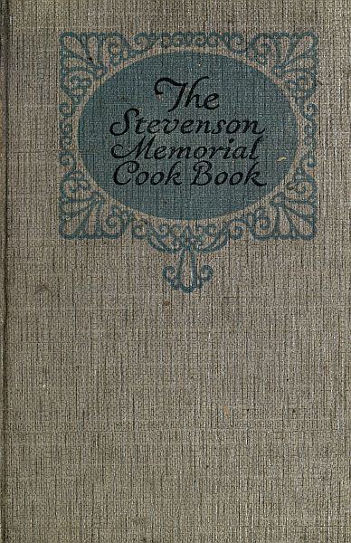
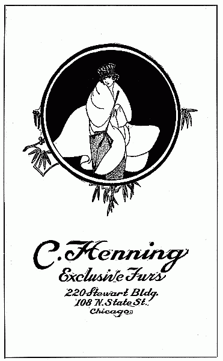
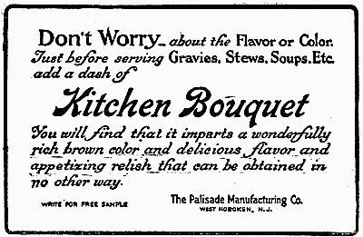
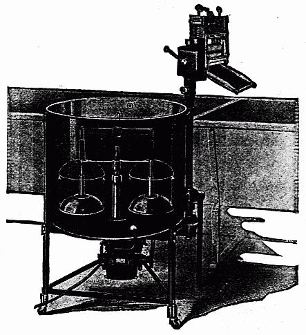
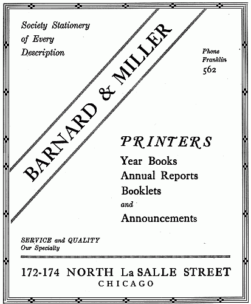
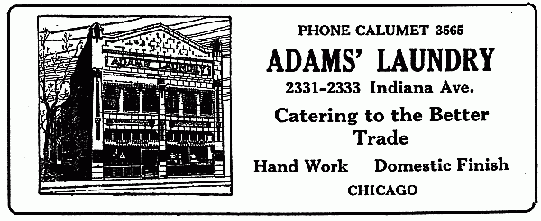

Title: Stevenson Memorial Cook Book
Compiler: Mrs. William D. Hurlbut
Release date: January 27, 2010 [eBook #31102]
Most recently updated: January 6, 2021
Language: English
Credits: Produced by Emmy, Tor Martin Kristiansen and the Online
Distributed Proofreading Team at https://www.pgdp.net (This
file was produced from images generously made available
by The Internet Archive)

These retained errors include such things as "lawyer" for "layer," "maringue" for "meringue," varied spellings of "ramekin," and the contributor's names.
[1]
[2]
| Page | |
| APPETIZERS | 7 |
| BEVERAGES | 159 |
| BREAD | 107 |
| CAKES | 117 |
| CANDIES | 181 |
| CHEESE DISHES | 177 |
| COOKIES | 131 |
| DESSERTS | 83 |
| EGG DISHES | 171 |
| FILLINGS AND ICINGS | 127 |
| FISH | 23 |
| HOUSEHOLD HINTS | 193 |
| MEATS AND FOWL | 35 |
| PICKLES | 141 |
| PIES | 77 |
| PRESERVES | 149 |
| FROZEN DISHES | 99 |
| PUDDINGS | 89 |
| SALADS | 67 |
| SANDWICHES | 165 |
| SAUCES | 51 |
| SHELL FISH | 29 |
| SOUPS | 15 |
| TIME REQUIRED | 192 |
| VEGETABLES | 55 |
| WEIGHTS AND MEASURES | 191 |
[3]
[4]
[5]
During the year 1893 on the streets of Chicago were hundreds of women who had been thrown out of employment. The genuine helplessness and hopelessness of these women appealed strongly to the generous heart of a wonderful woman, Dr. Sarah Hackett Stevenson, one time president of the Chicago Woman's Club. She went before this club and stated that there was no place in this great city where a woman without funds could find shelter—a woman who would work if given an opportunity. She demanded in the name of humanity that this, her club, do something at once to relieve the situation.
Her plea had its effect, and money was subscribed for beginning work. Other clubs responded to the call for help and contributed both furnishings and funds. And what was called the Woman's Model Lodging House was opened to the public.
No questions were asked of those who came for shelter—the past was not the thing to be dealt with—only the present and future. A charge of 15 cents a night was made, and if they were without money work was given them and they were paid for it—they, in turn, paying for their lodging. It was the principle of the organization that the actual handling of this money helped to preserve self-respect and that they might not feel themselves objects of charity. This principle has held through the years and no woman or child is turned from the door as long as there is a place to rest.
Hon. William B. McKinley of Champaign, Ill., gave as a memorial to Dr. Stevenson the present home at 2412 Prairie avenue, which will accommodate sixty women and about fifty children. The organization has become one of the strongest in the city—a delegated body of eighty-two members who represent women's organizations of Cook County. For the last few years the work has grown and broadened, until almost every trouble and sorrow that can come to women and children is brought to this door.
The woman who is on the downward path of years, when it is so hard to find employment, her little money gone, often weakened both mentally and physically from lack of nourishment and worry—she might be any one's mother—if not able to work for her lodging, is supplied[6] from the loan fund. Often she can return the small amount and she does not feel that she has received charity, but that the hand of a friend has grasped hers, and her faith in humanity is restored. The young girl who is alone and without money is safe from the cheap rooming houses of the city. The mother with her little family, who has been left, by desertion or death, without the father's protection comes to this home and remains until she can gather up the thread of existence once more. Often she is saved from placing her children in institutions or giving them for adoption. An average of 105 women and children are cared for in the Lodging House each day.
As time brought the need of better facilities for the care of the children, the generous friend of the Institution, Wm. B. McKinley, gave the building at 2408 Prairie avenue for Nursery purposes. Here the children are cared for during the day, while the mother is seeking employment, or otherwise adjusting her affairs.
A limited number of neighborhood children are also cared for. A trained nurse and kindergartner are employed. Twenty-four hour feedings for bottle babies are furnished so that the little ones diet may not be disturbed. In this department 60 children are given daily care. The mother has charge of her family at night. Every effort is made by this organization to keep the mother and her children together. We believe that separation should be only after every other method has failed.
A visit to the Stevenson Memorial will interest you and you are most welcome at all times.
[7]
Toast small squares or rounds of bread on one side; on the other side grate cheese and set in oven until cheese is melted; add paprika.
Cut bread in quarter-inch slices. Spread lightly with French mustard. Sprinkle with grated cheese and finely chopped olives. Brown slightly in oven.
Toast small pieces of bread; cover with a paste made of sardines and a little lemon juice, and top with the yolks of hard boiled egg put through the ricer.
Two cans small sardines; one teaspoonful catsup; one teaspoonful lemon juice; a dash of tabasco sauce. Place slice of bread on leaf of lettuce then lay two small sardines across with chopped eggs, and last add catsup, lemon juice and tabasco sauce.
Two cans of sardines boned; two tablespoonfuls chopped pickled beets; mix thoroughly and spread on slices of bread; sprinkle chopped eggs over same and serve.
Mash sardines with silver fork, after removing tails and loose skin. Cover with juice of one-half lemon. Spread on thin slices of bread, cut either round or oblong. Cover with grated cheese and toast until cheese melts. Serve hot.
On a small piece of toast put a paste of salmon, and on this a slice of ripe tomato with mayonnaise.[8]
Chop one-half cup of lobster meat fine and mix thoroughly with the white of two hard boiled eggs which has been pressed through a ricer. Season with salt, pepper, one teaspoonful mustard and moisten with thick mayonnaise. Saute circular pieces of bread until brown, then spread with the mixture. Sprinkle over the top a thin layer of hard boiled yolks and lobster pressed through the ricer.
Dip edges of toast in egg, then in finely minced parsley or chervil; spread with anchovy butter and garnish with cold boiled eggs, olives and capers; or
On the same foundation use tartar sauce, boned anchovies curled around edge and garnish with a stuffed olive or gherkin fan; a gherkin fan is made by cutting it in thin slices, not quite through, and putting the ends together; or
Cover toast with tomato slices, curl anchovy in center and season with lemon, onion juice and paprika; or
Garnish with powdered egg yolk and diced whites; or
Spread toast with anchovy butter, cover with mayonnaise mixed with chili sauce.
Cook fresh mushrooms in butter, place on rounds of toast, spread with chervil or parsley butter; pipe a mound of beaten egg white, seasoned with salt and pepper, on each mushroom and place in hot oven until maringue is brown.
Remove stones from large prunes and olives; stuff olives with capers and bits of anchovy; put them in the prunes, wrap each prune with bacon and tie with a thread. Place in hot oven until bacon is crisp, remove thread and place on disks of toast spread with Parmesan butter.
Spread toast with mustard cream, garnish with tiny strips of tongue, put a lozenge of white meat of chicken in center, on this put a slice of truffle, both marinated in French dressing.
Slice of tomatoes on lettuce; combination of crabmeat, celery and pearl onions. Serve with oil mayonnaise.
Spread toast with horseradish butter, lay on strips of tunnyfish and garnish with slices of gherkin.[9]
Lightly toast circles of bread, cut out with biscuit cutter, one-half inch thick. Cover each circle with a slice of tomato. Sprinkle with salt and pepper. Cover tomato with layer of caviar, garnishing edge with finely cut white of hard boiled egg. Instead of caviar, the tiny white onions (bottled) or yolk of egg finely chopped may be substituted. Serve on plate with fancy paper doily.
Slice of toast, cut shape of tomato; spread with anchovy paste; topped with tomato slice, and yellow American cheese, browned and melted in oven. Toast only one side of bread.
Cut rounds of fresh bread and toast lightly in oven. Cover with Sardinola paste, then sprinkle grated cheese over top, then brown slightly and serve while hot.
Spread toast with mustard butter, cover with minced chicken and garnish with olives, pickles, capers and pearl onions; or
Border edge of toast with minced tongue or ham, fill center with chicken mixed with mayonnaise and garnish with minced truffles.
Cover anchovies with lemon juice and paprika; in an hour or two place them on tomato slices sprinkled with pulverized egg yolk and garnish with the egg white cut in strips.
Parboil six artichokes, or celery hearts cut in cups, in salted acidulated water, cool and marinate in French dressing; fill cups with diced or shredded mixed vegetables and top with mayonnaise; or
Coat the cups with aspic and fill with caviar.
Canned artichokes which are already cooked may be used.
Cut peeled cucumbers into inch lengths, scoop out centers, leaving a little at the bottom, fill with lobster or shrimp cream and garnish edge with anchovies, mixed olives, capers or pimentoes; or
Fill with caviar mixed with lemon juice and garnish with pearl onions and minced cress.
Cut hard boiled eggs in halves, remove yolks and fill with shredded shrimps mixed with mayonnaise; garnish with powdered yolks and serve on lettuce leaves.[10]
Hard boil as many eggs as you have services; peel and cut the whites to represent baskets, carefully scoop out the yolks and fill the baskets with caviar. Toast rounds of bread, cover with the yolks which have been put through ricer, stand a basket in the center of each and serve with a thin slice of lemon.
Spread brown bread toast with creamed butter mixed with pate de foie gras; cover with cooked sweetbreads mixed with cucumber, pepper, gras and mayonnaise. Garnish with sweet red peppers.
Spread rounds of toast with liver sausage; garnish with yolks of hard boiled egg put through ricer; in the center place a spoonful of minced stuffed olives.
Spread rounds of toast with mayonnaise; cover with a slice of tomato; mince sardines with yolk of a hard boiled egg and finely chopped stuffed olives; cover the tomato with this mixture and place a spoonful of mayonnaise on top.
Rounds of bread toasted on one side; spread untoasted side with a mixture of butter and Parmesan cheese. To a small quantity of cream sauce, add one cup crab flakes and heat. Put mounds of crab flakes on the buttered toast and put under blaze long enough to brown slightly.
Toast rounds of bread on one side; spread the untoasted side with mayonnaise, and on this lay a slice of summer sausage as thin as it can be cut; top with minced olive and pimento in mayonnaise.
To one cup minced stuffed olives add one-half cup minced nut meats and one-half cup oil mayonnaise; mix well and spread on toasted bread cut in any shape you want. Garnish with a little mound of mayonnaise sprinkled with paprika.
Shred some pineapple; add grape fruit pulp and seeded white grapes; cover with hot sugar and water syrup and let stand until cold; flavor with sherry and serve in cocktail glasses that have been chilled by filling with ice an hour before time to serve.[11]
Scoop out rounds of watermelon and cantaloupe, thoroughly chilled; put in glasses, sprinkle with pulverized sugar and pour over each two tablespoonfuls ice cold ginger ale. Garnish with cherry.
Select large ripe berries, and if very sandy, wash them. Remove hulls and cut them in halves lengthwise; fill glasses with berries and pour over them a dressing made by mixing one cup of water and two tablespoonfuls sugar, let boil three minutes; cool and add one-half cup claret; let this dressing be ice cold when poured over the berries. Serve.
Select the big California cherries; take out the stones and insert in their places walnut, almond or hazel nut meats. Half fill the glasses with a cold syrup made of fruit juice and a little sugar.
Remove the skin from the orange sections, place in a chilled cocktail glass and pour over a syrup made of sweetened orange juice and a little sherry. Decorate with sugar coated mint sprays.
Select uniform sized tomatoes; cut in halves lengthwise. In each glass place a small, crisp leaf of head lettuce; put one-half of a tomato on each and half fill the glass with cocktail sauce.
Boil green shrimp until tender, about twenty-five minutes. Peel and break in halves, if large; dice celery and olives with the shrimp, mix well and cover with a cocktail sauce.
Drain sardines from oil in box; remove skin, tail and bones; break into small pieces; mince celery and mix with it; put in cocktail glass and cover with sauce made of one-half cup catsup, juice of one lemon; tablespoonful horseradish and a little salt.
Two tablespoonfuls crabmeat to each person. To one cup tomato catsup add juice of one lemon, two tablespoonfuls grated horseradish thinned with vinegar; a few drops of tabasco sauce and just before serving, a tablespoonful cracked ice.[12]
To one cup of Japanese crab flakes mince one stalk of celery, one teaspoonful capers and mix well. Fill green pepper cases with the mixture and cover with two tablespoonfuls cocktail sauce.
Three tablespoonfuls of tomato, or mushroom catsup; three tablespoonfuls lemon juice; one tablespoonful horseradish; a few drops tabasco; salt and paprika. Stir well and allow about two tablespoonfuls of the sauce for each cocktail.
Mix well four tablespoonfuls tomato catsup; one of vinegar; two of lemon juice; one of grated horseradish; one of Worcestershire sauce; one teaspoonful salt and a few drops of tabasco. Have very cold when poured over cocktails.
One tablespoonful freshly grated horseradish; one tablespoonful vinegar; half a teaspoonful tabasco sauce; two tablespoonfuls lemon juice; one tablespoonful chili sauce; half a teaspoonful Worcestershire sauce. Mix and let stand on ice until ready to serve.
Two tablespoonfuls each tomato catsup and sherry wine; one tablespoonful lemon juice; a few drops tabasco sauce; half a teaspoonful minced chives and a little salt. Have thoroughly chilled before pouring over cocktail.
Rub a bowl with a clove of garlic; two tablespoonfuls tomato catsup; one tablespoonful grated horseradish; one tablespoonful mushroom catsup; one teaspoonful lemon juice; one teaspoonful finely chopped chives; a few drops of tabasco sauce, salt and pepper.
[15]
Cook one bunch of asparagus twenty minutes, drain and reserve tops; add two cups of stock and one slice of onion minced; boil thirty minutes. Rub through sieve and thicken with two tablespoonfuls butter and two tablespoonfuls of flour rubbed together. Add salt, pepper, two cups milk and the tips.
Put one quart of milk to heat. While it is heating, put the cooked beans through colander. Blend one tablespoonful butter with one of flour; pour over this the hot milk. Season with salt and pepper, stir until smooth, and then add the beans. Pea or asparagus soup can be made in the same way.
Cut up one small head of cabbage and boil until quite tender. Put it through a colander, add one quart of milk, salt and pepper and thicken with two tablespoonfuls each of butter and flour rubbed together.
Cut four heads celery into small pieces and boil it in three pints of water with one-fourth pound of lean ham minced; simmer gently for an hour. Strain through a sieve and return to the pan adding one quart of milk, salt and pepper; thicken with two tablespoonfuls of butter and two tablespoonfuls of flour rubbed to a paste. Serve with whipped cream on top.
Put one can of corn on to simmer with one pint of water and one small onion sliced; cook thirty minutes. Strain, return to the pan, adding one quart of milk, salt and pepper and thicken with two tablespoonfuls of flour and butter. Serve hot with a spoonful of whipped cream on top.[16]
If dried beans are used, soak them over night; in the morning drain and add three pints of cold water; cook until soft and run through a sieve. Slice two onions and a carrot and cook in two tablespoonfuls of butter; remove vegetables, add two tablespoonfuls flour, salt and pepper, stirring until very smooth; add to this one cup of milk or cream and put into the strained soup; reheat and add two tablespoonfuls more of butter in small pieces.
One-half pound of mushrooms, cleaned and chopped fine, add to four cups of chicken broth, cook twenty minutes; thicken with two tablespoonfuls butter and two of flour blended with one cup of boiling water. When the boiling point is reached add one cup of cream and the well beaten yolks of two eggs.
One-half pound mushrooms, washed and peeled and chopped very fine; cover with one pint of water and boil one-half hour slowly; one quart milk scald in double boiler; season with one tablespoonful butter, salt and pepper; add mushrooms and let come to a boil. Just before serving, add finely chopped parsley. Thicken milk with one tablespoonful flour mixed with cold water and put through a strainer.
One cup rice; one large onion; one quart milk; one tablespoonful butter. Boil rice in salted water until tender, press through sieve, and add milk slowly, stirring constantly until all is well mixed, lastly add butter and season to taste.
Wash and cook enough spinach to make a pint; chop it fine and put in a pan with two tablespoonfuls of butter, one teaspoonful salt and a few gratings of nutmeg; cook and stir it about ten minutes; add three pints of soup stock, let it boil up and put it through a strainer. Set it on the fire again and when at the boiling point remove and add one tablespoonful of butter and one teaspoonful of sugar. Thicken with flour mixed with milk or water.
Cook one quart of tomatoes with one slice onion, two teaspoonfuls sugar and one-fourth teaspoonful soda about fifteen minutes; rub through a sieve and set to one side. Scald one quart of milk and thicken with flour diluted with cold water; be careful that the mixture is free from lumps; cook from fifteen to twenty minutes; when ready to serve combine the mixtures, add bits of butter, salt and pepper and a spoonful of whipped cream on top.[17]
One can of corn; one cupful of diced potatoes; one and one-half inch cube of fat salt pork; one tablespoonful onion juice; four cupfuls of scalded milk; two tablespoonfuls of butter; a teaspoonful of salt and a teaspoonful of pepper. Cut pork into small bits and fry until nicely browned; add onion juice and milk and potatoes, which have been boiled in salted water until tender; corn, salt and pepper. Let all just come to the boiling point. Put a few rolled crackers in each plate and pour in chowder. Tomatoes may be added if liked.
Chop fine 25 clams. Put over the fire the liquor that was drained from them and a cup of water; add the chopped clams and boil half an hour; season to taste with salt, pepper and butter; boil up again and add one quart of milk, boiling hot, and two crackers which have been rolled fine. Serve.
Two tablespoonfuls flour; one and one-half pints beef stock; two tablespoonfuls cream; one egg; butter size of an egg. Put butter and flour in a saucepan, stir until smooth; add stock little by little; just before taking from the fire add the cream and egg well beaten together. Salt and pepper to taste.
Take six nice slices of red fish, roll them in flour, season with salt and fry in hot lard, but not entirely done, simply brown on both sides, and set aside. For the sauce, fry in hot lard a large onion chopped fine and a spoonful of flour. When brown, stir in a wineglass of claret, large spoonfuls of garlic and parsley chopped fine, three bay leaves, a spray of thyme, a piece of strong red pepper and salt to taste. Lastly, add your fried fish and cook slowly for an hour. Serve with toast bread.
Four cups tomato; four stalks celery; one small onion; four cups water; sugar, salt and pepper to taste; boil until celery is well done. Strain and serve in cups with whipped cream.
Two tablespoonfuls of sugar; one carrot; one onion; one pint tomatoes; three stalks celery (or salt spoon of celery seed); two whole cloves; one salt spoon pepper; one bay leaf; blade of mace; one teaspoonful salt; two quarts cold water; white of one egg; small piece of butter. Burn sugar in kettle, add onion and brown; add carrot and celery, and then cold water and other ingredients except butter and egg. Mix thoroughly, boil, strain through two thicknesses of cheese-cloth, add butter and serve.[18]
Put one quart of tomatoes in pan and simmer twenty minutes; add one-third package of gelatine and stir until dissolved. Strain through a fine sieve, season with salt, pepper and put in ice box to harden. Cut in cubes in bouillon cups and serve with thin slices of lemon.
Clean a nice young chicken, cut in pieces and fry in hot lard. Add a large sliced onion, a spoonful of flour, two dozen boiled shrimps, two dozen oysters and a few pieces of ham. Fry all together and when brown add a quart and a half of water, and let boil for an hour. Season with chopped parsley, salt and strong pepper. Just before removing and while boiling, stir in quickly a teaspoonful of the powdered file. Take away and pour in tureen. Serve hot with rice cooked dry.
Cut an old fat chicken into small pieces, chop small four onions, place the onions in five ounces of lard and let cook until well browned. Then put in four spoonfuls of flour and let cook five minutes. Put in half gallon good rich stock, add a can of tomatoes, can of okra, season with salt, pepper and cayenne. Tie a small quantity of thyme, sweet bay leaves and parsley in a bit of cloth. Then add twenty-four large shrimps, half dozen hard shell crabs and twenty-four oysters. Let the whole cook for two hours on slow fire. Serve with rice boiled dry for each person.
After boiling a soup bone thoroughly, add a can of tomatoes; strain and put it on the stove again; brown flour enough to thicken it to the consistence of cream; add a lemon or two (sliced very thin and boiled a few minutes in water); one teaspoonful each of ground cloves; cinnamon and allspice. Just before you wish to serve add the hard boiled yolk of an egg for each person; chop the whites and put in the tureen.
Wash well a pint of split peas and cover with cold water, adding one-third teaspoonful of soda; let them remain in this over night to swell. In the morning put them in a kettle with a close fitting top; pour over them three quarts of cold water, adding half a pound of lean ham or bacon cut into slices or pieces; also a teaspoonful salt, a little pepper and a stalk of celery cut fine. When the soup begins to boil, skim the froth from the surface. Cook slowly from three to four hours, stirring occasionally until the peas are all dissolved. Strain through a colander and leave out meat. It should be quite thick. If not rich enough, add a small piece of butter. Serve with small squares of toasted bread cut up and added.[19]
Peel and slice five medium sized potatoes, cook in boiling salted water; when soft put through a strainer. Scald one quart of milk with one small onion sliced, remove onion and add milk slowly to potatoes. Melt three tablespoonfuls butter, add two tablespoonfuls of flour, one teaspoonful salt, one-quarter spoonful celery salt and dash of white pepper and stir until thoroughly mixed, add to the boiling soup; cook one minute, strain and serve; sprinkle with chopped parsley.
Two pounds of lean beef; one-half gallon cold water; six whole cloves; one-half box gelatin soaked in one-half cupful of water for fifteen minutes; six black pepper corns; one tablespoonful salt; two tablespoonfuls sherry; the juice of one lemon. Cut the beef into the water, add peppercorns, cloves and salt and let simmer slowly four hours. Add the gelatin and strain; to this add lemon juice and pour into a mold. When cold it will slice nicely.
Boil to a pulp, in a quart of water, twelve ripe tomatoes which have been peeled and cut up. Strain, place on stove and add two tablespoonfuls butter rubbed into two tablespoonfuls of flour; add salt, pepper and sugar to taste, onion juice and minced parsley. Cook ten minutes and stir in one cup of cooked rice.
Slice and boil until tender eight medium sized onions; have a strong soup stock ready; add the onions and season to taste. In each plate place a piece of toast and grate Parmesan cheese over it, then slowly add the soup the heat of which will melt the cheese. Serve.
One nice meaty oxtail; two medium sized carrots; two onions; one small turnip; two-thirds teaspoonful Kitchen Bouquet; one bay leaf; four peppercorns; two or three celery leaves; dash of pepper; salt to taste. Wash and cover oxtail with water, add carrots cut in cubes. Cut onion and turnip fine and put in a muslin bag with bay leaf, peppercorns and celery leaves. This will leave only the carrot and meat in soup for table. Bring to a boil and simmer for about four hours. Add pepper, salt and Kitchen Bouquet and serve.
Boil one can of peas with a half a pound of salt pork until very soft. Strain and squeeze through a colander. Add one pint of soup stock and one-half pint of cream. Salt and pepper to taste. Serve with whipped cream.[20]
One quart of milk; three slices of onion; one tablespoonful flour; one tablespoonful butter; three tablespoonfuls grated cheese; two egg yolks beaten; one teaspoonful Kitchen Bouquet. Simmer onion in butter, but do not brown; add flour and milk and stir until smooth, then add the cheese and Kitchen Bouquet. Just before taking up add the yolks of eggs. Whip some cream and put one teaspoonful in each cup.
One cup navy beans; four slices bacon; one No. 2 can of tomatoes; one small onion; one level tablespoonful salt; one-fourth tablespoonful black pepper. Soak navy beans over night, in morning put beans on to boil with a pinch of soda in water. When they come to a boil, pour off this water, return to stove, cover with clear water, add onion and bacon, let boil until tender. When tender strain through sieve, being sure to press all through, as far as possible. Next add the strained tomatoes and seasoning and lastly, thin with cream or milk to consistency desired.
Cut mutton into small pieces and let it stew all day. Boil one-fourth pint pearl barley in a little water until tender; strain it dry, chop fine two large onions and turnips and put with the barley and meat into a stew pan. Strain the broth into it, also the water from the barley and let it boil one and a half hours and skim. Season with salt and pepper.
[23]
Mix enough uncooked white fish or Halibut to make two cups; add half a cup soft bread crumbs; three-fourths cup cream. Press through a colander, season with salt, pepper, lemon juice, and a little Worcestershire sauce. Fold in carefully beaten whites of the two eggs. Turn into buttered molds and steam one hour. Serve hot with Hollandaise sauce.
Butter a steamer and place a thick slice of Halibut steak on it; put over hot water and cook until done. Remove to hot platter and pour over it hot lobster sauce.
Lobster Sauce: Remove the meat from a fresh lobster, about one and one-half pounds; make a rich cream sauce, add the lobster and pour over Halibut.
One thick slice of Halibut; one small onion; one tablespoonful butter; one saltspoonful pepper; one teaspoonful Kitchen Bouquet; one level teaspoonful salt; one-half cup water. Chop the onion and put in bottom of baking pan. Put Halibut on top and dust with salt and pepper. Pour over the water to which has been added the Kitchen Bouquet, and then add the melted butter. Bake in rather quick oven until nicely browned. Garnish with parsley and slices of lemon and pour over sauce left in pan.
One cup baked fish; four eggs; one cup bread crumbs; one heaping tablespoonful butter. Mix flaked fish and fresh bread or crumbs, place in greased baking dish, pour over the beaten eggs and milk; the seasoning should be added to the fish and bread crumbs before placing in dish. Add the butter in small pieces over the top of the dish, before placing in oven. Bake in hot oven thirty minutes.[24]
Bake a well selected fish in oven after seasoning with pepper and salt. When done serve with sauce made as follows:
Pour a quantity of sweet oil in a saucepan. When hot, add two sliced onions and when they are cooked, add flour and let onions brown in same. Strain a can of tomatoes and add thereto a small glass of good wine, and a box of mushrooms chopped fine. Let sauce cook, after adding a boquet of thyme, sweet bay, cloves, green onions and garlic. Use red pepper only; and pour over baked fish and serve.
One and one-half cupfuls of raw codfish picked up; three cupfuls of raw potatoes, diced; one egg; butter size of a walnut; boil potatoes and fish together until potatoes are soft. Mash, and add pepper and a dash of salt, butter and unbeaten egg and beat until light and thoroughly mixed. Shape roughly in a tablespoon and fry in smoking fat.
Half pint measure of raw potatoes, cut in small pieces; one-half pint cod, picked to small pieces. Boil together until potatoes are tender; pour off water and mash very fine; add one egg, one tablespoonful cream and dash pepper. Form on a spoon and fry in hot lard. Lay on brown paper to absorb grease. Serve with cream sauce if desired.
Sauce: One tablespoonful butter; one tablespoonful flour; cook but do not brown. Add to this a pint boiling milk, a pinch salt, and a few pieces of cod to flavor.
Two cups shredded codfish; one cup milk; one tablespoonful flour for thickening; three eggs. Put milk on stove to warm, then add thickening, then codfish that has been soaked and drained, then the beaten yolks. Lastly fold in the whites beaten.
Wash fish well; lay in dripping pan, cover with fresh water and allow to stand an hour. Drain, place on fish plank, brush with melted butter and put under blaze, not too close, and broil for twenty minutes, or until a nice brown. Take out plank, surround the edge with mashed potatoes, decorate with hard boiled eggs and sprigs of parsley.
Boil shad roe for fifteen minutes in acidulated salted water; remove, cover with cold water and let stand for a few minutes; dry thoroughly and roll in cracker crumbs, egg and again in crumbs and fry. Garnish with lemon slices.[25]
One cup cracker crumbs; one saltspoon salt; one saltspoon pepper; one saltspoon chopped onions; one saltspoon parsley; one teaspoonful capers; one teaspoonful chopped pickles; small piece of butter.
Boil roe in salted water (acidulated) five minutes, drain, and cover with cold water five minutes; drain and wipe dry. Brush with melted butter, dust with salt and pepper and paprika. Put in casserole, pour on one-half cup stock and one-fourth cup best sherry or water and bake twenty minutes. Add to sauce two or three yolks mixed with one cup cream and strain over roe. Or pour over thin tomato sauce.
Trim and clean the frogs legs; boil three minutes. Cover with a sauce made as follows: Three tablespoonfuls butter and three of flour rubbed together; add one-half cup of cream and one cup of chicken stock; season with salt and pepper and just before serving add the yolks of two eggs, well beaten, and one-half tablespoonful lemon juice. Very nice served in a chafing dish.
Trim and wipe the desired number of frogs legs; sprinkle with salt and pepper, dip in fine cracker crumbs, beaten egg and again in crumbs. Fry three minutes in deep hot fat. Drain and serve at once with tartare sauce.
One pint milk; three tablespoonfuls flour; stir until smooth; cook and remove from fire; add one-half cup butter. When cool add two well beaten eggs, pepper and salt and bake in casserole, putting a layer of sauce, then salmon and finish with bread crumbs on top. Bake about thirty minutes.
One can of salmon; three eggs; one-half pint milk; chopped parsley, pepper and salt and a little Worcestershire sauce. Chop the salmon very fine, first picking away all skin and bone; beat the eggs, add the seasoning, mix thoroughly and steam two hours in a mould.
One pound of salmon; one cup cream; two tablespoonfuls butter; one tablespoonful flour; three eggs, seasoning. Chop the salmon fine, make a cream sauce of the butter, flour and cream; add the salmon and seasoning; boil one minute; stir in one well beaten egg and remove from fire. When cold, make into croquettes; dip in cracker crumbs, then in beaten eggs, again in cracker crumbs and fry in deep fat.[26]
One pound can of salmon; one-half tablespoonful each of sugar and flour; one tablespoonful melted butter; one teaspoonful salt; one-half teaspoonful mustard; dash of cayenne; yolks of two eggs, beaten; three-fourths cup milk or cream; one-fourth cup vinegar. Pick salmon over and put with other ingredients (after carefully blending them) into double boiler; cook until eggs are done; remove from fire and add three tablespoonfuls of gelatin, softened in cold water. Mould, chill, and serve with cucumber sauce.
Sauce: One-half cup cream, beaten; season with salt, pepper and a little onion juice. Add two tablespoonfuls vinegar and one cucumber chopped fine and drained as dry as possible.
Moisten one cup flaked salmon with butter sauce, pinch minced parsley; one hard boiled egg, chopped fine. Line individual buttered molds with mashed potatoes. Fill centers with fish, cover with potato. Turn out carefully, roll in egg crumbs and fry brown. Garnish with a slice of hard boiled egg on top of mold and parsley.
Mince one-half pound smoked sturgeon; beat six eggs until light, add sturgeon; have butter heated in a skillet, add the mixture and scramble. Serve with toast points.
Cook together a tablespoonful each of butter and flour; pour upon this a cupful of sweet milk and stir until thick and smooth. Season with salt and white pepper, add one hard boiled egg chopped fine; and one raw egg beaten light. Stir just long enough for the sauce to return to the boil and serve.
[29]
One-half pound of veal; one pint oysters; one-fourth pound of suet; all chopped fine. Add enough rolled cracker to make into patties; dip in egg and fry in butter.
Two sets of calf brains, stewed in salt water; one quart oysters, stew in their own liquor until they curl, cut in small pieces. Chop brains and mix with oysters; two tablespoonfuls melted butter; a few drops onion juice; four tablespoonfuls bread crumbs; one-half cup cream. If too dry add a little of the oyster juice. Bake in shells.
One pint of oysters, seasoned with salt and pepper, stiffened with cracker dust to hold shape, place in oyster shells, pour over melted butter. Put shells in a dripping pan and bake in a quick oven to a light brown.
Put large tablespoonful of butter in chafing dish, when melted add two tablespoonfuls of sifted flour, mix thoroughly, then add juice strained from one quart of oysters, cook until thickness of cream, constantly stirring, then add oysters, cook until edges curl, season to taste with salt and pepper, serve on toasted crackers.
One quart of bulk oysters, one-half dozen stalks of celery, cut into one-half inch pieces. Drain the oysters, reserving the liquor. Cover bottom of baking dish with crumbs of bread or crackers, then a layer of the oysters, with a generous dash of salt and pepper and plenty of butter. Over this put a lawyer of the celery, fill the dish in this way and pour over one cup of the oyster liquor. On top sprinkle a thick layer of the crumbs, adding butter in small pieces. Bake one hour in a moderate oven.[30]
Line a shallow pudding pan with light pastry, put in oysters, milk, butter, salt and pepper, bake in a very quick oven 20 minutes; one pint of oysters, one pint milk, one tablespoonful butter, salt and pepper to taste.
Scrub the shells of live oysters until free from sand; place in dripping pan in a hot oven and roast until shells open; take off the top shell, being careful not to spill the juice in lower shell; serve in the shell with side dish of melted butter.
Clean one pint of oysters and drain from their liquor. Put in a stewpan and cook until oysters are plump and edges begin to curl. Shake pan to prevent oysters from adhering to pan. Season with salt, pepper and two tablespoonfuls butter and put over small slices of toast. Garnish with parsley.
Clean one pint of oysters, heat oyster liquor to boiling point, strain through double thickness of cheese-cloth; add oysters to liquor and cook until plump. Remove oysters with skimmer and add enough cream to oysters to make one cupful. Melt two tablespoonfuls butter and add two of flour; then pour on gradually the hot liquor; add salt, paprika, one teaspoonful finely minced parsley and one egg slightly beaten. Pour over oysters and serve.
Clean oysters and dry on a towel. Dip in butter, then in cracker crumbs seasoned with salt and pepper; place in a buttered wire broiler and broil until juice runs; turn and cook other side. Place on toast, mince celery over the oysters and pour over all a thin cream sauce.
Select large oysters; wrap a thin slice of bacon around each, fastening with a toothpick; place in a broiler, which in turn is put in a dripping pan to catch the drippings; broil until bacon is brown and crisp, turning to cook other side. Garnish with parsley.
One pint oysters; one-fourth cup butter; one-fourth cup flour; one cupful oyster liquor; one-half cup milk; one teaspoonful Kitchen Bouquet; one-half teaspoonful salt; one-eighth teaspoonful pepper. Parboil and drain the oysters. Brown the butter, add the flour and stir until well blended, add oyster liquor, milk, Kitchen Bouquet, salt, pepper and oysters. Serve in patty cases or ramekins.[31]
Line ramekins or large casserole with minced chicken, seasoned well, and moistened with a little cream. Fill with parboiled oysters cut in pieces, and mushrooms sliced sauted in butter and mixed with the following sauce: Cook three tablespoonfuls salt pork fat with three of flour, add salt, cayenne, nutmeg and parsley; also thyme and mushroom parings. Cook a moment, add one and one-half cups white stock, and simmer one hour, skimming often. Strain, add about one-half cup hot cream or enough to make sauce right consistency. Add four drops lemon juice. Cover with more chicken, sprinkle with buttered crumbs, and brown in oven.
Boil macaroni in salted water, drain through a colander. Drain oysters until the liquor is all off. In a casserole put alternate layers of macaroni, oysters and a thick cream sauce, until dish is filled; sprinkle top with grated cheese and bake about half an hour.
Drain two dozen oysters. Have ready some hot lard and throw them in. Let fry until they begin to curl, then spread over them four well beaten eggs seasoned with salt and pepper and stir all together until done. Serve hot.
Clean one quart of scallops, turn into a saucepan and cook until they begin to shrivel; drain and dry between towels. Roll in fine cracker crumbs seasoned with salt and pepper, dip in egg and again in crumbs and fry in deep fat. Garnish with slices of lemon dipped in parsley.
Boil two dozen of large shrimps; when cold, peel and set aside. Fry in hot lard a chopped onion and a cupful of rice washed in cold water. Let the onion and rice fry well, add the shrimps, stirring constantly. When browned, add enough water to cover the whole. Season with salt and pepper, a bay leaf, thyme and chopped parsley. Let boil slowly, and add water until the rice is well cooked. When done, let it dry and serve hot.
Boil the desired quantity of shrimp and set aside. For sauce fry in three tablespoonfuls bacon drippings a large onion, chopped fine; when browned, add three tablespoonfuls flour and blend; add slowly about a quart of water, stirring constantly; when smooth add the shrimp; season with a bay leaf, thyme, a tablespoonful chopped parsley and a clove of garlic, minced. Let cook slowly until ready to serve. Boil rice until dry and creamy and serve with the above.[32]
One pint of shrimp; one tablespoonful flour; one tablespoonful butter; one tablespoonful catsup; one tablespoonful cream; one cup hot soup stock; two yolks eggs; salt, cayenne pepper and grated onion. Heat butter, add flour, then other ingredients. Cook until smooth, then add shrimp. Fill the ramikins with mixture and cover with cracker crumbs and butter. Bake six minutes.
Make a rich cream sauce; add one can of shrimp and one can of green peas; allow to cook until all is well heated, serve on toast.
One can Japanese crab meat; four tablespoonfuls shortening; two green peppers; one large onion; three tomatoes; one cupful milk; two tablespoonfuls flour; one teaspoonful Kitchen Bouquet, one teaspoonful salt, one-fourth teaspoonful pepper. Make a white sauce by melting half the shortening, add flour and when well mixed slowly add milk; stir until creamy, add salt and pepper. In another saucepan melt the other half of shortening, when hot, fry onion and pepper, minced, for ten minutes. Then add tomatoes, cut up, and when tender add Kitchen Bouquet and crab meat and stir slowly into the white sauce. When well mixed, pour over buttered toast and serve.
One good sized lobster; two ounces butter; one small onion; one can mushrooms; one pint boiling water; one teaspoonful Kitchen Bouquet; one teaspoonful salt; one saltspoonful pepper. Put the butter and chopped onion in saucepan, cook until onion is brown, then add two tablespoonfuls flour and the water. When boiling add salt and pepper. Strain and add mushrooms and Kitchen Bouquet. Simmer for ten minutes then stand over hot water. Cut lobster in good sized pieces, put into sauce, cover the pan closely, let stand ten minutes longer over hot water and serve.
[35]
Use a large slice of round steak cut one-half inch thick. Make a dressing by mixing together: One cupful grated breadcrumbs, two-thirds teaspoonful salt, one well-beaten egg, one tablespoonful melted butter, one small onion, grated, a few dashes of paprika and a half teaspoonful powdered sweet herbs. Lay the steak on a board, sprinkle with salt and pepper, spread thickly with the dressing and roll up. Wind with soft cord to hold in place. Put three tablespoonfuls of pork fat in a frying pan and when very hot, dredge the roll with flour and brown it quickly on all sides. Place meat in kettle that has a tight fitting cover. Meanwhile, add to the fat in the pan two slices of minced onion, and one tablespoonful flour. Stir until very smooth, pour in a cupful of stock (or hot water) and when the gravy boils, pour over the roll with a pint of strained tomato. Season to taste with salt and pepper, cover the kettle closely and as soon as the contents boil, place where it will simmer for about two hours. When cooked, remove the strings, and serve on a heated platter, with the strained gravy poured over it.
With two pounds hamburger steak, mix well one cup raw rice (wash well); one medium sized onion, chopped; season and make into balls. Line bottom of a pot with small pieces of suet; when this is melted, place meat balls in the pot, cover with water, and cook until rice is about done. Add one can of tomatoes (quart can). A half hour before serving, peel enough medium-sized potatoes to circle the platter to be used. Place these on top of tomatoes. When potatoes are done, arrange them around the outside rim of the platter with the meat balls in the center, and pour over the meat enough gravy for first serving. Remainder of gravy may be used on table in a casserole or gravy dish. Care must be used in measuring the rice—too much will cause the balls to fall to pieces. One advantage of this dish is that it may be prepared the day before, or the morning before serving, with the exception of the potatoes.[36]
Remove veins, arteries, and blood clots, wash, stuff and sew. Sprinkle with salt, pepper, roll in flour and brown richly in hot dripping. Place in Dutch oven or in one of the small vessels in fireless cooker. Half cover with boiling water, surround with six slices carrot, one stalk celery, broken in pieces, one onion sliced, two sprays parsley, a bit of bay leaf, three cloves and one-half teaspoonful peppercorns. Cover closely and bake slowly two or more hours basting often if cooked in Dutch oven. If necessary, add more water. Remove hearts to serving platter, strain and thicken the liquor with flour diluted with water. Season with salt, pepper and one-half teaspoonful Kitchen Bouquet.
One cup or more of cold cooked beef chopped; one cup of bread crumbs; season with salt, pepper and butter. Place in baking dish and cover with buttered bread crumbs. Pour milk in dish until you can just see it. Bake in oven till light brown on top. Can use any kind of cold cooked beef, as steak, roast, or boiled beef. If you have a few cold mashed potatoes, put them through ricer on top of meat to form upper crust. Dot with butter and let brown.
Round steak one and one-half inches thick. Salt and pepper. Pound a cup of flour in, on both sides. Sear both sides in melted fat, and butter. Put in baking dish and cover with water. Cook in oven two and one-half hours.
One and one-half pounds round steak, ground; one and one-half pounds of pork steak, ground; one heaping cupful bread crumbs; one cupful canned or fresh tomatoes; two green peppers, minced; one-half cupful minced onion; one egg; two teaspoonfuls salt. Mix all together and bake forty-five minutes in flat cake.
Round steak about three inches thick (about two pounds); place in a hot skillet and turn so that it is seared on both sides, to prevent escape of juices. In a covered baking pan make a bed of chopped vegetables (potatoes, turnips, carrots, onions, etc.); season well. Place upon it the beef with enough water to keep the mess steaming for four hours. Cover tight.
Three pounds round steak, ground; three eggs; two-thirds cup cracker crumbs; three teaspoonfuls ground sage; two teaspoonfuls salt; one teaspoonful pepper. Mix together thoroughly and bake in a 5x10-inch bread pan, from one to one and one-half hours.[37]
Butter an earthen baking dish and line to the depth of one and one-half inches with hot mashed potatoes, season with finely chopped chives (one tablespoonful to two cups mashed potatoes). Fill center with chopped left-over cold beef, veal or chicken. Moisten with brown or cream sauce, to which add one-half tablespoonful minced parsley and onion juice. Cover with a layer of the potato mixture, make several openings in top of pie and brush top over with beaten egg, diluted with milk. Bake in hot oven until heated through and well browned. Serve hot in baking dish.
Skewer, tie in shape (if necessary) and lard the upper side of calf's liver. Place in a deep pan with remnants of lardoons; season with salt and pepper; dredge with flour. Surround with one-half each carrot, onion, celery, cut in dice; one-half teaspoonful peppercorns, six cloves, bit of bay leaf and two cups brown stock or water. Cover closely and bake slowly two hours, uncover the last twenty minutes of cooking. Remove from pan, serve with the French onions or pour around brown sauce.
Mix one egg and a little salt and pepper; make into balls and bake in closed pan quickly.
Procure a Boston cut of roast of beef; brown a minced onion in skillet with butter and bacon fat; in this brown all sides of the roast. Remove the roast and in the fat stir two tablespoonfuls of flour and fill skillet nearly full of hot water. Season this gravy well with salt, pepper, bay and garlic and pour over roast in casserole. Place a few slices of tomato on top or pour in a cup of strained tomato; place some carrots around the roast and put in cooker for at least four hours.
Plunge the calf's brains into boiling water for three minutes, remove from water and pick off the dark muscles, roll into cracker dust or bread crumbs in small patties and drop into hot fat. Salt and pepper.
One tablespoonful butter melted in sauce pan, one tablespoonful of flour added and well mixed, one cup milk. Chop beef, or any kind of cold meat quite fine and add to milk after it has thickened; salt and pepper to taste. Then stir in the yolks of three eggs, cook slightly, cool, add beaten whites of eggs. Put in greased dish and bake about half an hour. Is nice served with tomato sauce or peas. About one and one-half cups of the chopped meat for the above.[38]
Two pounds of round steak; one pound fresh pork; four tomatoes; three pimentoes; two eggs; four crackers, rolled; salt, pepper and paprika. Mix altogether; bake in bread pan two hours in moderate oven. Sauce: One and one-half tablespoonfuls butter, flour and milk. Season with liquid from meat.
Pour a mixture of two tablespoonfuls of vinegar; and one of olive oil over a steak. Let stand several hours before broiling. The result is delicious.
Two pounds veal, chopped fine; one teaspoonful chopped parsley; two eggs, hard boiled and chopped; salt and pepper, to taste. Soak enough bread crumbs, and add to mixture; form balls. Roll in egg and cracker crumbs and fry in deep fat.
Order a leg of lamb boned at the market. Make a stuffing as for chicken. Put in roasting pan with a small sliced onion, one-fourth cup each of turnip and carrot, season with bay leaf and parsley. Add three cupfuls of hot water, salt and pepper. Cook slowly until done. Serve with Currant Jelly Sauce.
Currant Jelly Sauce: To the regular brown gravy you would make with roast, add one-half cupful of currant jelly which has been beaten and a little lemon juice; well stirred together and let all boil a minute or two.
Wipe three pounds lamb, cut from neck or shoulder. Cut into pieces two inches square. Melt one-fourth cup dripping, add meat and stir and brown evenly. Add two onions, thinly sliced, one sprig parsley, small bit bay leaf, two cloves and one-half teaspoonful peppercorns (tie last three spices in a bit of cheese cloth), and boiling water to nearly cover meat. Simmer slowly until meat is tender (about one and one-half hours). Then add two or three small carrots, scraped and cut in lengthwise pieces, season with salt. Parboil six medium-sized potatoes cut in thick slices five minutes, drain, add to stew; add two cups thick tomato puree and simmer slowly until vegetables are tender. Add more water if necessary. Remove spices, add one cup French peas when heated through, turn into deep, hot platter and sprinkle with chopped parsley.
Mince cold roast lamb in about half inch pieces; add a sweet green pepper, minced (discarding seeds); add the gravy and heat thoroughly. Serve on toast.[39]
Five tablespoonfuls of salt; two tablespoonfuls of brown sugar; one-half teaspoonful salt peter, or less; this is for five pounds of beef. Cover with water; leave three or four days and boil in same water.
Two cupfuls cold boiled or roast lamb cut into small pieces. Put a tablespoonful of butter into double boiler; when melted add one tablespoonful of flour. Rub smooth; add one pint of milk; stir continuously till it thickens; then set pot back where it won't cook hard, and add one well beaten egg, a tablespoonful minced parsley, a little nutmeg, red pepper, salt to taste, two hard boiled eggs cut (not too fine); then the lamb. Let it keep hot, but not boil, till lamb is thoroughly heated. When serving, add a teaspoonful lemon juice.
Two and one-half pounds of veal; two pork chops, ground together; three eggs; three rolled crackers; one teaspoonful each salt and pepper. Mix well together. Put half of mixture in a loaf pan, peel six eggs which have been hard boiled, clip off the ends so they fit closely together, and lay them in the center of the loaf; place the balance of the meat about them, fill up pan, packing it solid; put in double baker on top of stove to steam for one and one-half hours, spread butter over top and put in oven to finish baking. In slicing it you get the slice of hard boiled egg in the center.
One and one-half pounds of veal and one slice of salt pork, chopped fine. Add two tablespoonfuls of cracker dust; one egg; piece of butter size of an egg; one teaspoonful each of salt and pepper; little grated nutmeg; dash of Worcestershire sauce. Mix well and bake in a loaf shaped pan with cracker crumbs and bits of butter on top. Bake about one and three-quarters hours.
Soak a fifteen pound ham in cold water to cover over night. Wash, scrub and trim off inedible parts. Set over a trivet in a boiler and cover with boiling water. Mix four cups brown sugar, one large sliced onion, one red Chili pepper pod, one tablespoonful each of whole cloves, allspice and cassia buds, two thinly sliced lemons, discarding seeds, add to water in boiler. Cover and cook slowly two and one-half hours. Remove from boiler, peel off rind and put ham in dripping pan, fat side up. Bake slowly two and one-half hours, basting with one cup sherry wine (using a tablespoon) a little at a time until all is used, then baste with dripping in pan thirty minutes, before removing from oven, sprinkle fat side with equal measures of brown sugar and fine bread crumbs, stick with cloves and brown richly. Serve hot champagne, horseradish or mustard sauce.[40]
Two pounds of veal; one pound fresh pork; one-half lemon, bay leaf and one small bottle capers; one clove of garlic; juice of one onion. Put all through grinder, salt, pepper to taste. Roll in small soft balls. Enclose neatly in cabbage leaves, secure with toothpicks. Place in Dutch oven which has previously melted one-fourth pound of butter with a little chopped parsley. Alternate layers with a small sifting of flour until all are in pan. Let simmer in one pint of water (boiling) without allowing any steam to escape for two hours; remove and thicken broth with yolks of five eggs. Serve eight persons.
Buy a center cut of ham, two inches thick (about two and one-half or three pounds); soak over night in milk (sweet or sour) sufficient to cover ham. About two hours before serving time drain off enough milk so that the top of ham is uncovered; spread over this uncovered top; one tablespoonful dry ground mustard mixed with two tablespoonfuls brown sugar; bake in a slow oven. The milk will disappear in a rich brown gravy; if it gets too low in pan add water. When ready to serve remove ham to platter, add flour to fat in pan and when well cooked, add boiling water to make gravy of consistency of thick cream. Lemon slices and sherry may be added. It may need to be strained if milk curds are objected to; pour around ham. Has flavor of finest "Old Virginia Ham."
Have ham cut two inches thick, leaving on rind. Pour over it good, generous cup of milk and one-half cup brown sugar, partly dissolving sugar in the milk on top of stove, before pouring over ham. Cook all in casserole two hours. Serve with rings of fried apples on chop plate.
Cut in small pieces a fresh kidney and fry in hot lard. When almost done add to it a sliced onion, half cup of tomatoes and a slice of ham. Let all fry together, and when done add a spoonful of flour, a piece of red pepper and a spoonful of chopped garlic and parsley. Thin with a little water, season with salt, and let boil a few minutes, when it is done.
One-half pint grated bread crumbs, one cup currants, one saltspoonful of salt, one saltspoonful sweet marjoram or thyme, one salt spoonful of black pepper, moisten with sweet milk. Boil small ham until tender, remove bone and skin, fill in the cavity with dressing, wind with cord into shape, puncture with skewer in the fat parts and fill the holes with dressing. Bake in a closed pan in a hot oven one hour.[41]
Scald one pint of milk, one cup flour; stir constantly until thick. Let cool, then add beaten yolks of eight eggs. Beat thoroughly, add beaten whites, a little suet, one and one-half cups of chopped, boiled ham, and one-half cup butter. Set tin in pan of water, and bake three-fourths of an hour. Keep standing in water until served.
Two pounds of ham, ground; one pound of pork loin, ground; two eggs, beaten; one cupful rolled cracker crumbs; one cupful milk; pepper to taste. Mix all together, put in a baking tin and pour over it one cupful tomatoes and bake two hours.
One large slice of raw ham; one large onion; put through the grinder and fry. When thoroughly cooked add two cups boiled rice; one quart of tomatoes and half of a sweet green pepper, chopped fine. Serve hot on toast.
Place pork roast in dry self-basting or similar roaster. Place in oven for thirty minutes. In meantime put one cup of vinegar, one teaspoonful red pepper, one teaspoonful black pepper, one teaspoonful salt in saucepan and bring to a boil. Baste roast every fifteen or twenty minutes with this sauce at boiling point, draining off sauce after each basting and returning sauce to saucepan, which should be kept at the boiling point. Drain off sauce and serve in separate dish.
Have crown roast made of young pork ribs, same as of lamb; fill the center with medium sized potatoes, boiled and rolled in butter and minced parsley; surround with fried apples.
One and one-half or two pounds of well seasoned sausage meat mold it into a flat cake; place in a frying basket which, in turn, is put in a larger pan, to catch the drippings. Put under the blaze and let it broil slowly; when nicely browned on one side turn it over and brown that side. When done remove to hot platter and surround with fried apples.
In a casserole place a layer of sliced raw potatoes and over it sprinkle of flour. Put in a layer of chops and a layer of potatoes and repeat until casserole is full. Nearly cover with milk that is seasoned with salt and pepper. Sprinkle cheese over top and bake two hours.[42]
One-half pound of salt pork, sliced; six medium onions; six medium potatoes; noodles. Boil salt pork until very nearly done. Add potatoes and onions. Cook until they are beginning to be tender. Have about two quarts of water left. Add noodles and finish cooking. This will make a thick stew.
Sprinkle bottom of dish with flour; place pork chops then on top a layer of sliced raw potatoes and onions, finish with bread crumbs. Bake until potatoes are done. Use no liquid.
Cut thick, wash and dip in flour; place in deep pan; season with pepper, salt, and a little sage. Cover tightly and bake forty minutes in quick oven.
Split two large tenderloins and flatten out as wide as possible, spread one with a very thick layer of dressing (such as is used for turkey dressing). Place the second tenderloin on this and tie them together, roast in a medium oven, basting frequently with boiling water and a small piece of melted butter.
Have two sets of ribs cracked across the middle; rub the insides with salt, pepper and dredge with flour. Cook sauerkraut half an hour, drain and fill the ribs; tie or sew closely together and put in oven. Pour over the ribs the water in which the sauerkraut was boiled. When one side is browned, turn them over and brown the other side. Serve with brown gravy.
To every twenty-one pounds of meat: Lean pork, seven pounds; fat, seven pounds; round beef, seven pounds. Seven ounces salt; one and one-half ounces black pepper; one coffee cup powdered sage and summer savory; one teaspoonful cayenne, slack; one tablespoonful freshly ground ginger; one tablespoonful ground mustard. Get your meat ground at the butchers. Mix the sausage yourself. Mix spices all together with salt, working it through the meat with your hands.
Have butcher split the pigs' feet; boil until bones are ready to fall out; put in an earthen dish and cover with a mild vinegar which has been boiled for ten minutes with a few slices of onion and spices; when the vinegar is cold the pigs' feet will be sufficiently pickled. Drain, roll in flour and fry.[43]
Six pounds lean pork; two pounds fat pork; one pound loaf bread thoroughly soaked in water; two ounces salt; one ounce best white pepper; two medium sized nutmegs, grated. Mix all together, put into chopper. Leg of pork is best, but shoulder will do.
One pair sweetbreads; one can mushrooms; two cups of cream; butter size of an egg; one tablespoonful flour. Parboil sweetbreads twenty minutes then chop rather fine; add mushrooms and chop. Put butter in spider and let it melt and as it begins to brown, add the flour and stir; then add cream, stirring all the time to prevent lumps. Put in the sweetbreads and mushrooms and let cook a few minutes. Add one teaspoonful Worcestershire sauce and pour mixture in baking dish. Put cracker crumbs and lumps of butter on top and bake half an hour.
Parboil sweetbreads in acidulated salt water, cook slowly for twenty minutes; drain, plunge into cold water. Make a rich cream sauce, separate sweetbreads and mix with the cream sauce; put in ramekins, cover with bread crumbs; in the center place a tablespoonful tomato sauce; put in oven and bake until crumbs are brown; place a sprig of parsley on top and serve.
Heat two tablespoonfuls butter until it bubbles; add one chopped green pepper; let cook slowly for three minutes, then add one tablespoonful flour; salt and pepper to taste and enough rich milk to make a smooth thickened sauce; when thoroughly done add two cupfuls cooked chicken and let it heat through. Mushrooms may be added.
Pick the meat from the bones and cut in rather large pieces; add a can of mushrooms and the thickened chicken gravy. Boil noodles twenty minutes in salted water; drain and add noodles to the chicken. Mix all together and let heat thoroughly. Serve with toast points.
Clean and cut up two young chickens, sprinkle with salt and pepper and fry in hot lard. When done, put in a dish and set aside. And now start your sauce. Fry an onion and add flour for thickening. When brown, add a can of sweet peppers, let fry a little, then add the tomatoes and a few bay leaves and a sprig of thyme. When the sauce is done throw in the fried chickens, but do not let the whole boil long.[44]
Parboil one pair sweetbreads in boiling, salted, acidulated water, fifteen minutes. Drain and cut in one-half inch cubes. Add one-half the measure of small mushrooms, heated in the liquor in the can, drained, cooled and sliced, and one tablespoonful pimento cut into bits. Reheat in one and one-half cups of sauce (cream) and serve in patty shells.
Stew until tender a nice fat hen, in plenty of water. Pick meat off bones and shred rather finely. Boil one pound of macaroni or spaghetti twenty minutes in plenty of water to which has been added a teaspoonful of salt. Drain as dry as possible. Cover the bottom of a buttered baking dish with the macaroni, adding chicken and macaroni in alternate layers. Add one cup of cream to the gravy in which the chicken was cooked, salt and pepper to taste, and thicken with flour or corn starch. Pour enough over the macaroni and chicken to cover it. Bake in a slow oven until nicely browned on top.
Boil one package of macaroni in salted water in the usual manner. Use three or four pounds chicken. Place in Dutch Oven whole. After browning, four tablespoonfuls of butter with a little parsley cover tightly and simmer forty-five minutes. Remove cover and add salt and pepper. When sufficiently cooked, so that the fowl will slip from the bone, turn out fire and let cool. Remove bones and place in receptacle once more. Add one pint of pure cream, the macaroni previously cooked, and let boil up just three minutes, and let stand until ready to serve. Better to stand for an hour.
Take good sized young hen and boil it. When done take all the meat, chop it, but not too fine and keep the "bouillon." Have ready some mushrooms and truffles cut in small pieces. Fry an onion in hot lard, add flour and brown well; in this throw your meat, mushrooms and truffles. Give two or three turns in the pan and add the bouillon to make the sauce. Do not make it too thin. Season with a little pepper. The small "pates" are ordered from the confectioner and are kept warm until needed. When the filling is done and you are ready to serve, fill each pate with the stew and send warm to the table.
Draw one large chicken; boil until meat drops from bones and there is about one pint of liquid. Chop chicken and add a teaspoonful of salt and one-half teaspoonful pepper; also one tablespoonful of celery salt. Hard boil three eggs and soak one-half package gelatine five minutes and add to hot liquid. Chill mold and put in layer of chicken and three eggs and put balance of chicken in. Then pour the liquid on mold and chill.[45]
One cup of chicken cut the size of an egg; one cup of canned mushrooms; make a cream sauce of the chicken stock; when this is boiled up, add the chicken and mushrooms, yolk of one egg beaten, one teaspoonful of Worcestershire sauce, teaspoonful sherry. Serve on platter with whipped cream or brown with bread crumbs.
Cut up two chickens, about five pounds in all; good fat yellow hens are the best. Put in a good sized pot and put in cold water enough to cover about two inches over all; cover and let heat very slowly; stew until meat can be picked from the bones. When the liquor the chicken is cooked in becomes cold, remove all fat and save to make stew in. Cut up six fair sized potatoes; one large onion; two large green peppers; one clove of garlic; one can of mushrooms; one can tomatoes; one can of peas; one bottle of little stuffed olives. Remove meat from chicken bones, then put in tomatoes, potatoes, peas, etc., in the liquor. Cut each mushroom through and add one wineglass each of olive oil and good white wine; three fair sized bay leaves; a large pinch of thyme; a few sprigs of parsley; salt; celery salt; black pepper and tobasco sauce to taste. When potatoes are done, add one large tablespoonful butter, put in the chicken meat and the stew is ready to serve. Have plenty of toast to serve chicken on. This will serve sixteen people and may be made the day before.
Clean, singe, dress and cut up a three and one-half pound chicken as for fried chicken; melt one-third cup butter in an iron frying pan; sprinkle chicken with salt and pepper; arrange in hot frying pan and cook ten minutes, turning so as to brown evenly; add giblets; continue cooking ten minutes longer. Arrange chickens in a hot casserole with one thinly sliced onion; one-half tablespoonful salt, and broth or boiling water to cover; cover casserole and simmer in oven until chicken is tender. Remove chicken; strain liquor; melt one-fourth cup butter; add two tablespoonfuls flour, mixed with two tablespoonfuls curry powder; stir until smooth. Add strained liquor (there should be two cups); one-third cup currant jelly and salt to season. Turn one-half of sauce into casserole; arrange chicken over sauce and cover with remaining sauce. Serve in casserole. Serve boiled rice with chicken curry.
Cut cold roast duck in pieces and heat in the following sauce: One tablespoonful butter; one small onion chopped fine; a stalk of celery and one sliced carrot; saute until brown then add one tablespoonful flour; two cups water; a bayleaf; a spray of parsley; a few cloves and salt and pepper; let cook a few minutes. Strain, put in the duck; add six olives sliced lengthwise; a small can of mushrooms, cut in two; let all heat and serve.[46]
Cut two chickens in pieces for serving; sprinkle with salt and pepper. Melt one-half cup butter; add one-half cup finely chopped onion; add chickens, saute a golden brown, turning chickens to evenly brown; remove chickens; add one-half cup flour; stir until well blended; then pour on two cups chicken stock and two cups tomato puree; one mild red pepper, finely chopped; one-half can mushrooms, drained and thinly sliced; one cup finely cut celery; season with salt and pepper. Add chickens and simmer until tender. Dispose on hot serving platter; surround with sauce; garnish with parsley.
One medium sized can of boneless chicken; one-half can of French mushrooms; one heaping teaspoonful Indian currypowder; one large tablespoonful of butter; two tablespoonfuls of sifted flour and two cups milk. Put butter in chafing dish, when melted add flour; then milk slowly, and salt and pepper to taste. When creamy add chicken cut fine and chopped mushrooms; stir constantly until heated thoroughly and just before serving add curry powder. Eat on hot toast.
Wash squabs and stuff with boiled rice in which the cooked, minced giblets of the squabs have been mixed; place in casserole and pour a little melted butter over each squab; sprinkle with salt and pepper and onion salt. Use the water in which the giblets were cooked for stock, there should be one cup. Put in oven and bake until tender.
Dress, clean and truss six young, fat pigeons. Brown them richly in tried out salt pork fat. Put in a Dutch oven or kettle, cover with boiling water. Add two stalks celery, broken in pieces; a bit of bay leaf; one-half teaspoonful pepper-corns; one onion sliced; six slices of carrot; two sprays parsley and simmer five to six hours or until tender. Add one-half tablespoonful salt last hour of cooking. Remove pigeons; strain liquid and thicken with one-fourth cup butter, cooked one minute with one-fourth cup flour, stirring constantly, until gravy is smooth. Arrange pigeon in a deep baking dish; pour over gravy and cover with a baking powder crust, and bake in a hot oven.
It may be made from rabbit. Choose a young tender rabbit; cut it into pieces of desired size; put pieces in a pot, cover with boiling water, and parboil gently for twenty minutes; dip each piece in flour, egg and cracker crumbs and fry in deep fat until a rich brown. Evaporate by boiling some of the water in which the meat was boiled. Use some of it with milk in making "cream gravy."[47]
Rub the inside of a saucepan with a dose of garlic; put in pieces of hare left; add three-quarters cup of stewed tomatoes; two raw carrots, cut into small cubes; one small onion, sliced; a teaspoonful of chopped parsley, and about a cup of hot water. Cover tightly and cook until the potatoes are tender (and carrots). Thicken and serve in a border of steamed rice and serve with tiny dumplings.
Separate a dressed hare into pieces of desired shape; rub each piece with a little lemon juice and oil which have been stirred together. Let the meat stand covered a few hours; sprinkle with paprika and brown each piece in a little fat in a "sizzling hot" frying pan. Some use two or three slices of fat bacon cut into small pieces for the browning. When golden brown, put the meat in the casserole, cover with boiling water; cover and place in a very moderate oven. At the end of half an hour add two cups of stock or hot water; one tablespoonful of lemon juice, or vinegar, a bit of bay leaf and two teaspoonfuls of onion juice. Cook in a moderate oven about three hours. Bring to the table without removing the cover. And if you have any of the Belgian Hare en Casserole left, make for lunch the next day, the savory little Rabbit Stew.
One pound veal; one pound pork; one can mushrooms; eight stalks celery; fifteen onions; two tablespoonfuls molasses; little flour on top. Cut meat in small pieces and simmer about twenty minutes; add mushrooms and molasses; then celery and onions. Cook slowly until tender. Sprinkle a little flour over it and mix well; then salt, paprika and about three tablespoonfuls or more (to taste) of chop suey sauce. Simmer meat without water; serve with boiled rice.
Cut tender, fresh, lean pork, chicken, veal or all of these into thin, inch squares and saute well in bacon fat. Have ready one-half as much in bulk of celery; cut in inch pieces and an onion; saute these in same fat. After this, saute mushrooms; put altogether and barely cover with hot water, chicken or veal broth. Add Chinese potatoes and sprouted barley, if they can be procured; add one tablespoonful of molasses; one teaspoonful of salt; one teaspoonful of Chinese Soy; a dash of pepper and put in cooker for three hours or more.
One pound pork from shoulder; one pound veal from leg; fry one-half hour in a little fat. When brown, add a little water and cook ten minutes, and add one cup celery cut up; one onion, cut up. When nearly done, sprinkle with flour enough to thicken, add two tablespoonfuls of molasses. Serve with rice.[48]
Shell and blanch four cupfuls French chestnuts; cook in boiling salted water until tender; put through a ricer; season with salt, pepper and a little nutmeg; two tablespoonfuls butter and one-half cupful of cream. Add this to your regular bread mixture for stuffing fowl.
Shell and blanch French chestnuts, there should be two cups. Cook in boiling salted water until soft. Drain, mash and pass through a potato ricer; add one-four cup butter; one teaspoonful salt; one-eighth teaspoonful pepper; a few grains nutmeg and one-half cup cream. Melt one-fourth cup butter, pour over one cup soft bread crumbs; mix well; combine mixtures and use as filling for turkey, capon or guinea chicken.
For an eight or ten-pound turkey cut the brown crust from slices of stale bread until you have as much as the inside of a pound loaf. Put into a suitable dish and pour tepid water over it; take up a handful at the time and squeeze it hard and dry with both hands, placing it as you go along in another dish; now when all is pressed dry, toss it all up lightly through your fingers; now add pepper and salt—about a tablespoonful—also powdered summer savory and sage, and one pint of oysters drained and slightly chopped. For geese and ducks the dressing may be made the same.
Boil one cup of rice tender. Chop one stalk celery; two onions; one outside of green pepper; a little piece of garlic; fry in butter and add boiled rice.
[51]
One tablespoonful flour and one teaspoonful butter; mix over fire until smooth; add, gradually, one pint of boiling water, until all is the consistency of cream. Boil for two or three minutes and season with one salt spoon of salt; one-half teaspoonful mustard; one-quarter teaspoonful pepper. Take from fire and add yolks of two eggs, well beaten; mixing all until smooth. Add slowly, three tablespoonfuls oil and one tablespoonful vinegar. Lemon juice instead of vinegar makes it much more delicate.
Two tablespoonfuls butter; one tablespoonful flour; one-half pint boiling water; one-half teaspoonful salt; add gradually yolks of two eggs, well beaten; juice of one-half lemon; one-half teaspoonful onion juice; cook over hot water. Be careful not to get sauce too thick.
Sweet cucumber pickles; green peppers and onion. Chop fine and mix with mayonnaise salad dressing.
Tablespoonful mixed capers; tablespoonful cucumber pickles, chopped; teaspoonful parsley; teaspoonful Tarragon; teaspoonful mixed mustard; one-half pint mayonnaise dressing.
Heat a sufficient amount of lard or drippings in a skillet into which two or three tablespoonfuls of flour have been stirred until a very light brown; then add two-thirds milk to one-third water and season with salt and pepper, adding a level teaspoonful of extract of beef and stir until completely dissolved.
One-half teaspoonful kitchen boquet; one level tablespoonful flour; two tablespoonfuls butter; one-fourth teaspoonful salt; two cupfuls hot milk; two egg yolks; blend flour and butter; add salt and milk and boil until smooth and of the desired thickness. Then gradually add the yolks of eggs and kitchen boquet. This may be served on any vegetable desired.[52]
One teaspoonful Kitchen Boquet; one onion; five shallots; two green peppers; one tablespoonful butter; one tablespoonful flour; four large tomatoes; one-half bean garlic; one teaspoonful salt; one teaspoonful sugar; six canned mushrooms; one-half teaspoonful parsley. Slice fine onion, shallots and pepper. Cook in butter to a light brown; stir constantly. Then the garlic minced, and the flour. Stir all together and add tomatoes, seasoning, mushrooms, and parsley. Cook twenty minutes, stirring occasionally. Just before serving, add one teaspoonful Kitchen Boquet.
Three tablespoonfuls Kitchen Boquet; one-third cupful butter; one-third cupful flour; one teaspoonful salt; dash cayenne; one teaspoonful onion juice; two cupfuls milk; one can mushrooms. Melt the butter, add flour and milk gradually, stirring all the while. When cooked, add the salt, cayenne, onion and kitchen boquet. Drain and chop mushrooms; add to sauce and cook three minutes.
Two teaspoonfuls kitchen boquet; one quart tomatoes; one teaspoonful sugar; three pepper-corns; one tablespoonful butter; one head of celery; one onion; one green pepper; one bay leaf; four cloves; salt and pepper; one tablespoonful flour. Place the tomatoes in a saucepan; add the celery cut up into inch lengths; the onion slices and spices. Simmer slowly for twenty minutes, pass through a sieve; return to the fire, and stew down until you have one cupful of puree. Blend the flour and butter together in a double boiler; stir in the tomato-celery puree, and stir until smooth and thick; season with kitchen boquet, salt and pepper. If too thick, add a little water or stock. This is fine to serve with meat loaf, salmon loaf or rice croquettes, etc.
Heat a granite saucepan slightly and break into it four eggs. Beat the eggs briskly over a slow fire, but do not let them boil; mix four tablespoonfuls hot water and two tablespoonfuls beef extract, and as the eggs begin to cook stir in the mixture, adding the juice of one lemon, one tablespoonful onion juice and one teaspoonful Tarragon vinegar, salt and pepper. When this is well mixed pour on beef-steak and serve.
One bunch mint; one tablespoonful sugar; three-fourths cup vinegar. Rinse the mint in cold water; chop very fine; dissolve the sugar in the vinegar; add the mint; let it stand for one hour to infuse before using. If the same is wanted hot, heat the vinegar and stir in the mint just before using.[53]
Four tablespoonfuls butter; four tablespoonfuls flour; one egg yolk; one cup white stock; one cup cream; one-half teaspoonful salt; few grains pepper. Make same as a thin white sauce. Just before serving, add the yolk of one egg and cook slightly.
To a cup of grated horse-radish, add two tablespoonfuls of sugar; one-half teaspoonful salt; one-half cup thick, sweet, cream. Mix the ingredients thoroughly, then add vinegar to taste.
[55]
One quart cooked red kidney beans (canned beans are good and save fire); four good sized ripe tomatoes (or the solid tomatoes from a can); four medium sized onions; four green sweet peppers; one-fourth pound nut meats (pecans, almonds or English walnuts are best); two dozen green olives; salt to taste.
Process: If tomatoes are fresh, skin and put in a chopping bowl with onions and peppers, which last should have seeds and white fiber first removed; chop all until about size of a lima bean. Put into skillet a heaping tablespoonful of drippings, from ham or bacon preferred; when hot add chopped vegetables and cook until all are soft and well blended. About fifteen minutes before serving add nut meats and olives cut into strips. In the meantime, heat the beans by themselves; turn all together and cook ten minutes, when it is ready to serve.
Service: Half an hour before time to serve, wash well, enough rice to make a border around your chop platter. Put it into gallopin boiling water, quite heavily salted; water should be at least four times quantity of rice. Boil until barely done; drain in a collander and set to drain in the mouth of the oven for five minutes.
Dispose around the edge of the platter; pour the bean mixture (which should be moist), in the middle, garnish with a wreath of parsley between rice and beans.
This, with a green salad and French dressing is an abundant and satisfying dinner. No meat should be served.
Select large uniform sized potatoes. Scrub them with a vegetable brush. Bake in a hot oven, the temperature of the oven should be such that it will bake a potato of medium size in forty to forty-five minutes. Remove a thin slice from the side lengthwise of potatoes; scoop out the pulp, pass through the ricer; add two tablespoonfuls of butter or bacon fat; moisten with hot milk; add two tablespoonfuls each finely chopped chives or onion. Season with salt and pepper, beat thoroughly and return to the shells, using pastry bag and tube, brush over with slightly beaten egg and return to oven to brown delicately.[56]
A fine, firm head of cauliflower; enough rice to form a border for your chop platter; four tablespoonfuls grated or shredded ripe cheese; one teacupful rich milk; two tablespoonfuls bacon drippings. Garnish with blanched lettuce leaves, canned pimento and parsley.
Process: Wash, trim and put to boil in a large granite or aluminum kettle, the whole head of cauliflower in plenty of salted water. Do not cover. When about half done, put into an iron skillet two tablespoonfuls of bacon drippings and when smoking hot turn in the dry rice which has previously been well washed and dried on a clean towel. Parch this rice in the drippings, stirring constantly until a golden brown. Then dip the water in which the cauliflower boils, spoonful by spoonful, into the rice; as it absorbs the water add more until the rice is puffed, dry and thoroughly done; a little onion may be cooked in with rice if liked. In the meantime make a fine, thick white sauce, using butter and twice the quantity of flour; cook but do not brown; add milk and rub smooth; add shredded cheese, red pepper and salt; cook to a smooth masking sauce.
Service: Put cauliflower, unbroken, in center of platter; mask with sauce and sprinkle with grated cheese. Around the flower dispose the lettuce in such a way as to simulate a growing head. Encircle this with border of rice and put an outside border of parsley. The pimento should be cut in strips and laid up the sides of flower inside lettuce leaves.
Wash round, solid, medium sized tomatoes (one for each service) and cut in half but do not skin. Insert slivers of onion in each half tomato on cut side. Dip cut side in egg, beaten with a little water, seasoned with salt and paprika; then in rolled bread crumbs or rolled shredded wheat biscuit. Two tablespoonfuls of bacon drippings heated to a smoke in skillet or on cake griddle. Put in tomatoes, cut side down, and fry until a golden brown; then turn carefully; reduce heat and cook gently until cooked but not broken. Remove to platter and place on each a generous spoonful of the following sauce:
Sauce: Add dripping to that in skillet in which tomatoes were cooked to make two tablespoonfuls; add four tablespoonfuls flour; one thin slice of onion and cook four minutes; add two cups milk; celery salt, salt and pepper and when incorporated add one-half cupful grated or shredded cheese and cook until smooth.
One and one-half pounds fresh pork, ground; one onion, chopped; one egg; salt and pepper. Make into little round balls. One quart of tomatoes, strained. Boil meat balls in tomato juice for one hour. Cook rice and serve as a vegetable, pouring meat and tomatoes around it on platter.[57]
One pound can baked beans; one pound can lima beans; one pound can green string beans; one pound can wax beans; two pound can tomatoes; eight large onions; one heaping teaspoonful Cross & Blackwell's curry; one tablespoonful salad oil. Remove all vegetables from cans; heat the beans in large cooking vessel; heat tomatoes separately, seasoning very strongly with salt and pepper. Slice onions and boil in water. When sufficiently cooked, add onions and tomatoes to other vegetables. Fry curry in salad oil to a nice brown. Add to the vegtables, and simmer half an hour. While this is simmering, boil rice to serve on plate with curry. This serves ten people. In winter time, for large family you can double recipe, and keep frozen. Better every time reheated. No bread, butter or anything else is served with this, except Indian chutney.
Scoop out the inside of hot baked potatoes, force the pulp through a ricer, there should be two cups. Add two tablespoonfuls butter; moisten with rich cream; season with salt and paprika, while beating constantly; add one slightly beaten egg yolk and one-half teaspoonful finely chopped parsley; cook one minute, stirring constantly. Remove from range and fold in the stiffly beaten white of one egg. Shape in balls and roll in finely chopped seasoned nut meats; place on buttered pan and brown delicately in the oven. Arrange around broiled whitefish.
Pass enough hot boiled potatoes through a ricer to make three cups; season with pepper, salt, a big piece of butter and half a cup of cream; beat an egg very light, beat it in the potato; turn into a buttered baking dish; sprinkle bread crumbs on top and bake until browned.
Bake three large sweet potatoes; cut in halves lengthwise; carefully scoop out pulp and press through a ricer. Reserve the shells. Season with one-half teaspoonful of salt; one-fourth teaspoonful paprika; one-half tablespoonful powdered sugar; three tablespoonfuls butter; and one-third cup hot cream or rich milk. Beat them thoroughly, then stir in one-half cup finely chopped almonds, blanched; refill shells. Cut marshmallows in four pieces and cover each portion. Bake in a moderate oven until heated through and marshmallows are delicately browned.
Wash and peel very large sweet potatoes and cut lengthwise; as you would white potatoes; fry in the same manner and sprinkle lightly with salt; serve at once.[58]
Two cupfuls of mashed sweet potatoes; one cupful of hot milk; two eggs; one teaspoonful salt; two tablespoonfuls of butter; bread crumbs; one tablespoonful of butter. Beat the potatoes and milk, gradually stir in the melted butter; salt and one of the eggs well beaten. Form into croquette balls; dip in beaten egg and bread crumbs. Fry in deep fat until golden brown. Drain on paper and serve with cream sauce.
Prepare a rich mashed potato in the usual way, using six medium-sized potatoes and hot cream instead of milk. Beat until fluffy, then add one tablespoonful each finely chopped chives or onion juice and one tablespoonful parsley; add one-third cup finely minced ham. Beat again and turn into a buttered baking dish, piling it well in the center. Cover lightly with buttered cracker crumbs, well seasoned with salt and pepper. Bake in oven fifteen minutes. Serve in baking dish.
Pass through a ricer six large hot boiled potatoes; add two tablespoonfuls butter and gradually one-third cupful hot thin cream; season with salt and whip until light and fluffy. Parboil a green pepper (removing seeds and veins) eight minutes; drain and chop fine; mix with two tablespoonfuls finely chopped onion; add gradually to potatoes and heat again. Serve immediately with roast goose, duck or pork.
One minced onion fried in butter; one-half cup of ham minced; one cup of rice; four cups of tomato juice (if there is not juice enough in a can of tomatoes to make the required quantity, add water); one teaspoonful curry powder; one teaspoonful thyme; a few bay leaves broken up fine; three teaspoonfuls salt and a few grains of cayenne. Mix all together and bake one and one-quarter hours.
Cook one cupful rice, well washed, in three quarts boiling salted water until partly done; drain; add to rice two cupfuls well seasoned chicken broth; put into double boiler and let it steam until rice is soft and stock is absorbed. Stir in one-fourth cup butter and one tablespoonful finely chopped chives or onion; if onion is used then add one-half tablespoonful chopped parsley.
Two cups boiled rice (salted); one beaten egg; grated rind of one lemon; add to rice, roll in flour; fry in hot lard. Lay on brown paper and sprinkle well with sugar. Have rice as soft as possible.[59]
Use six large tomatoes, and scrape out pulp; put little butter in pan and fry the pulp with one small onion, cut fine, and one can of shrimps; add one egg (beaten), and enough bread crumbs to make soft filling. Season with salt and pepper. Fill tomatoes, and sprinkle dry bread crumbs, or cracker crumbs, over top and small piece of butter on each. Bake fifteen minutes and serve hot.
Finely chop one Bermuda onion, two green peppers; mix with one cup minced raw ham. Saute ten minutes (without browning) in four tablespoonfuls butter. Add one cup of washed rice and three cups of chicken stock or beef broth. Simmer one-half hour stirring occasionally with a fork. Then add four tomatoes peeled and chopped; one-half tablespoonful salt; a few grains cayenne and one-fourth teaspoonful paprika. Cover and cook over hot water until rice is tender. Serve as a vegetable.
One package spaghetti, unbroken, boiled until tender, then let cold water run through it. Fill iron spider with sliced onions and cook until tender, not brown; add two small green peppers, chopped fine; one can mushrooms and one pound chopped steak. Cook together long enough to season, about ten minutes. Put in with the spaghetti in a baking dish, and add one quart tomatoes, strained. Mix thoroughly and sprinkle with grated cheese, viz: layer of spaghetti, then cheese, etc. Also put cheese on top to form crust. Bake until heated through.
One heaping tablespoonful butter; two medium-sized onions; one bead of garlic; one can tomatoes; two-thirds package spaghetti. Cut onions and garlic fine and put in saucepan to fry with butter a light brown. Add the tomatoes, strained and let simmer one hour. Put spaghetti in large vessel of salted boiling water and keep boiling fast for forty minutes. Have hot dish ready; into this put spaghetti and tomatoes and a small cup of grated Herkimer or other snappy American cheese. Mix thoroughly; serve with small dish of same cheese to springle over spaghetti at table.
One No. 3 size tin of tomatoes; one medium-sized onion; six slices bacon; two cups fresh bread crums. Chop the onion and bacon, fry to crisp brown; place first a layer of tomatoes, then a layer of bread crumbs, then a layer of onion and bacon; over which salt and pepper is shaken. Repeat layers until all material is used. Bake forty-five minutes in moderate oven.[60]
One-half pound streaky salt pork, no bones, very little lean meat; three onions; a suspicion of garlic; one teacup of chopped parsley; one No. 3 can of tomatoes; four heaping teaspoonfuls granulated sugar; one teaspoonful salt; one-fourth teaspoonful pepper; two tablespoonfuls of grated Parmesan cheese; one pound of spaghetti. Put finely chopped pork, onions and parsley into frying pan and fry to nice brown; add sugar, salt, pepper and cheese. At same time the above is cooking have the tomatoes heating in enameled saucepan; also have water boiling ready to put spaghetti in, for it must actually boil twenty-five minutes to be tender. After the tomatoes have cooked about ten minutes, put through sieve and add to pork and onions and let all simmer while spaghetti cooks. Put spaghetti in collander to drain. Serve by placing a layer of spaghetti in deep dish, then sauce and cheese, and so on each layer until all material is used; serve very hot.
Boil macaroni one-half hour. Put one pint milk; one and one-half cups grated cheese; one tablespoonful butter; one tablespoonful flour; salt and pepper together and boil all until smooth. Put layer of macaroni and layer of sauce with sauce on top. Bake one-half hour.
To one-half cup hominy (taken from a carton); add two cups hot stewed and strained tomato pulp; cook in a double boiler until hominy is tender. Stir in two tablespoonfuls butter; three-fourths teaspoonful salt; one-fourth teaspoonful paprika. Spread mixture on a plate to cool. Then shape into balls the size of small lemons, roll in crumbs, dip in egg and again in crumbs and fry in hot deep fat. Drain on brown paper and serve with cheese sauce.
Put two cupfuls of milk and two of water into a double boiler; add a little salt and one cupful of hominy grits; let boil hard one hour; do not stir. The moisture will all be absorbed and it will be light and creamy. Use as a vegetable or in place of potatoes.
Wash and wipe the desired number of medium-sized tomatoes. Cut a slice from the blossom ends, scoop out pulp, sprinkle with salt in the inside, invert on plate, let stand one hour. Melt two tablespoonfuls butter, add two tablespoonfuls flour mixed with one-half teaspoonful salt, one-fourth teaspoonful paprika and few grains cayenne. Stir until blended, then pour on slowly one-half cup cream. Stir until smooth and add one cup green corn, cut from cob, and mixed with one-half tablespoonful each red and green pepper, finely chopped. Flavor delicately with onion juice. Fill tomatoes, cover with buttered crumbs and bake in moderate oven until tomatoes and corn are tender.[61]
Cut tomatoes in half without peeling. Place them in baking dish. Put in a piece of butter on each, and dust with salt and pepper. Put in oven and cook until tender. Have ready squares of toasted bread. On each place a half tomato and pour around white sauce and serve hot.
Select nice smooth tomatoes; slice off top and remove pulp and seeds. Rub this through collander. Add one-half cup of each bread and cracker crumbs, pepper, salt and minced onion to tomatoes with a little butter. Stuff tomatoes, place top on, using toothpicks; bake one hour in a moderate oven.
Green or ripe tomatoes may be used. Slice and dip in flour. Place in skillet with plenty of bacon fat and a little butter. Fry until brown and lift carefully onto a platter. In the remaining fat stir a tablespoonful of flour, then pour a cup and a half of milk. When creamed, turn over tomatoes and serve.
One box of home made noodles, boil until tender then drain. Butter a baking dish; put in a layer of noodles; sprinkle with grated cheese and seasoning; then another layer of noodles; then two cups of cooked boiled ham chopped fine; chopped green pepper and chopped onion; put the remainder of noodles on top and add cheese, etc. Beat up four or five eggs; add milk enough to cover all the noodles. Set pan into pan of water and bake slowly until eggs are done. Can add buttered cracker crumbs on top if liked.
Six ears corn; two eggs; one-half pint milk; pinch salt; pinch pepper; cut corn from cob, beat eggs, and add milk, eggs and seasoning to corn. Bake until light brown.
Mix one pint of grated corn; three tablespoonfuls of milk; one teacup of flour; a piece of butter the size of an egg. Drop by dessertspoonfuls into a little hot butter. Fry on both sides.
One cupful of stewed or canned corn; one-half cupful of dried bread crumbs; one-half cupful of milk; one beaten egg; one teaspoonful of salt; one teaspoonful of baking powder; one tablespoonful of flour. Chop corn, mix with bread crumbs, milk and other ingredients. Drop from spoon into deep fat and fry until light brown.[62]
Cut a slice from the stem ends of six medium-sized mild, green peppers; remove seeds and veins; parboil in boiling water eight minutes. Drain. Have ready one and one-half cups hot boiled rice; mix with three-fourths cup thick tomato puree; add one cup chopped English walnut meats. Season with salt, pepper and a few grains of cayenne; add one teaspoonful each finely chopped parsley and chives or onion. Fill peppers. Arrange on buttered dripping pan; cover with buttered cracker crumbs and bake in oven until heated through and crumbs are brown.
Parboil six green peppers eight minutes (discarding seeds and veins) in boiling water to cover. Drain, keep warm. Cover one-half dozen silver skin onions with boiling water, heat to boiling point and drain. Cover again, with boiling salted water and cook until tender, drain and finely chop, mix with one cup soft bread crumbs, add three tablespoonfuls melted butter, season highly with salt, pepper and one-half teaspoonful finely chopped parsley. Fill prepared peppers (if too dry add one tablespoonful cream) with mixture, cover with buttered crumbs, set them in buttered gem pans and bake in oven until peppers are tender and crumbs are brown.
Select sweet green peppers of medium size; cut a thick slice from stem ends; remove seeds and veins. Soak in salt water one hour, drain, and fill with following mixture. Put three cups of canned corn into a saucepan, with two tablespoonfuls finely chopped green peppers, butter and one tablespoonful of onion juice. Simmer slowly fifteen minutes, stirring often to prevent burning. Cover tops of peppers with buttered bread crumbs, and bake one-half hour in moderate oven.
Boil a whole egg plant, cutting off the stem end. When done take off skin and put the inside to drain. Put a cup of stale bread crumbs, a grated onion, salt and pepper, tablespoonful parsley and a clove of garlic minced fine, in a skillet with two tablespoonfuls bacon drippings, and fry until brown; add this to the egg plant, put in two dozen shrimps, broken up, and when all is well mixed put in the oven and brown.
Prepare egg plant in the usual way; drain and cut as you would potatoes for French fry; sprinkle with salt, pepper and flour; place in a frying basket and fry strips until crisp and a pretty brown; drain on brown paper.[63]
Cut slice from stem end; reserve for cover, scoop out inside, leaving a wall one-fourth inch thick, sprinkle inside with salt and pepper, finely chop pulp. Cook one-half onion, finely chopped, in one tablespoonful butter three minutes without browning, add three fresh mushrooms, finely chopped, four tablespoonfuls finely chopped lean raw ham, season with salt, pepper; cook five minutes, stirring constantly. Add egg plant pulp, three-fourths cup soft bread crumbs, one-half teaspoonful finely chopped parsley. Mix well, refill shell, cover with buttered crumbs. Bake in moderate oven forty-five minutes.
Cut two thin slices of bacon crosswise in narrow shreds, using shears for this purpose. Saute to a delicate brown. Add two cups hot, cooked, well-drained string beans and one-half tablespoonful grated onion or onion juice. Shake the frying pan to thoroughly mix the ingredients, season with salt and pepper. Turn into hot serving dish.
Cut with a cookie cutter a round of bread from a thick slice, then a ring with a doughnut cutter. Dip in melted butter and toast a delicate brown in the oven. Fill them with peas in cream sauce.
Peel onions, slice and separate rings. Beat an egg, white and yolk together; salt and pepper to taste and stir in enough flour—about a tablespoonful—to make a thin batter. Pour over the onion rings, making sure that they are well coated, and fry a handful at a time in deep fat, which must be hot enough to brown quickly. Drain and serve covered with a napkin.
Three Spanish onions; two cups of fresh bread crumbs; one pint milk; one heaping tablespoonful butter. Take greased baking dish. Place alternate layers of sliced onion, and bread crumbs, seasoning each layer with salt and pepper. When materials are used up, pour over the pint of milk; and the butter cut in small pieces is placed on the top last. Bake slowly, until onion can be pierced easily.
Cut one-half of boiled cabbage in small pieces; sprinkle with salt, pepper and one finely chopped pimento; pour over one and one-fourth cups thin white sauce, mixed with one-third cup grated cheese. Mix well and turn into a buttered baking dish; cover with buttered and seasoned cracker crumbs. Place in oven and bake until crumbs are brown.[64]
Parboil in salt water the large leaves of a cabbage. Take them from the water and place singly on the cake board and pepper them. Mix half and half, chopped beef and pork and season. Make into rolls twice the size of an egg. Round these roll several cabbage leaves and fasten with tooth picks. Place these in the skillet with two tablespoonfuls of bacon fat or lard with a little butter. Turn in a small amount of water and cook covered over a slow fire. When water cooks off add more in small quantities for nearly an hour. Remove tooth picks and serve.
Boil cauliflower until tender; separate so that a flower will be in each ramekin. Make a white sauce and grate three tablespoonfuls yellow American cheese in it; when the cheese is melted pour over the vegetable in ramekin, put a few buttered bread crumbs on top and put in the oven to brown.
Wash parsnips and cook until tender in boiling water. Drain and cover with cold water; with the hands slip off the skins. Mash and rub through a strainer. Season pulp with salt, pepper and butter, shape in flat cakes and dredge with flour. Saute a golden brown in equal parts hot butter and chicken fat.
Wash, wipe and cut tender squash in one-half inch slices, sprinkle with salt, pepper and dredge with flour, dip in egg, then in fine cracker crumbs, repeat and fry in deep, hot fat, drain and serve.
Cut celery cabbage in inch lengths, boil until tender in salted water; drain and pour over a rich cream sauce.
Six artichokes; four ounces fat pork; two cups chopped mushrooms; two tablespoonfuls chopped shallots; one teaspoonful minced parsley; one tablespoonful flour; one tablespoonful butter; one-half cup spinach sauce; one-half teaspoonful salt, a little pepper, nutmeg; one cup broth; one glass white wine. Prepare artichokes, boil thirty minutes and drain. Mince pork and fry with shallots; add mushrooms and parsley and simmer ten minutes. Blend with it the flour mixed with butter; add Spanish sauce and seasoning. Stuff artichokes, and tie each with string; brown outside in a little olive oil, add the broth and wine. Cover and cook forty minutes in moderate oven. When they are ready to serve remove the strings and arrange on a hot platter and pour the sauce over them. Garnish with a whole mushroom on top of each.[65]
Peal one pound fresh mushrooms. Fry in butter slowly for three-quarters of an hour. Add two cups of soup stock and one-half cup of cream and thicken with flour. Serve on toast.
Brush twelve large mushrooms. Remove stems. Chop finely, and peel caps. Melt three tablespoonfuls butter, and one-half tablespoonful finely chopped shallot, and chopped stems. Then cook ten minutes. Add one and one-half tablespoonfuls of flour, chicken stock to moisten, a slight grating of nutmeg, and one-half teaspoonful finely chopped parsley, salt and pepper to taste. Cool mixture and fill caps, well rounding over top. Cover with buttered cracker crumbs, and bake fifteen minutes in a hot oven.
Peel and wash mushrooms, cut one or two onions very fine and stew in a tablespoonful of butter, add mushrooms, season with pepper and salt and sprinkle over a little flour. Cook about fifteen minutes and serve hot.
Pare and cut lengthwise in quarters, remove seeds. Put into hot butter, or finely cut bacon, season with salt and pepper. Cook about fifteen minutes over a slow fire, or until they appear glossy. Add a teaspoonful vinegar or a little sour cream. Serve hot.
Peel and slice, medium thick, large cucumbers; dip in batter and cracker crumbs and fry in hot fat until brown.
Take three bunches of kohlrabbi, remove hard leaves, strip tender leaves from their ribs, cut them up fine. Peel kohlrabbi, cut in slices quarter of an inch thick, and add tender green leaves. Put on to boil with cold water, just enough to cover, until tender. Season with pepper and salt, blend a teaspoonful of flour with butter, add to vegetable, and stew a few minutes longer. Serve hot.
[67]
Upon a leaf of head lettuce, place a round of boiled ham. (One slice of ham will make two rounds.) Then place a thick slice of tomato; and next a half a hard boiled egg, cut crosswise; then a ring of sweet green peppers; and over all pour Thousand Island dressing. Garnish with parsley and radish rosettes. Two such portions served on a salad plate makes an appetizing dish, or it can be served on a large platter at the table, or passed.
One envelope Knox's sparkling gelatine; one-half cup cold water; one-half cup mild vinegar; one pint boiling water; one teaspoonful salt; one cup finely shredded celery; one cucumber chopped finely; one bunch radishes chopped; one green pepper chopped; one-half cup sugar; juice of one lemon; little onion juice; seeds of one pomegranite. Soak gelatine in cold water five minutes; add vinegar; lemon juice; onion juice; boiling water; sugar and salt. Strain and when beginning to set, add ingredients. Turn into ring mold and chill. Serve on lettuce leaves, garnish with asparagus tips in center and tomatoes quartered around it. Use cooked mayonnaise as dressing.
To the white meat and a very little bit of the dark meat of a chicken add one cupful blanched almonds, a cupful of celery and about six slices of Hawaiian pineapple shredded. Cover with an oil mayonnaise and mix well.
Three cakes blue label cream cheese; one-half pint mayonnaise dressing; one pint whipped cream; one ten-cent bottle maraschino cherries; one can white cherries; one can pineapple cut fine; one-half cup pecan nuts. Beat cheese to cream, mix with fruit, put in melon mold and freeze about three hours. Serve on lettuce with mayonnaise.[68]
Five eggs beaten separately. One cup of vinegar; one cup of milk and cream mixed; one tablespoonful butter; one-half teaspoonful mustard; one-fourth teaspoonful salt; one cup of sugar. Cook until thick. Let cool and add: two bottles whipping cream, any kind of fruit—preferably pineapple, oranges, peaches, etc., and freeze like a mousse. Baking powder can molds are splendid. Slice and serve with cherry on lettuce.
Melt one tablespoonful butter and add yolks of two eggs, well beaten; mix three and one-half tablespoonfuls flour, three tablespoonfuls sugar, one teaspoonful salt, one-third teaspoonful paprika, few grains cayenne. Add to the above mixture: Two-thirds cup milk; one-third cup vinegar. Cook same in double boiler until thick. Stir constantly; when cooked, beat two minutes and chill; then add two large tablespoonfuls of pineapple juice, four cupfuls of fruit cut fine, one bottle of whipped cream. Pack in ice and salt for three hours. Slice and serve on lettuce leaves.
One large or two small heads of lettuce; four medium sized tomatoes; one alligator pear. Place lettuce leaves on plate with two or three slices of tomatoes. Cover with rings of alligator pear cut very thin. Serve with French dressing.
French Dressing: Rub salad dish with bead of garlic (omit if objectionable). One-half teaspoonful salt, generous dash of paprika, four tablespoonfuls olive oil, one and one-half tablespoonfuls vinegar. This will serve six people.
One and one-fourth cups cottage cheese; one and one-half dozen medium sized prunes: one-fourth cup chopped hickory nuts; one-fourth teaspoonful salt; dash paprika. Wash prunes. Remove pits and let soak over night. Mix remaining ingredients and stuff prunes with this mixture. Place on lettuce leaf and serve with French dressing.
One can pineapple cubed; one pound Malaga grapes seeded and cut in half; one-fourth pound pecans; one-fourth pound marshmallows cut in half.
Dressing: Yolks of four eggs; one-half teaspoonful mustard; one-half teaspoonful salt; juice of one lemon; one-half cup of cream; boil in double boiler until thick and smooth. Let this get cold and add one-half pint whipped cream and pour over and mix thoroughly with fruit and let stand in icebox four hours before serving, giving the marshmallows a chance to become creamy. It will come out like a thick fluff.[69]
Into a quart of boiling water, put two packages of lemon jello; when thoroughly dissolved, strain; and when cool mix in one cup of chopped nuts; one cup of green grapes, seeded and cut in half; one cup of sliced pineapple; one-half cup pimento; two cups chopped cabbage; stir and add to jello.
Green California grapes cut in half and seeded, a little celery cut in dice, pecan nuts cut in halves and a few quartered olives. Mix carefully with salad dressing and before serving add one-half cup of cream.
One orange cut in quarters; one banana cut in small oblong pieces; one small can of pineapple cut in small pieces; one-half cup chopped English walnuts.
Dressing: Two eggs beaten lightly; one-fourth cup pineapple juice; one-fourth cup lemon juice; one-half cup sugar; cook until it thickens; let get cold and pour over fruit.
Peel nice ripe tomatoes; scoop out the centers and fill with cottage cheese and minced almonds; place a spoonful mayonnaise on top and sprinkle minced almonds over the mayonnaise.
Peel a nice large tomato and empty its contents; take some cold slaw and celery hashed up very fine and mix it with mayonnaise dressing; and add a pinch of salt and a dash of paprika. Mix well and fill the tomato with this mixture. The tomatoes must be served very cold.
Take large and long cucumbers, cut them through the middle lengthwise, scrape out the inside and one has a pretty green boat in which to serve the salad. This is particularly pretty with lobster or shrimp salad on account of the contrast in the color.
Two large grapefruit; one cup chopped celery; one cup chopped tart apples; one-half cup hickory nut meats. Cut grapefruit in small pieces, being careful to remove all partitions and tough parts. Drain off juice, add celery, apples, nuts and mayonnaise. Toss together and serve on small leaves of cabbage. Garnish with round pieces of pimentos to resemble holly berries and pieces of green pepper cut to resemble holly leaves.[70]
One pound dates; four slices pineapple; one cup nut meats. Wash the dates and steam for five minutes, dry in oven. Cut in half removing the seed. Chop nut meats. Cut pineapple into small cubes and mix with nut meats. Marinate with French dressing and stuff dates with mixture. Serve on lettuce leaf with Mayonnaise dressing.
Two cups of cottage cheese; one-half cum cream; one-half teaspoonful salt. Mix cheese with cream and salt. Color one-third of mixture with beet juice, pink. Mold in brick shaped tin which has been dipped in very cold water. Put in a layer of white, then the pink, then white. Chill thoroughly before turning out. Slice with very sharp knife dipped in hot water. Serve on lettuce leaves.
Fillet some anchovies, cut them into thin strips, and put them on a dish with some shredded lettuce leaves, small radishes, some capers, thin slices of lemon and chopped parsley. Arrange all tastefully, season with lemon juice mixed with salad oil, garnish with stoned olives and the yolks and the whites of hard boiled eggs.
One cucumber cut very fine; one can grated pineapple; juice of four lemons; sugar to taste; two tablespoonfuls of gelatine. Cook the gelatine in a little water; then add the juice of pineapple and lemons; when it begins to set add the cucumber and pineapple. Put in molds, serve with a cream mayonnaise dressing.
Peel the cucumbers, cut them in thin slices without cutting the slices off, thus giving the appearance of a whole cucumber. Insert in each opening thin slices of radishes with the peel on, sliced to the exact size of the cucumber. Chill thoroughly and serve with French dressing.
One pint butter beans (canned or cooked); one cup chopped celery; one tablespoonful finely chopped onion; one tablespoonfud finely chopped green pepper. Mix ingredients together lightly. Garnish with grated cheese, and serve with French dressing.
One Neufachatel cheese; one-half that quantity of butter; one tablespoonful cream; dash of tabasco sauce or cayenne pepper. Tint pink with vegetable coloring; roll in nuts, finely chopped. Serve on a lettuce leaf.[71]
Cut bananas lengthwise, roll them in mayonnaise then in ground peanuts and serve on lettuce leaves.
One can French peas washed and strained. One-half pound English walnuts cut the size of the peas. Mix dressing with nuts. Toss with peas and serve on lettuce leaves.
Carefully seed one-half pound cluster raisins. Rinse quickly in hot water and drain well. Add one-fourth cup cold water, let stand one or two hours, then simmer, covered, until raisins begin to plump. Add one tablespoonful of Tarragon vinegar and simmer until vinegar is absorbed. Remove from fire, place tea towel under cover to absorb moisture and let stand until cold. These raisins are used as garnish or component part of salads.
Chop up very fine one-half of medium sized cabbage head, one stalk of celery and one sweet pepper, salt to season, add one-half cup of sugar and enough vinegar to moisten the mixture.
Four cupfuls sliced boiled potatoes; one small onion, chopped; one-half cupful weak vinegar; one teaspoonful salt; one-eighth teaspoonful pepper; three tablespoonfuls olive oil; two slices bacon diced; four stalks celery; chopped lettuce; one tablespoonful minced parsley. Put onion in a large bowl, add salt and vinegar, and let stand ten minutes; then slice in the potatoes while still warm and mix thoroughly. Add oil, the celery cut fine, the bacon fried to a crisp, and the bacon fat; then the parsley. Arrange on a bed of lettuce and garnish with beets and hard cooked eggs that have been chopped.
Cut cold boiled potatoes into dice and mix them with two minced raw onions and one tablespoonful minced parsley. Sprinkle with salt and pepper to taste, stir lightly together and add one small diced cucumber and a hard boiled egg, also diced. Set in ice box for an hour. When ready to serve, stir in one cucumber cut into dice and mix with two-thirds cupful of salad dressing. Garnish with hard boiled eggs and olives.
Cream together one cake Blue Label Cream Cheese, and one-quarter pound or less of Roquefort cheese; fold into this one bottle of cream whipped stiff. This will serve eight people.[72]
Chop one cupful of cooked ham very fine. Soak one tablespoonful of Knox gelatine in one tablespoonful of cold water for half an hour, then dissolve in one cupful of hot water with one teaspoonful each of onion juice and chopped parsley. Add to the ham and stir occasionally until the mixture thickens; fold in one cupful of whipped cream and add one-half saltspoonful of paprika. Form it into little basket shapped molds and, when set, partly fill each little pink basket with mayonnaise. Surround with tiny lettuce leaves and simulate handles by two arched plumes of parsley. Placed on pretty plates, these form a delectable decorative fancy. If the larder does not contain the leftover meat, a can of deviled ham may be substituted.
Take a can of lobster, taking care to free it from any pieces of shell; set it on ice while you make a good mayonnaise dressing and set that on ice also. Have ready one-half as much celery as you have lobster, cut into one-half inch lengths; mix lobster meat and celery together, sprinkle with salt and cayenne, then stir in one cup of mayonnaise. Arrange two or three lettuce leaves together to form a shell and put two or three teaspoonfuls of the salad on each. Garnish with hard boiled eggs cut lengthwise.
Allow six oysters to each person. Parboil them in their liquid and drain at once. When cool cut each one in four pieces. Break tender young leaves of lettuce and mix in equal parts with oysters. Pour over all the following dressing. Allow one egg to two persons. Boil eggs twenty minutes. When cold cut whites in slices and mix with oysters and lettuce. Mash yolks fine in deep bowl and add one raw yolk. Stir in olive oil slowly until it is a smooth paste. Season with lemon juice, English mustard and salt. Add oil until as thick as cream. Pour over salad.
Pick the young tender leaves of the dandelion, wash and lay in ice water for half an hour. Drain, shake dry and pat still drier between the folds of a napkin. Turn into a chilled bowl, cover with a French dressing, turn the greens over and over in this and send at once to the table.
Cook, for twenty minutes, two cups of tomatoes, with slice of onion; one teaspoonful salt; dash of pepper; strain and add one tablespoonful Knox gelatine, which has already been soaked in cold water. Stir all until gelatine is entirely dissolved; then pour in a ring mold that has been dipped in cold water. When ready to serve turn out on a bed of lettuce leaves and fill center with chopped celery well mixed with mayonnaise.[73]
One-half cup olive oil; one teaspoonful paprika; one teaspoonful Worcestershire sauce; a pinch mustard; one-half cup sugar; one-third teaspoonful salt. Mix all together well and add vinegar until the right consistency.
Three yolks of eggs, one tablespoonful sugar, one-quarter teaspoonful mustard; one-tenth teaspoonful cayenne pepper, one tablespoonful salt, one pint sweet oil, few drops at a time, one-quarter cup vinegar, one-quarter cup lemon juice. Add sweet cream before using.
Two tablespoonfuls granulated sugar; two teaspoonfuls dry mustard; little red pepper; eight yolks eggs; eight tablespoonfuls vinegar; two teaspoonfuls salt; two teaspoonfuls butter. Cook in double boiler five minutes; when cold add one cup chopped pecan nuts or blanched almonds, twenty-four chopped marshmallows, two cups whipped cream. Pour over apricots or fruit salad. Garnish with maraschino cherries. This serves sixteen persons.
Two tablespoonfuls butter; two tablespoonfuls sugar; two eggs; one-half cup whipped cream; one-half teaspoonful salt; one-half teaspoonful mustard (together); one-eighth cayenne pepper; one-fourth cup vinegar. Mix sugar, salt and mustard together in small pot, add vinegar and put on fire to heat. Beat eggs very light in a round bottomed bowl. Add the vinegar and other ingredients. Stand bowl in a pan of hot water over fire, and beat with a dover beater until it thickens. Take the bowl out at once and beat in the butter. Set aside to cool. Add whipped cream before serving. (Last item not necessary.)
Four tablespoonfuls butter; one tablespoonful sugar; one-half cupful vinegar; one tablespoonful flour; one teaspoonful each, salt and dry mustard; one cupful milk; three eggs; dash cayenne pepper. Let the butter get hot; add flour and stir until smooth, being careful not to brown. Add milk, stir, and let boil up. Place saucepan in another of hot water; beat eggs, salt, mustard, add vinegar and stir into boiling mixture. Continue stirring until it thickens. When cold, bottle.
Yolks of three eggs; two teaspoonfuls mustard; one teaspoonful salt; one saltspoonful white pepper; two tablespoonfuls salad oil: two tablespoonfuls sugar; one tablespoonful flour, heaping; one-half cup hot vinegar; one cup milk or cream. Beaten whites added last. Put in double boiler and stir until it begins to thicken. Take it off stove and beat until cool.[74]
Butter size of an egg; three eggs; juice of two oranges; juice of one lemon; one-half can pineapple juice; one-half cup sugar; one-third spoonful dry mustard; one teaspoonful flour. Cook in double boiler until thick; set aside to cool; add one cup of cream, whipped.
Yolks of two eggs, well beaten; two tablespoonfuls each of oil, vinegar and sugar; one-half teaspoonful salt and dash of paprika. Put in bowl over the teakettle, beat until cool. Just before serving add the beaten whites and a little cream.
To the juice of one can of pineapple add: one tablespoonful flour; one-half cup sugar; a pinch of salt; tablespoonful butter. Cook until creamy, let cool and add one bottle of whipped cream, one-half pound of dates and marshmallows. Serve on fruit.
Two eggs, well beaten, add one cup of sugar; one-half cup of pineapple juice, one-fourth cup of lemon juice or juice of one lemon. Place in double boiler and cook until creamy and thick. Let it cool and just before serving whip one-half pint of cream and stir in the sauce.
One heaping teaspoonful flour; one heaping teaspoonful Colemans mustard; one-half cup granulated sugar; one teaspoonful salt; mix all together. Yolks of three eggs; one-half cup vinegar; one cup cream or cream and milk; large lump butter; little paprika. Cook in double boiler until thickened. Before getting cold stir in the beaten whites.
Yolks of three eggs boiled hard and mashed fine. One small spoonful salt; one small spoonful mustard; a little cayenne pepper; one saltspoonful of powdered sugar; four tablespoonfuls olive oil; one tablespoonful lemon juice; one tablespoonful vinegar. Do not let come to boil but stir constantly.
Three eggs beaten with one cup sour cream; two tablespoonfuls sugar; one-half teaspoonful mustard; one-half cup vinegar; one tablespoonful flour. Cook in double boiler; when cold, add one-third cup olive oil.
To a foundation of either boiled dressing or mayonnaise, add: Chili sauce, catsup, hard boiled egg and green olives. Serve on either lettuce hearts or French endive.[75]
Three tablespoonfuls mayonnaise dressing; one tablespoonful Tarragon vinegar; two tablespoonfuls chili sauce; one tablespoonful cream; a little dash salt, pepper and paprika; dash English mustard; and some chopped chives or onions.
Rub the bowl with garlic; two tablespoonfuls cooked salad dressing, cream this with one tablespoonful chives, cut fine; one tablespoonful green pepper and one of red peppers, both cut fine; one tablespoonful roquefort cheese; four tablespoonfuls home made chili sauce.
One-half tablespoonful salt; one-half tablespoonful flour; two tablespoonfuls sugar; one teaspoonful dry mustard, little cayenne pepper; yolks of two eggs; three-fourths cup milk; one-fourth cup vinegar; butter size of egg. Mix all dry materials, then add eggs well beaten; butter, milk and vinegar. Cook until thick, stirring constantly. Thin with cream.
One teaspoonful each of mustard and sugar; two teaspoonfuls flour; one-half teaspoonful salt; one-eighth teaspoonful paprika; one egg and one cup of milk. Have butter the size of an egg hot in a spider; have the above ingredients thoroughly mixed and put in the hot butter, stirring constantly until thick. Add vinegar and lemon to taste and beat until smooth.
One cup of sour cream; two egg yolks; one-fourth cup vinegar; two teaspoonfuls salt; two teaspoonfuls sugar; one teaspoonful mustard; one-eighth teaspoonful pepper. To cream, add egg yolks, slightly beaten, vinegar and remaining ingredients, thoroughly mixed. Cook in double boiler, stirring constantly, until mixture thickens.
Take a ripe piece of cheese, cream with a fork and add cream or vinegar until it makes a paste. Add oil and vinegar, salt and paprika as for French dressing.
Half a cream cheese; four tablespoonfuls of olive oil; one tablespoonful of vinegar; one teaspoonful of salt; dash of cayenne. Rub the cheese to a paste with the olive oil, seasonings and vinegar until it is thick like an egg mayonnaise. To some the flavor of oil is unpleasant, but a very good mayonnaise can be made without oil, provided you use two eggs instead of the one egg yolk ordinarily required.
[77]
One cup flour; two tablespoonfuls of lard; three tablespoonfuls of boiling water; pinch salt; baking powder enough to cover the end of silver knife. Put lard into water. Beat well; then add to dry ingredients, and roll out.
One cup shortening; one-half cup boiling water; cream. Two cups sifted flour and two level teaspoonfuls baking powder.
One cup flour; two heaping tablespoonfuls lard; pinch salt; one teaspoonful baking powder. Cold water enough to make dough. Handle as little as possible.
Bake crust separate. One heaping tablespoonful lard; one-half cup flour; two tablespoonfuls water; one-fourth teaspoonful salt. Filling: Two cups water; juice of one lemon; yolks of two eggs; two tablespoonfuls corn starch; one-half cup sugar; pinch of salt. Boil filling separate and when cool fill in baked crust. Beat whites of eggs with two tablespoonfuls sugar and put on the top.
Juice of three lemons; three eggs; pint milk; one-half cup sugar; one-fourth cup rolled crackers; one lemon rind.
Bake the crust, then fill with the following: One cup sugar; one lemon juice and peel; three egg whites saved for frosting; three heaping teaspoonfuls flour stirred up in a little cold water; one teacup boiling water; mix together and boil up. Then place in baked crust. Stir whites of eggs until thick. Add about one-half cup sugar, a little at a time. Then place on pie and brown slightly.[78]
One cupful granulated sugar; one tablespoonful butter, creamed; two tablespoonfuls flour; juice of one large lemon; yolks of two eggs; one cupful milk; stir all together and fold the stiffly beaten whites of the two eggs in last.
One lemon; one-half orange; one cup sugar; yolks three eggs; one cup water; one tablespoonful (heaping) flour; one lump butter; beat all together and cook until thick custard. Put into crust; with whites beat stiff one spoonful sugar.
Four eggs beaten; one quart of milk; two tablespoonfuls flour; one pinch salt; one tablespoonful butter; put in hot pan. Then pour custard and bake about twenty minutes. When done put creamed sugar on top while hot. Creamed sugar. One cup powdered sugar; two tablespoonfuls butter; one teaspoonful vanilla; cream all together.
One pint cranberries; one-half cup raisins. Wash and cut up raisins, put with cranberries with a small cup of sugar; cook and when soft put in pie crust.
Two cups milk; three-fourths cup sugar; three-fourths cup cocoanut; pinch salt. Put in double boiler and heat. Teaspoonful vanilla; three tablespoonfuls corn starch dissolved in a little milk; beaten whites of four eggs last; then beat steadily. Bake crust first. Beat a bottle of cream until stiff; sweeten it with three tablespoonfuls of powdered sugar and a teaspoonful vanilla and spread on pie.
Two egg yolks; four heaping teaspoonfuls sugar; two cups milk; one-half tablespoonful butter; three even tablespoonfuls corn starch; one teaspoonful vanilla. Cook in double boiler until it thickens. Then spread on the baked pie crust, and put the whites beaten with sugar added on top, and brown slightly. To be eaten cold. Chocolate added makes a very delicious pie.
Make and bake crust first, before adding filling. One cup light brown sugar; butter size of an egg; one tablespoonful flour; pinch of salt; mix thoroughly, then add one cup of milk and boil in double boiler until thick; then add beaten yolks of two eggs. Add to the baked crust; beat whites of the two eggs stiff, with a little sugar and brown slightly in oven.[79]
One egg, one tablespoonful of flour, three-fourths cup of sugar, butter size of a walnut, one pint of milk. Stir constantly while cooking until thickened and fill previously baked crust and sprinkle over with cocoanut and nutmeg.
One and one-half ounces butter; three-fourths cup light brown sugar; two eggs; one and one-half cups sweet milk. Put butter in pan, mix in brown sugar, stirring constantly until caramel color, then add milk and boil until sugar is melted. Separate the yolks from whites, add to yolks one-half cup flour and one teaspoonful corn starch. Add enough water to make a thick paste, stir into ready baked pie crust, put whites to which sugar has been added on top and brown. Instead of whites of egg for top of pie, whipped cream may be substituted.
One-half cup brown sugar; one-half cup white sugar; two yolks of eggs; two tablespoonfuls flour; one large cup milk; two tablespoonfuls butter; dissolve sugar and butter with a small amount of milk; and let boil until it threads a little. Mix flour with a little water to thin paste and then add milk and yolks of eggs. Stir all together and boil until smooth, thick paste. Put in baked crust. Whip whites, put in little sugar, and put on top. Bake a golden brown.
One scant cupful sugar beaten into two eggs; one teaspoonful flour; two heaping tablespoonfuls of cooked pumpkin; spices to suit taste; one and one-half cupfuls of sweet milk. Mix in order given; this makes one large pie. When done and before serving, spread the top with whipped cream; nuts can also be added.
One cup of flour; two heaping tablespoonfuls of lard; three tablespoonfuls of sour cream. Mix lightly into crust. Sprinkle a layer of flour in lower crust and fill with berries. Sprinkle over them two tablespoonfuls of flour and a cup and a half of sugar. Put in two tablespoonfuls of water and add upper crust. Heat stones of cooker fifteen minutes beginning as you begin your pie. Bake pie forty minutes.
One cup sour cream; one cup sugar; one-half cup seeded raisins, chopped fine; yolks two eggs; one-half teaspoonful cloves, and cinnamon. Mix one teaspoonful flour with sugar; spread on the pie after it is baked, whites of two eggs beaten to a froth, stiff, with two tablespoonfuls sugar. Set in oven and brown slightly. Cream must be sour.[80]
One cup cranberries, split lengthwise (work out seeds); one-half cup raisins chopped fine; one cup sugar with one tablespoonful flour mixed with it. Mix all together; pour in one-half cup boiling water; add one teaspoonful vanilla. Bake between rich crusts.
One cup pumpkin; one-fourth cup of sugar; one-half teaspoonful salt; one-fourth teaspoonful cinnamon; one-fourth teaspoonful mace; one-half teaspoonful vanilla; one egg and one yolk, beaten separately, and whites added last; one-half cup milk; one-fourth cup cream; one tablespoonful corn starch. Bake in plain pastry until set.
Boil one cup of raisins in one cup of water for five minutes; then add three tablespoonfuls boiled rice and one cup of sugar. Boil another five minutes and add a tablespoonful butter and bake in two crusts.
Line pie plate with crust and fill with quartered apples. Add to one cup of sugar, one large tablespoonful of flour and stir into one cup of cream; pour over apples. Grate nutmeg over all and bake without upper crust.
One pound of sweet potatoes mashed; two cups of sugar; one cup of cream; one-half cup butter; three eggs well beaten; little nutmeg, pinch of salt. Bake in crust.
Three medium sized potatoes. Boil soft and mash fine. Mix with it yolks of three eggs; sugar, to taste; one tablespoonful butter; flavoring, nutmeg and vanilla to taste. Whip whites of eggs, and add small portion of ground citron.
Four medium sized potatoes; two eggs; one and one-half cups milk; one cup sugar; one teaspoonful vanilla; butter the size of an egg; grate a little nutmeg on top of pie. Mash the potatoes and whip them until light and fluffy; add milk and run through sieve to remove all lumps; add other ingredients; put whole in crust and cook slowly in moderate oven until done.
Stone stewed prunes; chop fine; then stew them in their own liquor ten minutes; sweeten and thicken with flour or corn starch. When nearly cool, fill puff paste forms and pile high with whipped cream and serve.
[83]
Six whites of eggs; two cups granulated sugar; one teaspoonful vinegar; one teaspoonful vanilla. Beat the whites of eggs to a stiff, dry froth; add the sugar a little at a time and beat; add the vanilla and vinegar. Grease a spring form pan and pour in the mixture. Bake about one hour in a slow oven. Serve with crushed strawberries or raspberries and whipped cream. Can be baked in individual molds and the centers filled with berries, etc. Very delicious. Bake forty minutes in a slow oven.
Three egg whites beaten very stiff; gradually put in above one cup of granulated sugar, one teaspoonful vinegar, one-half teaspoonful vanilla. Bake in a very light warm oven in two layers. Fill with one quart ice cream, whip cream on top, use berries if you desire, with cream. Serves four or five people. Recipe can be doubled.
Thicken cherries with corn starch. Torte: Two tablespoonfuls butter; two tablespoonfuls sugar; one yolk egg. Work little by little into above mixture one cup of flour; put in pie tin and fill with cherries. Bake in oven twenty minutes.
One cupful sugar; three eggs; one cup sliced date; one cup sliced nut meats; three tablespoonfuls flour; one-half teaspoonful salt; one teaspoonful baking powder. Bake about one hour. Serve with whipped cream.
One cup whipped cream; fifteen marshmallows cut into quarter inch squares; four slices pineapple cut into this mixture and let stand on ice for two hours. Bananas or prunes may be used this same way.[84]
One tablespoonful Knox gelatin; one quarter cup cold water; one-half can grated pineapple; one-quarter cup sugar; one-half tablespoonful lemon juice; one and one-half cups whipped cream. Soak gelatin in the cold water. Heat pineapple and add sugar, lemon juice and gelatin. Chill in pan of ice water, stirring constantly. When it begins to thicken, beat until frothy. Fold in cream and turn into molds. When cold serve with maraschino cherry on top.
Heat one can of grated pineapple and one-half cup granulated sugar and when boiling, thicken with about two tablespoonfuls of corn starch, dissolved in one-fourth cup of water. Boil five minutes. Add juice of one-half lemon and three beaten egg yolks. Remove and cool. Fill pastry shells and cover with a meringue, made of three whites, beaten stiff, with eight tablespoonfuls powdered sugar. Serve very cold.
One small fresh pineapple or one and one-half pint can of the fruit; one small cup of sugar; one-half package Knox gelatine; one-halm cup water; whites of four eggs. Soak gelatine two hours in one and one-half cups water. Chop pineapple, put it with juice in a small saucepan with sugar and the remainder of the water. Simmer ten minutes, add gelatine, take from fire immediately and strain (if you prefer to leave the pineapple in, take out before straining) into a basin. When partly cold, add whites of eggs beaten. Beat until mixture begins to thicken. Serve with soft custard, flavored with wine.
For one pint whipped cream soak a scant tablespoonful granulated gelatine in enough water, cold, to barely cover, until soft; then add a small half teacupful of boiling water and stir until the gelatine is completely dissolved; after which add three-quarters of a cupful of sugar and flavoring. Turn into a bowl and beat it with an egg beater until it is white, like marshmallows, and begins to become firm. Just as soon as it has reached that point, but before it commences to grow stringy, beat it by spoonfuls into the cream. This will increase the bulk of the latter, and it will keep firm any length of time.
Pint milk with one-half box Keystone gelatine in double boiler; yolks of two eggs and five tablespoonfuls sugar beaten together very lightly; pour milk, etc., into egg mixture; then return to double boiler and stir constantly. Beat whites of two eggs, pour mixture very gradually with same and stir until cold; then add two tablespoonfuls cream and pour into mold. Stand two hours on ice before serving. Be careful and have mold damp inside, but not wet, before using.[85]
One pint whipping cream; one-half pound marshmallows; two tablespoonfuls sugar; one teaspoonful vanilla; one-fourth pound pecan nuts (other nuts can be substituted if desired). Cut the marshmallows up with scissors, add to stiffly beaten cream; also add sugar and vanilla. Let stand all one day. When ready to serve place a small amount in glasses, adding the chopped nuts, chocolate sauce or any fruit desired. This cream and marshmallow combination can be served as the foundation of any number of desserts.
One-half pint whipping cream; one tablespoonful Keystone white gelatine; one-fourth cup hot water; one-fourth cup powdered sugar; whites of two eggs; flavor with vanilla. Add gelatine when cold to whipped cream and sugar; then flavoring and well beaten whites of eggs. Pour over lady fingers and decorate top with cookies standing up.
One cup stale bread crumbs; one-half grated chocolate; two tablespoonfuls sugar; one-fourth teaspoonful salt. Put in oven in buttered tin until chocolate melts. Serve with whipped cream.
Eighteen large lady fingers divided in half and put in a pan flat side up and pan lined with waxed paper. Melt two cakes Baker's chocolate (sweet) in double boiler with three tablespoonfuls water and two tablespoonfuls sugar. Let cool, then add yolks of four eggs, beating one at a time. Beat four whites stiff and add to above mixture. Take layers of lady fingers, then one of the chocolate mixture, another of lady fingers and so on, making three layers of lady fingers and two of the chocolate mixture. When ready to serve, whip two bottles of cream and put on top. Candied cherries and chopped nuts may be added also.
Boil one-half a cupful of rice in a pint of water until very tender and creamy. Add one cup of milk, a small piece of lemon rind, a handful currants and sugar to taste. Let cook slowly for fifteen minutes and remove from fire. Beat yolk of an egg in a spoonful of milk and stir in the rice; do not set back on fire. Serve cold.
To one cup stewed prunes, seeded, add three tablespoonfuls sugar; one-half teaspoonful vanilla and beaten whites of three eggs folded in lightly. Steam for two hours in double boiler. (When adding water to boiler be sure it is boiling hot.) Serve hot with whipped cream.[86]
Three bottles cream; three eggs beaten very light; one cup pure maple syrup; put all together in a double boiler and stir constantly until very smooth. Line a dish with lady fingers and pour the custard over them; put in ice box and serve when very cold.
Canned peaches; maccaroons; whipping cream. Take the juice of peaches and add macaroons broken up. Fill the centers of halves of peaches with this mixture, and serve with whipped cream.
Caramel custard baked in individual molds. Unmold on rounds of sponge cake a little larger than the custard molds, cover with meringue creamed with almond extract. Sprinkle with sugar and brown. Decorate with blanched almonds on top.
One-half cup butter; one cup sugar; one-half cup milk; two eggs; two and one-half cups flour; two heaping teaspoonfuls baking powder; one pint blueberries. Mix batter and add berries last. Bake in muffin rings or shallow dripping pan. Serve hot.
Two cups flour; four level teaspoonfuls baking powder; half teaspoonful salt; two teaspoonfuls sugar; one-third cup butter; three-quarters cup milk. Mix and sift flour, baking powder, salt and sugar, work in butter with finger tips, and add milk gradually. Toss on floured board, divide in two parts, bake in hot oven on large cake tins. Spilt and spread with butter. Sweeten sliced peaches to taste. Crush slightly, and put between and on top of cakes. Cover with whipped cream.
Prepare a syrup by boiling eight minutes two cups sugar and three-fourths cup of water. Wipe, core and pare eight apples (Greenings). Drop apples into syrup as soon as pared. Cook slowly until soft but not broken, skim syrup when necessary. Drain from syrup, fill cavities with quince yelly and stick apples thickly with blanched, shredded and delicately toasted almonds. Chill and serve with cream as dessert or use as a garnish with cold meats.
One cup sugar; one teaspoonful baking powder; four tablespoonfuls, heaping, cracker crumbs; three eggs, beaten separately; one cup dates; one cup nuts. Bake slowly in oven. Serve with whipped cream.[87]
One cup strawberries, mashed; one cup sugar; white of one egg beaten stiff; whip all together for ten minutes, serve on pieces of angel food or sunshine cake.
One cupful sugar; one cup dates, pitted and chopped; one cupful nuts, chopped; two eggs; one tablespoonful flour; one teaspoonful baking powder; pinch of salt. Mix eggs, sugar and salt, then flour and baking powder, adding the dates and nuts last. Bake in slow oven and serve with whipped cream.
Dried figs make a very agreeable dish, but they must be prepared the day before and set away on ice. Soak them, simmer slowly until plump. Drain and pile in a bon-bon dish. Serve with whipped cream around the dish. Flavor and sweeten with vanilla.
Pare, quarter, core and slice five or six large apples. Put these in a serving dish suitable for the oven, in layers, with seeded raisins and one cup of sugar. Cover and let bake until apple is tender. Remove the cover and set marshmallows over the top of the apples, using as many as desired; return dish to the oven, for a minute only, to heat the marshmallows, and brown them slightly. Serve with or without cream.
[89]
One cup suet; one cup sugar; one cup milk; one cup of figs, ground; three cups flour; one-half teaspoonful salt; one teaspoonful each of cinnamon and baking powder. Steam two hours.
Three ounces beef suet; one-half ounce figs, chopped fine; two and one-third cups stale bread crumbs; one-half cup milk; two eggs; one cup sugar; three-fourths spoonful salt. Chop suet and work with hands until creamy; then add figs. Soak bread crumbs in milk. Add eggs, well beaten; then sugar and salt. Combine mixture. Steam three hours in a buttered mould. Serve with following sauce:
Sauce: Two eggs; one cup powdered sugar; three tablespoonfuls wine; beat yolks until thick, add one-half of the sugar. Beat whites stiff, add remaining sugar. Combine, and add wine.
One cup suet; one cup sugar; one cup milk; three cups flour; one cup figs, ground; two eggs; one-half teaspoonful salt; one teaspoonful each of cinnamon and baking powder. Mix all together and steam about two hours.
One pint of milk; two tablespoonfuls corn starch; one tablespoonful sugar; pinch of salt. Boil until thick, add one heaping teaspoonful cocoa dissolved in a little boiling water, and last the stiffly beaten whites of two eggs. Let all cook one minute and flavor with vanilla.
One pint of milk; one tablespoonful Baker's cocoa; one tablespoonful corn starch; one egg; one and one-half cups sugar. Heat milk in double boiler. Mix dry ingredients and beat in egg. Add to scalded milk. Boil fifteen minutes. Remove from fire and whip with egg beater. Add one teaspoonful vanilla. Serve with cream.[90]
One and one-half tablespoonfuls butter; two-thirds cup sugar; one egg; one cup milk; one-half teaspoonful salt; two and one-fourth cups flour; three teaspoonfuls baking powder; two squares of chocolate, melted. Steam in a buttered pudding mold, tightly covered, for two hours.
Cream Sauce: One-fourth cup butter; one cup powdered sugar; stir until creamy; then add one cup whipped cream just before serving; flavor.
Three-fourths cup sugar; one tablespoon butter, creamed. Two eggs; one-half cup milk; one and one-half cups sifted flour; one and one-half teaspoonfuls baking powder; two squares melted chocolate, or two tablespoonfuls cocoa; one teaspoonful vanilla. Steam one hour and serve with hard sauce.
Two cakes sweet chocolate; two tablespoonfuls boiling water; one-fourth cup confectioner's sugar; yolks four eggs; whites four eggs; nut meats; lady fingers. Melt chocolate in top of double boiler; remove from range, add boiling water and the yolks of eggs beaten until thick and light. Fold in the stiffly beaten whites of eggs. Line a small pan (dimensions, 7-1/2 x 4-3/4 x 2-1/2) with wax paper. Put in a layer of split lady fingers cut to fit and cover bottom; cover these with half of the chocolate mixture; sprinkle with bits of trimmings of lady fingers and nut meats. Cover with a layer of lady fingers, pour over remainder of chocolate mixture, sprinkle with nut meats and chill in refrigerator twenty-four hours. Serve with whipped cream.
One-half pint brown sugar; one-half pint cold water; one-fourth box gelatine; four eggs, whites; one-half teaspoonful vanilla. Soak gelatine in one gill of cold water. Put sugar and other gill of water in saucepan and boil until it becomes a thick syrup. Add gelatine and vanilla and again heat to boiling point. Beat whites to stiff froth. Pour hot syrup on eggs, beating until cold. Turn into mold and serve on flat dish with custard sauce made from yolks of eggs.
One egg well beaten; two tablespoonfuls sugar, rounded; one tablespoonful butter, level; one pinch salt; one-half cup molasses; one and one-half cups flour, well sifted; one teaspoonful baking powder; one teaspoonful soda, level, dissolved in one-half cup boiling water. Steam in buttered tins two hours.
Sauce: Two eggs; one-half cup sugar; pinch salt; half teaspoonful vanilla; cream together and add one cup of whipped cream.[91]
Scant one-fourth cup unsalted butter; one cup granulated sugar; cream together. Add yolks of three eggs, one at a time, rind of one lemon, half; and juice of one lemon. Beat the whites of the three eggs and add last. Place mixture alternately with lady fingers, three dozen lady fingers will serve eight people. Put oil paper in bottom of dish to lift pudding out easily. Serve with whipped cream. Place in ice-box until thoroughly chilled. Can be made the night before.
One dozen lady fingers; one tablespoonful sugar; three eggs, separated; one cake sweet chocolate. Melt chocolate in double boiler with tablespoonful warm water. Add mixture of yolks of eggs and sugar, well beaten, a little vanilla, and lastly well-beaten whites of eggs. Dip each lady finger in mixture, arrange in form which has been wet with cold water, and fill in. Place in ice box over night. Serve with whipped cream.
Three cakes sweet chocolate, three tablespoonfuls powdered sugar, three tablespoonfuls hot water, two dozen lady fingers. Melt chocolate, sugar and water in double boiler and add half beaten yolks of six eggs. Cook until thick. When cold add beaten whites of six eggs. Line a mold with lady fingers and pour half the mixture on them, then fill with lady fingers, repeating with the chocolate mixture. Made twenty-four hours before served. Just before serving, whip one-half pint cream and put on top of cake. Grate a little chocolate over all.
One-fourth cup sugar; one-half cup flour; one pint milk; one-fourth cup butter; five eggs. Mix sugar and flour, and add milk and cook until thick and smooth. Let cool, then add butter. Separate eggs, beat yolks until light and fold into mixture. Add whites beaten stiff, and pour into buttered dish. Stand dish in pan of water and bake in moderate oven one-half hour.
Sauce: One-fourth cup butter; one-half cup powdered sugar; four tablespoonfuls cream added slowly, one teaspoonful vanilla. Set mixture over pan of boiling water until creamy.
One-half cup flour; one-fourth cup sugar; one-fourth butter; one pint milk; five eggs. Mix sugar and flour; add milk; and cook until smooth in double boiler. Take off stove and add butter. Separate eggs, beat yolks and add. Beat whites until stiff and add. Butter pan, set in pan of water and bake.
Sauce: One-fourth cup butter; one-half cup powdered sugar; four tablespoonfuls cream, added slowly.[92]
One cupful sugar; one cupful chopped nut meats; one cupful dates; two eggs; one-half cupful milk; one tablespoonful flour and one teaspoonful baking powder. Bake twenty or thirty minutes in moderate oven. When baking the pudding raises beautifully, but when done it falls in the center; this is the correct occurrence.
Butter pudding dish. Slice six large peaches in it. Batter: One cup sugar; one egg; one and one-half teaspoonfuls baking powder; butter size of an egg; three tablespoonfuls of milk; flour enough to make a soft batter. Pour over peaches and bake twenty minutes. Serve hot, with cream.
One cup nut meats; one cup dates; cut very coarse. One tablespoonful bread crumbs; one cup sugar; two eggs, beaten separately; add whites last. Bake twenty minutes in slow oven. Serve cold with whipped cream.
One cup brown sugar; two eggs; pinch of salt; one cup sour cream; one teaspoonful soda; two cups flour; three-fourths cup nuts. Bake.
Sauce: Cream one cup powdered sugar and one-fourth cup butter; add one egg; one teaspoonful vanilla or tablespoonful sherry wine.
One cup sugar; one cup flour; two eggs; one-half cup of sweet milk; fill a three-pint baking dish with sliced apples, two-thirds full. Add one-half cup of sugar, a little cinnamon, and some water. Bake until very tender. When still very hot pour over the top a cake batter made as follows: Beat one cup of sugar with yolks of two eggs; one tablespoonful soft butter, and milk and flour. Mix two heaping teaspoonfuls of baking powder with flour before adding to the batter. Fold in stiffly beaten whites of the eggs and add extract of vanilla. Bake half an hour in a moderate oven. Serve with prepared sauce.
Mix three tablespoonfuls corn starch; three cups boiling water; two cups sugar; two egg yolks; juice of two lemons, little grated rind of one. Dissolve three tablespoonfuls of corn starch in a little cold water, add to the boiling water. Have saucepan in water bath. Add sugar and lemons, cook for twenty minutes. Remove from fire and stir in beaten egg yolks; set mixture in oven for two minutes and serve with cream.[93]
One-half cup sugar; one-quarter cup butter; cream these. Two eggs well beaten; one-half cup sour milk; one-half teaspoonful soda; one cup flour with one cup blueberries. Bake thirty minutes and serve with sauce made with one cup of powdered sugar stirred with one tablespoonful of butter and flavored with vanilla.
One and one-half cups flour; one cup sugar; one cup suet; two cups raisins; one cup grated sweet potatoes; one cup grated carrots; one teaspoonful each salt and soda. Steam three hours; put three tablespoonfuls hot water on soda.
Sauce: Two yolks of eggs; one cup powdered sugar; cream the above. Last thing, add a cup whipped cream.
One cup chopped raw carrots; one cup chopped raw potatoes; one cup chopped suet; two cups chopped raisins; one cup brown sugar; one cup flour; one teaspoonful salt, cinnamon and allspice; a little nutmeg; one teaspoonful soda in about two tablespoonfuls hot water. Mix well, put in mold, and steam two and one-half hours; serve with a good pudding sauce.
Pudding Sauce: One cup sugar; two egg yolks; one cup sherry wine; beat all until very light, add one pint cream, which has been whipped very stiff.
Whites of five eggs beaten with one-half teaspoonful of salt; add one cup of powdered sugar sifted with one even teaspoonful cream of tartar. Add five large cooked prunes chopped. Bake twenty-two minutes in ungreased custard cups. Set in pan of hot water. Slow oven. Serve with whipped cream.
One cup orange marmalade; one-fourth cup butter; one-third teaspoonful soda; two cups stale bread crumbs. Dissolve soda in a little hot water; combine marmalade, one egg, butter, soda, and bread crumbs. Pack in a mold. Steam one and one-half hours. Serve with marshmallow cream.
One cup molasses; one cup sweet milk; two and one-half cups graham flour; one cup Sultana raisins; one saltspoonful salt; two teaspoonfuls soda dissolved in warm water. Steam in pudding mold two hours.
Sauce: One egg thoroughly beaten. Add one cup pulverized sugar; one cup whipped cream; one-half teaspoonful vanilla.[94]
Butter the inside of a baking dish, cover the bottom with a layer of tart apples, peeled and sliced. Sprinkle this with sugar and cinnamon or nutmeg and put over it a layer of crumbs, strewing it with bits of butter. Repeat the layers of apple and crumbs until the dish is full, making the top crumbs with an extra quantity of butter. Cover the pudding dish, put it in the oven, and bake slowly for twenty or thirty minutes; uncover, brown lightly; serve in the dish in which it was cooked, with either hard or liquid sauce.
Four thin slices bread, buttered and cut in squares; one egg; one-third cup sugar; four tablespoonfuls molasses; three cups milk; turn all over bread. Let stand half an hour and mash well together; then bake one and one-half hours slowly. Be careful it does not turn to whey. If in a shallow pan, a big hour is long enough. Sauce: Beat white of one egg, then beat yolk; mix, add one cupful sugar, vanilla, and beat all together. Beating separately makes it very frothy.
One-half cup sugar; one tablespoonful butter; one egg; one-half cup milk or water; one and one-half cups flour; one and one-half teaspoonfuls baking powder. Steam forty minutes, put cherries in cups, then the batter.
Sauce: One and one-half cups cherry juice; one tablespoonful butter; sweeten; thicken with corn starch.
One tablespoonful butter; two tablespoonfuls sugar; three tablespoonfuls flour; one teaspoonful baking powder; two tablespoonfuls milk; one egg. Turn this mixture over sliced peaches, bananas, oranges, blueberries, pineapples or plums and bake twenty minutes in moderate oven. Serve with cream or with hard sauce made by rubbing butter and sugar together.
Fill a mold with dry pieces of cake, alternating layers with bananas that have been scraped and cut lengthwise. Fill up mold with a boiled custard thickened with yolks of eggs. Put on ice. Serve cold with whipped cream. Also serve toasted Brazilian nut meats with it.
Wash well one-fourth cup of rice. Put in a baking dish with one quart of milk, four tablespoonfuls of sugar, lump of butter size of a walnut; flavor to taste with nutmeg and cinnamon. Bake in a very slow oven four hours; when it commences to brown on top stir well. Serve cold.[95]
Hot steamed rice served with rich canned peaches, and cream, either plain or whipped. Serve English walnut meats with same.
One quart milk; three tablespoonfuls rice; three tablespoonfuls sugar; one teaspoonful vanilla. Put in a very slow oven and bake from two and one-half hours to three hours. (If heated on top of stove before putting in oven, it will save time baking.)
One-half cup brown sugar; one-half cup milk; one cup molasses; one teaspoonful soda; two eggs; tablespoonful butter; one cup flour. Bake and serve with whipped cream or hard sauce.
One-half cupful flour; one-fourth cupful sugar; one-fourth cupful butter; one pint of milk and five eggs. Mix flour and sugar, add milk and cook in double boiler until smooth. Remove from stove and put in butter. When cold add beaten yolks of eggs and fold in stiffly beaten whites last. Put in buttered pans and bake in water.
Sauce: One-fourth cupful butter; one-half cupful powdered sugar and four tablespoonfuls cream added.
Soak one tablespoonful of pearl tapioca until soft in enough water to cover it. This will require several hours. Put it into a double boiler with a cupful of water and cook until the pearls are clear; drain off the water and stir in half a pint of grape juice heated, one tablespoonful sugar, and cook ten minutes longer. Serve with cream when cold.
One-half pound suet; one quart milk; two eggs; one pound currants; one pound raisins; one cup nut meats, chopped fine; two teaspoonfuls baking powder; one teaspoonful salt and flour enough to make a stiff batter. Steam for four to five hours. Serve with foam sauce.
Foam Sauce: White of one egg; enough confectionery sugar to make stiff and enough hot water to make it smooth.
In bottom of pudding dish lay slices of cake; cover with slices of oranges. Make a custard of one small cup sugar; one tablespoonful corn starch; one pint of milk and a small piece of butter. Pour over the cake and oranges and bake.[96]
One cup molasses; one-half cup sugar; one-half cup butter; two eggs; one cup milk. Spice and fruit. Flour enough to make a stiff batter. Soda and cream of tartar or baking powder as preferred.
Liquid Pudding Sauce: Beat one egg and one cup of white sugar to a froth. Make a very thin batter with one pint of water and butter the size of an egg. Pour butter boiling hot over egg and sugar just as it goes to the table.
Chop the meats from one pound English walnuts; chop one pound figs; one pound raisins seeded; one cup suet. Rub the above well in flour; grate one nutmeg into three cups flour and one teaspoonful salt. Moisten with one cup milk. Dissolve well one teaspoonful soda in one cup molasses, and add last with one tablespoonful brandy. Dip a square of cloth in boiling water; then quickly flour center. Mold in form of a ball and tie securely with string. Boil three or four hours in boiling water in very large kettle or boiler. Hang up to dry and when thoroughly dry place in jar with an apple to keep from molding. Make a week or two before you wish to use it. Boil it in boiling hot water for one hour when ready to use. Any sauce will do, but whipped cream sweetened with maple sugar is delicious. Brandy can be poured over pudding and set on fire if you wish, if served at table.
Two cups flour; one-half cup sugar; two teaspoonfuls baking powder; one-half teaspoonful salt; two eggs well beaten; one cup milk; one and one-half cups English walnuts blanched and broken or chopped; one-third cup melted butter. Grease mold well and steam three hours.
Sauce: One and one-half cups sugar and three-fourths cup water boiled until it threads. Then pour over the well beaten yolks of three eggs, stirring all the time. When cool, add flavoring and two cups whipped cream.
Two cups boiling water; one and three-fourths cups brown sugar, boil ten minutes. Two and one-half tablespoonfuls (heaping) corn starch mixed well with one-third cup cold water; add to boiling syrup; boil a few minutes until mixture thickens, then add one-half cup broken walnut meats and vanilla. Pour into molds and chill. Raisins and currants may be added if desired. Serve with cream or whipped cream.
One cup brown sugar; one-fourth cup butter; yolks of two eggs; one-half cup cream; cook to a custard. Add beaten whites, and one-fourth cup brandy.[97]
Blend one tablespoonful butter, one cup sugar and white of one egg (do not beat egg separately). Dissolve one tablespoonful corn starch and a little salt and add to one pint of boiling water. Let cook ten minutes. Then add the butter, egg and sugar, and whip until foamy. Flavor to taste.
Two eggs; one cup powdered sugar; one cup cream; a pinch of salt. Beat eggs and gradually add sugar until a smooth creamy consistency. Just before serving add whipped cream.
For steamed or baked puddings: One-half cup of butter and one and one-half cups of powdered sugar; cream together and add yolk of one egg. Then to this add a cupful of crushed strawberries or any fruit in season.
Four tablespoonfuls butter; eight of powdered sugar; frothed white of one egg; half a glass of wine. Cream butter and sugar together; add wine, then white of the egg. Set in a cool place to harden. Grate nutmeg over top.
Remove the pulps of the grapes from the skins, boil the pulp until the seeds can be separated, strain through a collander, add the skins, and boil five minutes, after which add two-thirds the amount in sugar. Boil twenty minutes, stirring constantly.
One-half cup butter; one cup sugar; then add one cup crushed strawberries. This can be made only in strawberry season.
[99]
Three cups milk; one and one-half cups sugar; yolks five eggs; one-half teaspoonful salt; one pint cream; one-fourth cup pineapple syrup; one and one-half cup prepared French chestnuts. Make custard of first four ingredients, strain, cool, add cream, pineapple syrup and chestnuts; then freeze. To prepare chestnuts, shell, cook in boiling water until soft, and force through a strainer. Line a two-quart melon mold with part of the mixture; to remainder add one-half cup candied fruit cut in small pieces, one-quarter cup Sultana raisins, and eight chestnuts broken in pieces, first soaked several hours in Maraschino syrup. Fill mould, cover, pack in salt and ice, and let stand two hours. Serve with whipped cream, sweetened and flavored with Maraschino syrup.
Roll until fine one-half pound dried macaroons; add one-half cup sherry wine, let stand three hours. Whip one and one-half pints heavy cream until solid, then fold in macaroons. Cook one cup of sugar and one-half cup water for two minutes; cool and add to one quart thin cream, combine mixtures, add three-fourths tablespoonful each vanilla and almond extracts and a pinch of salt. Freeze, pack in mold and let stand in ice and salt from two to three hours.
One can or twelve large peaches, two coffee cupfuls sugar; one pint water and the whites of three eggs beaten to a stiff froth; break the peaches rather fine and stir all the ingredients together; freeze the whole into form.
Three pints thin cream; two boxes berries; two cups sugar; few grains salt. Wash and hull berries, sprinkle with sugar, cover and let stand two hours. Mash, and squeeze through cheese-cloth; then add salt. Freeze cream to consistency of mush, add gradually fruit juice, and finish freezing.[100]
One quart peaches, one pint milk, two cups sugar, one pint cream. Put sugar in peaches and dissolve before sifting. Mix and rub through a potato ricer after sugar is dissolved. Add milk and cream. Freeze.
One quart thin cream; one cup sugar; few grains salt; one and one-half squares Baker's Chocolate or one-fourth cup prepared cocoa; one tablespoonful vanilla. Melt chocolate, and dilute with hot water to pour easily, add to cream; then add sugar, salt and flavoring, and freeze.
Three cups milk; one cup sugar; yolks five eggs; one teaspoonful salt; one pound figs, finely chopped; one and one-half cups heavy cream; whites five eggs; one tablespoonful vanilla; two tablespoonfuls brandy. Make custard of yolks of eggs, sugar and milk; strain, add figs, cool and flavor. Add whites of eggs beaten until stiff and heavy cream beaten until stiff; freeze and mold.
One quart cream, one pint milk, two eggs, two cups sugar, one-half cup flour. Sift flour and sugar; beat eggs and milk and cook in double boiler. Strain, and add vanilla to taste.
Two cups water; one cup sugar; one can grated pineapple; two cups cream; make syrup by boiling sugar and water fifteen minutes; strain, cool, and add pineapple, and freeze to a mush. Fold in whip from cream; let stand thirty minutes before serving. Serve in frappe glasses and garnish with candied pineapple.
One cup of maple syrup: three eggs; a pinch salt; two cups whipped cream; one teaspoonful lemon juice; beat eggs very light, bring maple syrup to boiling point: pour it on the eggs, beating while pouring. Cook all together until thick, then set aside to cool. When cool, add whipping cream, mix thoroughly, turn into mold, cover closely and bury in ice and salt for three hours.
Boil together one-half cup sugar and one-half cup water until a soft ball can be formed. Whip whites of three eggs until foamy but not stiff; pour syrup in a fine stream over them, beating until cold. Add one tablespoonful vanilla. Fold in one pint thick cream, beaten stiff. Turn into a quart mold and pack in salt and ice for four hours. Serve in high glasses and decorate with candied cherries.[101]
One pint whipping cream; two tablespoonfuls black coffee; sugar to taste. Whip until stiff; put into a colander to drain. Pack in ice for three hours.
Put one cup of sugar over the fire with half a cup of grape-juice, bring to a boil and cook until it will spin a thread from the tip of the spoon. Have ready the yolks of three eggs, beaten well, pour the grape-juice syrup upon it, and add two cups of whipped cream. Turn into a mold, pack in ice, salt and leave for three hours.
Two-third quart milk, two tablespoonfuls flour, two tablespoonfuls gelatine, two eggs, one pint cream, two cups granulated sugar, one-half pound apricots or cherries, vanilla to taste. Soak gelatine in warm water two hours. Put milk in double boiler and scald. Stir eggs, flour and one cup of sugar together and add to milk. Cook twenty minutes. After it is cold add gelatine, cup of sugar, cream and vanilla. Freeze.
One pint of cream whipped; three eggs beaten separately; one and one-half pints of sugar; one tablespoonful vanilla, stir gently together, put into ring mold and pack in ice and salt for five or six hours.
Peel, seed and chop three large oranges; shred or chop one fresh pineapple or a can of the fruit; peel and mince fine three bananas. Pour over all one cupful of grapejuice, sweeten the mixture to taste, and turn into a freezer. The fruit must not be frozen too hard, but it should be well chilled and partially congealed. Serve in fruit cocktail glasses, with or without whipped cream on top.
Boil one quart of water and one pound of granulated sugar for five minutes without stirring after the boil is reached. Add to this two cupfuls of grapejuice, the juice of two oranges and of two lemons, and the grated peel of one of each fruit. Turn into a freezer and freeze slowly.
Soak a tablespoonful of gelatine into two tablespoonfuls of cold water and pour over this one pint of boiling water. Set aside until cold. Add to it one cupful of sugar, one can of chopped or shredded pineapple, and half a pint of grapejuice. Freeze. Serve in sherbet glasses.[102]
Two squares bitter chocolate; one cup hot water; one-half cup sugar; one teaspoonful vinegar; pinch of salt and flavoring, boil ten minutes.
Make half a pint of Ceylon tea; after five minutes standing, drain off the tea and put it aside until cold. Add one pint of grapejuice, half a cupful of white sugar, and turn it into a freezer. When half frozen, put in a dozen quartered Maraschino cherries, and continue to freeze until the mixture is so stiff that the dasher will not turn. Pack for an hour before using.
One-half envelope Knox sparkling gelatine; one orange; one and one-half cups sugar; one lemon; three cups rich milk. Grate the outside of both orange and lemon. Squeeze out all the juice, add to this the sugar. When ready to freeze, stir in the milk slowly to prevent curdling. Take part of a cup of milk, add the gelatine. After standing five minutes, place in a pan of water (hot) until dissolved, then stir into the rest of the milk and fruit juice. Freeze. This makes a large allowance for five persons.
One quart apricots; one quart milk; one pound sugar. Put fruit through soup sieve. Then mix all together and freeze in ice cream freezer.
One and one-half quarts milk, one cup cream, one pint sugar. Partly freeze. Add juice of three lemons and two oranges, whites of two eggs, beaten stiff. Turn freezer slowly until frozen.
Whip one-half pint cream very stiff, sweeten with confectionery sugar; set away to chill. Chop fine one large banana, one orange, one-half cup English walnuts, one-half cup preserved pineapple, one-half large marshmallow. Just before serving beat the fruit and nut mixture through the cream and serve at once in sherbet cups with a cherry on top. Enough for six persons.
Yolks four eggs beaten very light; heat one cup of maple syrup in double boiler, when hot stir into the beaten yolks, and put back into double boiler and cook until thick. When cold mix lightly with one pint of cream whipped. Turn into mold and pack in ice and salt for four hours.[103]
Whip one pint of thick cream until it is fluffy; add one cupful of sugar and one teaspoonful vanilla. Mash up a pint can of peaches and mix them in with the cream. Pour this mixture into a mold that has been wet with cold water. Pack the mold in equal parts of chopped ice and coarse salt and let it stand for four hours, when it will be ready to use.
Two-thirds cup maple syrup; two eggs; one-third quart cream; beat yolks ten minutes, add syrup gradually and put in double boiler and cook twenty minutes. Beat whites till dry, pour cooked yolks and syrup over while hot, and set to cool. Whip cream and pour cold cooked syrup over, being careful to only fold in. Put in mold and pack in ice and salt, half and half, two or three hours.
Whip stiff one pint of cream, sweetening it as you whip it with three-quarters of a cup of powdered sugar. When the cream is stiff and firm, fold in half a cupful of grapejuice, pack the mixture in a mold in ice and salt, cover this closely, and let it stand for three or four hours.
Yolks of five eggs; one-half cupful coffee; one cupful sugar; one pint whipped cream. Pack in freezer and let stand four or five hours.
One pint of whipped cream, very stiff, one-half cup hot coffee, very strong; one-half cup sugar; two eggs, yolks beaten with sugar; pour coffee on yolks and stir until cool or beat. Pour this on whipped cream and add whites of two eggs well beaten. Pour into mold, cover tight, and pack in salt and ice for five or six hours.
Juice of six oranges and grated rind of one. Mix with one pint water, one cup sugar and one cup cherries, bananas and chopped nuts. After this is well frozen, take out dasher and beat in one-half pint of whipped cream. Repack and let stand for three or four hours.
Mix half a pound of cocoa and three cupfuls of sugar; cook with two cupfuls of boiling water until smooth; add to three and a half quarts of scalding milk (scalded with cinnamon bark); cook for ten minutes. Beat in the beaten whites of two eggs mixed with a cupful of sugar and a pint of whipped cream. Cool, flavor with vanilla extract, and freeze. Serve in cups. Garnish with whipped cream.[104]
Two cups water; one cup sugar; juice three lemons; two cups ice-water; one can shredded pineapple or one pineapple, shredded. Make syrup by boiling water and sugar fifteen minutes; add pineapple and lemon juice; cool, strain, add ice-water, and freeze to a mush, using equal parts ice and salt. If fresh fruit is used, more sugar will be required.
Put one quart of milk, a good sized stick of cinnamon; six cloves and six whole allspice in a double boiler and scald. Beat the yolks of a dozen eggs until thick and light, gradually adding two cups of sugar, beating constantly. Add one-half teaspoonful each of salt and nutmeg. Strain spices from milk and pour milk slowly into the egg mixture, continue beating. Cook over hot water, stirring constantly, until thick enough. Remove from stove, cool, then add three pints thick cream and freeze slightly. When about to serve add one-fourth cup each of Jamaica rum and cognac.
Two cups sugar; one-half cup orange juice; one cup water; one-half cup lemon juice; one cup strawberry juice; one cup pineapple juice and one-half cup maraschino cherries. Boil sugar and water to a syrup and add the fruit juices. Let stand twenty minutes and strain and chill. Add whole cherries. Sweeten to taste or weaken if necessary. Serve ice cold.
Stew one quart of berries until soft. Pass through a sieve; add to pulp juice of three oranges, one tablespoonful liquid from maraschino cherries and sugar to sweeten. Cook twenty minutes, cool and freeze. Garnish each cup with a teaspoon of whipped cream, candied cherries and a mint leaf. Set sherbet cups on plates and serve with lady fingers.
Put watermelon pulp in potato ricer and squeeze juice out of it. For one quart of liquid add juice of two lemons and sugar to taste. Freeze.
Juice four lemons; two cups sugar; strain juice into sugar; let stand two hours on ice; one pint milk or cream. Freeze.
Four cups water, two cups sugar, three-fourths cup lemon juice. Make a syrup of the sugar and water. Add lemon juice. Freeze.[105]
Four cups water; two cups sugar; two cups orange juice; one-fourth cup lemon juice; grated rind of two oranges. Make syrup by boiling water and sugar for twenty minutes; add fruit juice and grated rind; cool, strain and freeze.
Two pints milk; eight ounces cream, two ounces orange-flower water; eight ounces sweet almonds; four ounces bitter almonds. Pound all in marble mortar, pouring in from time to time a few drops of water; when thoroughly pounded add the orange-flower water and half of the milk; pass this, tightly squeezed, through a cloth; boil the rest of the milk with the cream and keep stirring it with a wooden spoon; as soon as it is thick enough, pour in the almond milk; give it one boiling, take it off and let cool in a bowl or pitcher before pouring it into the mold for freezing.
Boil one pound of sugar in one pint water for five minutes, add one pint of cold water, the grated rind of one lemon, and the strained juice of four. Turn into a freezer, and turn until frozen like snow, serve in lemonade glasses, and topped with a piece of candied or fresh lemon.
Juice of four lemons; whites four eggs; two cups sugar; two cups water; one tablespoonful gelatine. Add gelatine to whites of eggs; mix sugar, water and lemon juice together, then add to beaten whites of eggs, and freeze.
Three oranges; three lemons; three cupfuls sugar; the whites of three eggs and three cupfuls water. Freeze. This will serve twenty.
[107]
One cup buttermilk; one cup boiled rice; one-half cup corn meal; one egg; one tablespoonful melted lard or butter; one-half teaspoonful soda in water; salt. Bake in medium oven thirty minutes.
One cake compressed yeast; one quart flour, half white and half oatmeal flour; one tablespoonful brown sugar; one teaspoonful salt; one tablespoonful drippings of bacon, melted (hot); one-half cup molasses; put in half water and half milk enough to make a stiff batter. Let it rise and mold into two loaves. Let rise to half its size, and bake in moderate oven thirty-five minutes.
Four cups flour; one cup sugar; two cups nuts; two and one-half cups milk; one egg; four teaspoonfuls baking powder; one teaspoonful salt. Mix dry ingredients together. Beat egg, add milk to egg and pour in the flour, stirring as little as possible. Make in two loaves and let stand covered twenty minutes. Then bake in moderate oven forty minutes.
Sift four cups of flour, one cup of light brown sugar sifted three times, one cup of pecans chopped, four teaspoonfuls of baking powder; one teaspoonful salt. All dry mixture work with hands, add one and one-half cups of sweet milk, one egg beaten light, place in pans, let stand twenty minutes. Then bake forty-five minutes.
Two cups of graham flour; one cup of white flour; three teaspoonfuls of baking powder; one teaspoonful salt; one-third cup sugar, sifted together. One tablespoonful melted butter; one and three-fourths cup of milk; one cup of English walnuts. Mix in order given. Bake in bread tin about an hour.[108]
Three cups flour; four even teaspoonfuls baking powder; one cup sugar; one teaspoonful salt; one egg; one and one-half cups sweet milk; one cup nut meats. Bake slowly one hour.
Two cups of flour; three-fourths cup of sugar; one-half teaspoonful salt; three-fourths cup walnuts crushed; three teaspoonfuls baking powder; one egg. Beat egg with milk; add to the mixed and sifted dry ingredients, let rise half an hour, and bake.
One cup white flour; two cups graham flour; one teaspoonful salt; one teaspoonful soda; one-half cup dark molasses; one and one-half cups sweet milk; one cup seeded raisins. Bake in a slow oven for forty-five minutes.
One-half cup to one cup seeded raisins; one egg; two-thirds cup molasses; one rounding teaspoonful soda dissolved in a little hot water; two cups milk; four cups graham flour. Mix and bake one and one-half hours in slow oven.
One and one-half cups sour milk; one and one-half teaspoonfuls soda; one-fourth cup molasses; one-half teaspoonful salt; graham flour till stiff enough to drop from spoon. One-half cup raisins.
One and one-half cups sour milk; one level teaspoonful soda; scant cup brown sugar; two cups graham flour; one cup raisins; one teaspoonful salt; bake one hour.
Two cups milk, sour; two cups graham flour; one cup wheat flour; three tablespoonfuls molasses or sugar; one teaspoonful soda. Take pound baking powder cans, lard them well and fill two-thirds full; put on lids and set in a kettle which is half full of boiling water; put on the kettle lid and keep boiling three hours; replenishing often with boiling water.
One cup sweet milk; one cup sour milk; one cup New Orleans molasses; one-half teaspoonful salt; one teaspoonful soda; one cup corn meal; two cups graham flour. Add a few raisins which greatly improve the flavor. Put in a five-pound pail, set in cold water (one quart). From time it commences to boil let cook for three hours.[109]
One cup molasses; one cup milk (sweet or sour); one cup of graham flour and one cup corn meal, stiff; two cups raisins, two eggs; two even teaspoonfuls soda; one tablespoonful brown sugar; one teaspoonful salt. Bake one hour in moderate oven.
One cup sweet milk; two eggs; one dessert spoonful of sugar; one-half cup yellow corn meal; one-half cup flour to make like cake batter; one-fourth cup melted butter; salt; heaping teaspoonful baking powder.
Scald one cup white corn meal with one pint of milk; while hot add one tablespoonful of buttered bread crumbs, one of sugar and a little salt. The yolks and whites of three eggs beaten separately. Pour into a well buttered frying pan and bake twenty minutes in a hot oven.
One-half cup corn meal; one cup flour; three teaspoonfuls baking powder; one tablespoonful sugar; one tablespoonful melted butter; one-half teaspoonful salt; three-fourths cup milk; one egg. Mix and sift dry ingredients; add milk gradually and egg well beaten and melted butter. Bake in hot oven in buttered gem pans for twenty-five minutes.
Put two cups of corn meal into a bowl; pour over one cup of boiling milk; add a tablespoonful butter; cover the bowl, allow the mixture to stand until cool; add another cup of cold milk; the yolks of two eggs, well beaten; one-half teaspoonful salt; half cupful flour, and two teaspoonfuls baking powder. Beat thoroughly, then fold in the well beaten whites of two eggs. Bake in gem pans in a moderately quick oven thirty minutes.
Thirteen tablespoonfuls flour; one teaspoonful salt; four level teaspoonfuls baking powder; one tablespoonful lard; mix together with milk enough to make dough.
Scald one pint of milk; one yeast cake put in warm water; two tablespoonfuls sugar; two tablespoonfuls butter; one teaspoonful salt; three cups flour; mix. Raise until double; then add flour to make soft dough. Raise again, and make in roll pans and raise again. Bake in hot oven.[110]
Two tablespoonfuls left-over cooked oatmeal, beat in one egg, one-half cup sweet milk, one teaspoonful baking powder, one scant cup flour, pinch salt. Bake in hot oven in iron gem pans fifteen minutes.
Take a piece of bread dough that will make as many biscuit as you wish; lay it out rather flat in a bowl; break into it two eggs, one-half cup sugar; one-half cup butter. Mix this thoroughly with enough flour to keep it from sticking to hands and board. Knead well for fifteen to twenty minutes; make it into small biscuits; place in greased pan and let rise until they are even with top of pan. Bake in quick oven for half an hour.
One cup of milk; three potatoes (cooked and riced); one tablespoonful lard; one teaspoonful butter; one and one-half teaspoonful salt; two teaspoonfuls sugar. Let cool and add one cake yeast dissolved in lukewarm water. Two eggs well beaten; four cups flour; let raise three hours. Then roll out about one-half inch thickness. Butter, cut, turn over with silver knife and shape like parker house rolls. Raise two hours more and bake about ten minutes. Will make about fifty rolls.
Three cups flour; three teaspoonfuls baking powder; one teaspoonful salt; one cup hot mashed potatoes; three tablespoonfuls butter or other shortening; one-half cup milk; one egg. Mash the potatoes through a strainer, add salt, milk, butter or shortening and then the egg well beaten. Beat until smooth, then sift in the flour and baking powder. Turn on a floured board, cut with small biscuit cutter, put into hot oven and bake twenty minutes.
One cupful corn meal; one cupful flour; one-third cupful sugar; one teaspoonful baking powder; salt. Put these through flour sieve, add one tablespoonful melted butter. Beat one egg very light in a cup, add enough milk to fill the cup, stir this in the flour; then add one-half cup more of milk. Use your judgment about quantity of milk. Bake either in one pan or in muffin pan.
Beat three eggs and add two cupfuls milk; one quart of flour; two heaping teaspoonfuls baking powder; one tablespoonful sugar; one teaspoonful salt; one tablespoonful melted lard put in the last thing. Bake twenty minutes in a hot oven. This makes eighteen muffins.[111]
One cup hot mashed potatoes; one cup sugar; one cup melted butter; one cake compressed yeast; four eggs; one cup lukewarm water; flour enough to knead. Soak the cake of yeast in lukewarm water at noontime. Put sugar in bowl with mashed potatoes at same time. Then at night put these together. In the morning, add melted butter and eggs well beaten. Stir in enough flour to knead and let rise until light. Make into small tea rolls and let rise until very, very light. Bake twenty-five minutes in moderate oven. Cream powdered sugar and butter to a paste and spread on top of rolls just before serving.
One and one-fourth cups cooked oatmeal; one and one-fourth cup bran flour; two heaping tablespoonfuls white flour; one heaping teaspoonful baking powder; one saltspoon salt; two heaping tablespoonfuls cocoanut; one-half cupful raisins (seeded); two eggs beaten light. Mix the eggs and cooked oatmeal; add the dry ingredients. The dough should be very stiff. If too moist, use more bran. Bake in your gem pans or muffin rings in a moderate oven.
Two cups bran; two cupfuls flour; two teaspoonfuls salt; two cupfuls sour milk or buttermilk; one-half cup sugar; one tablespoonful shortening; one egg; one and one-half teaspoonfuls baking soda; one teaspoonful baking powder; one-half cup water. Beat shortening, egg and sugar together until creamy; to the sour milk add the soda dissolved in boiling water; then the bran, flour, salt, baking powder and the egg and sugar mixture. Mix thoroughly and divide into buttered gem pans and bake in a hot oven for twenty minutes. Sweet milk may be used by substituting three teaspoonfuls of baking powder for the soda and baking powder specified above.
One and three-fourths cups flour; one-half cup sugar; one egg; two teaspoonfuls baking powder and three-fourths cup milk. Stir all together and bake in muffin tins in hot oven.
Two cups milk; two eggs; three cups flour; three spoons baking powder; pinch salt. Beat eggs, add milk; then flour, into which baking powder has been put. Bake in hot oven.
Beat one egg; add one cup sweet milk; two tablespoonfuls sugar; one pinch of salt; one and one-half cups of flour with two teaspoonfuls baking powder; one cup blueberries floured. Grease tins. Bake in hot oven about twenty minutes.[112]
Big spoonful of shortening (butter or substitute); one egg; three tablespoonfuls sugar; one cup milk; two cups flour; three teaspoonfuls baking powder. Bake twenty or twenty-five minutes.
One-half pint of cold water put in a bowl and break two eggs in it, beat it until it froths; then add one cupful flour, one scant teaspoonful salt. Bake in a moderate oven forty-five minutes.
One cup milk. Quarter cup butter; one-half cup sugar; two eggs beaten separately; teaspoonful baking powder (sifted in the flour); enough flour to make the batter. Bake in quick oven.
One cup butter and lard mixed; one cup granulated sugar; two eggs; one cup milk; two cups flour (sifted); two teaspoonfuls baking powder; one teaspoonful vanilla; or one-half teaspoonful nutmeg to suit taste. Bake fifteen to twenty minutes.
Frosting: One-half cup granulated sugar; one tablespoonful flour; one tablespoonful butter; one tablespoonful cinnamon; mix all together and spread over top of cake before baking.
One egg; two tablespoonfuls each of butter and sugar; one cup milk; two cups flour; two teaspoonfuls baking powder. Put in pan, melt two tablespoonfuls butter and pour over the top, then sprinkle thickly with granulated sugar and cinnamon.
One scant cup sugar; two eggs; one teaspoonful salt; one tablespoonful fat or substitute; one cup milk; two cups flour; two teaspoonfuls baking powder. Bake twenty minutes; take out and spread butter on top; also cinnamon and sugar, mixed. Put back in oven one minute.
One quart bran; one pint graham flour; one teaspoonful salt; two teaspoonfuls baking powder; one-half teaspoonful soda; one pint sour milk; scant half pint molasses; one tablespoonful melted butter; one cup nut meats. Bake one hour.
One pint sour milk; one teaspoonful soda; flour enough to make stiff enough to roll. Fry like doughnuts. Eat with syrup.[113]
Cut the crust from a small loaf of baker's bread; divide into two or two and one-half inch slices; toast on all six sides. With a sharp knife cut around the inside edge of one side and carefully scoop out the bread, leaving a bottom and four toast sides. You can brush the inside with melted butter and brown if you wish or use as it is. Use as patty shells.
Sift one even teaspoonful of salt and one of baking powder twice with a pint of flour. Beat two eggs light and add to two cups of milk; turn in the sifted flour and mix quickly. Have ready in a roasting pan six tablespoonfuls of fat reserved from the drippings from the roast of beef. Set it upon the upper grating of the oven. When it begins to bubble hard, pour the batter into it and cook quickly. Cut into squares and serve with the roast.
Two cups of flour in a bowl with half a teaspoonful salt; beat three eggs and stir into the flour; add two cups milk; stir until smooth; turn into a pan with some beef drippings and bake thirty to forty minutes. If beef is placed on a rack put the pudding under the roast. Cut in squares and serve with the roast.
One cup of flour; one-fourth teaspoonful salt; seven-eighths cup of milk; two eggs; one-half teaspoonful of melted butter. Put all into a bowl together and beat for five minutes with egg beater. Grease muffin pan well, bake in hot oven for thirty minutes. Oven must not be hot before putting popovers in.
Three eggs; one-half teaspoonful salt—beat light; one cup flour; one cup milk. Bake one-half hour in hot buttered tins. Makes eight popovers.
One cup flour; three eggs, very well beaten separately; a pinch of salt; milk enough to make a real thin batter. Have skillet very hot and greased and spread batter thin.
Mash three bananas to a pulp. Beat two eggs well. Add two teaspoonfuls of sugar and pinch of salt. In two cups of sour milk put small teaspoonful of soda. Mix all together and stir in enough flour to make a thin batter and bake on a griddle.[114]
Peel and grate about eight medium sized raw potatoes, add one scant teaspoonful salt, two well beaten eggs. Mix thoroughly. Fry in lard on hot griddle to a rich brown color on both sides.
Boil three medium sized potatoes. Dry and mash. Add two eggs, beaten; one cup flour; one cup milk; one-half teaspoonful salt; dash pepper; two teaspoonfuls baking powder. Fry in buttered pan.
Cover half a small loaf of stale bread with sour milk, let stand over night. Add one tablespoonful salt, two teaspoonfuls soda, two eggs, and enough flour to make proper consistency. Fry on hot griddle.
Sift together one quart of flour, two teaspoonfuls of baking powder; one teaspoonful of sugar; one-half teaspoonful salt; mix in one tablespoonful of butter, add two well beaten eggs. Beating the yolks together, then the whites of the eggs to a stiff froth. Add the yolks and one and one-half pints of milk. Add the whites of the eggs after mixing the whole into a smooth batter not too thin and pour into well greased irons.
Mix one pint flour: one pint milk to a smooth paste. Add small cup butter, barely melted. Add to this the well beaten yolks of three eggs, then the beaten whites. Just before baking, add one teaspoonful baking powder, beat well for two minutes, and bake on very hot iron.
One pint of milk; one-half cup butter; three eggs; flour enough to make batter; salt; two heaping teaspoonfuls baking powder. Mix milk, butter, yolks of eggs—stir, then add flour and salt. Stir in beaten whites of eggs. Just before cooking add baking powder. Beat briskly.
Two cups flour; two teaspoonfuls baking powder; one teaspoonful salt; three tablespoonfuls melted butter; one and one-half cups milk; three eggs. Sift dry ingredients, add yolks, well beaten, milk, butter and stiffly beaten whites. Beat well and cook on a hot waffle iron, well greased.[115]
Three eggs; two cups milk; three tablespoonfuls melted butter; three cups flour; one teaspoonful sugar; two teaspoonfuls baking powder; pinch of salt. Beat whites and yolks separately; add milk to yolks, then salt, sugar and butter, then flour and baking powder. When the iron is hot, fold in the well beaten whites of eggs and bake immediately.
(This recipe won a $10.00 Tribune prize for wartime conservation recipes.)
Two cups yellow cornmeal; one teaspoonful salt; three and one-half cups buttermilk; cottage cheese; one cup flour; one tablespoonful sugar; one teaspoonful soda; green pepper. Sift together cornmeal, flour, salt and sugar into a bowl. Pour three cups buttermilk (or sour milk) over the sifted ingredients, and beat well. Dissolve one teaspoonful soda in one cup of sour milk and beat thoroughly into the butter. Spread on well greased hot griddle and fry until little bubbles cover the surface. Turn quickly. Have ready some cottage cheese seasoned with salt and pepper in which has been mixed chopped green pepper or pimento. Spread one-half inch thick on top of hoe cake. Cut cake into quarters and serve on hot plate. This recipe makes four griddle size cakes.
One cup brown sugar; two cups granulated sugar; two cups boiling water. Boil five minutes and when cool add ten drops vanilla. It is hard to distinguish this from maple syrup.
[117]
One-half cup butter; one and one-half cups sugar; two and one-half cups flour; one-half cup milk; two level teaspoonfuls baking powder; five eggs; one teaspoonful vanilla. Bake in layers and spread with the marshmallow paste between layers and on top; also marshmallows cut in half.
Marshmallow Paste: Three-fourths cup sugar; one-fourth cup milk, boiled together six minutes. Melt one-fourth pound marshmallows, add two tablespoonfuls water; combine with the boiled sugar and milk, add vanilla and beat until stiff enough to spread.
One and one-half cups sugar; three-fourths cup butter; four yolks of eggs; three whites of eggs; three-fourths cup milk; two cups flour; two teaspoonfuls baking powder; one teaspoonful flavoring. Cream butter and sugar, then add the beaten yolks of eggs, add flavoring to this, then add milk and flour alternately, first sifting flour and baking powder together. Beat the whites of eggs to a stiff froth and add last, folding them in gently. Bake in a loaf cake pan forty minutes in a modern oven.
One-half cup butter; one and one-half cup sugar; one cup cold water; three cups sifted flour (sifted three times); two heaping teaspoonfuls baking powder; whites four eggs beaten stiff; flavor with vanilla. Cream butter and sugar. Add one-third water and beat thoroughly; then add one cup flour and beat again. Add second one-third cup of water and second cup of flour and continue beating. Into last cup of flour add baking powder and add last one-third cup of water with the last cup of flour and beat thoroughly. Then flavor and fold in the beaten whites of eggs; carefully put in three layer tins. Grate a whole cocoanut. Whip one pint of cream. After cakes are cool put whipped cream on first layer, then cover with freshly grated cocoanut. Continue the same until the last layer is well covered with whipped cream, and then cocoanut.[118]
One-third cup butter; one cup sugar; grated rind of one orange; one-half cup milk or water; one and one-half cups sifted pastry flour; two level teaspoonfuls baking powder; yolks of two eggs, beaten light; whites of two eggs, beaten dry. This makes two small layers.
Filling: The unbeaten white of one egg; add to this one-fourth cup orange pulp and juice, with the rotary egg beater gradually beat in one and one-half cups powdered sugar, beating it slowly. When that is stiff enough to hold its shape spread upon the cake. Long beating makes this icing spongy and white.
One cup apple sauce, unsweetened; one teaspoonful soda; one cup of sugar; one-half cup butter; one and one-half cup flour—depends on consistency of apple sauce; one teaspoonful ground cinnamon; one teaspoonful ground allspice; one-half teaspoonful cloves; one-half teaspoonful nutmeg; one-half cup citron, cut in small pieces; one or over cups of nuts. Mix flour, nuts and citron well. Cream butter and sugar till it pops; add apple sauce; which turns brown. Then add spices, flour, nuts and citron. Bake in moderate oven in flat pan about 35 minutes, probably 40 minutes. If preferred iced, cut in squares. Make double quantity, as the longer kept the better.
Take one cupful of butter; two cupfuls sugar; three and one-half cupfuls of flour; one cupful sweet milk; whites of six eggs; two teaspoonfuls baking powder; and one teaspoonful rose-water. Cream the butter, add the sugar gradually, beating continually; then the milk and flavoring; next the flour and baking powder and lastly the stiffly beaten whites of eggs, which should be folded into the dough. Bake in three layer cake tins in quite hot oven. To make the filling, dissolve three cups of sugar in one cupful boiling water; cook it until it threads; then pour it onto the stiffly beaten whites of three eggs, stirring constantly. To this icing add one cupful of chopped raisins, one cupful of nutmeats (pecans preferred) and five figs cut into very thin strips. This makes enough icing for top and sides of cake.
Two tablespoonfuls butter; one cupful sugar; one cupful milk; one egg; two cupfuls flour; two heaping teaspoonfuls baking powder; one-half cupful dates (pitted and chopped); one-half cupful English walnuts, chopped; one-half cupful raisins or figs (or both), chopped; three tablespoonfuls chocolate or cocoa; one teaspoonful vanilla. This makes two layers.
Filling: Three cupfuls 4x sugar; three tablespoonfuls cocoa; six tablespoonfuls melted butter; six tablespoonfuls hot coffee; one teaspoonful vanilla. Mix well and put on cake.[119]
One-half cup butter; one cup sugar; yolks of two eggs beaten light; one and three-fourths cups sifted pastry flour; two level teaspoonfuls baking powder; one-half cup cold water; whites of two eggs beaten dry; flavoring to suit.
Cream Filling: One-fourth cup sifted flour; one cup hot milk; one-third cup sugar; one-fourth teaspoonful salt; one egg beaten light; one ounce chocolate; one teaspoonful vanilla extract. Mix flour and salt with a very little cold milk; stir into the hot milk and cook ten minutes, add the chocolate and stir until it is melted and evenly blended with the flour mixture. Then beat in the egg mixed with the sugar, and lastly the vanilla.
Five eggs, beaten separately; six lady fingers, browned and grated; three-fourths cup almonds, ground fine; one cup sugar; vanilla to taste. Mix all together, putting in stiffly beaten whites last. Bake in two layers in moderate oven.
Filling: Yolk of one egg; one and one-half teaspoonfuls corn starch; sugar and vanilla to taste. Spread between layers and put whipped cream on top.
Whites of two eggs broken in a cup; enough soft butter to make the cup half full; fill the cup with milk. Sift one and one-half cups pastry flour; one cup sugar; two teaspoonfuls baking powder and pinch of salt. Turn the cup of liquid into the dry ingredients, flavor and beat ten minutes. Bake in rather slow oven in layers or loaf. If well beaten this is a delicious, fine grained cake.
Seven eggs; the whites and yolks beaten separately and very stiffly. Then add one-fourth teaspoonful each of salt and cream of tartar; then fold in one cup of sugar sifted three times; also one cup of flour sifted three times, then flavoring, preferably orange flavor. Bake in a slow oven forty-five minutes.
One and one-half cups sugar; one-half cup butter; one cup sweet milk; two cups flour; one teaspoonful baking powder; whites of four eggs. Cream sugar and butter, add milk, then flour and baking powder. Lastly, add whites of eggs, stirring very little after whites are in.
Whites of eight eggs; one and one-fourth cups of granulated sugar; one-half cup water; three-fourths cup butter; two and one-half cups flour; two heaping teaspoonfuls of baking powder. Flavor.[120]
Whites of seven eggs; yolks of five eggs; two-thirds cup flour, sifted five times; one cup sugar; one pinch salt; one-third teaspoonful cream of tartar; extract to taste. Beat whites very stiff, then add sugar; beat lightly, then add yolks beat thoroughly; add flour, stir lightly; then add extract. Put cream of tartar in eggs when half beaten.
One cup sugar; one-half cup butter; two eggs; one cup milk; two and one-half cups flour; two teaspoonfuls baking powder; flavoring. Cream sugar and butter, add eggs beaten lightly, then milk. Sift flour three times before measuring, baking powder with flour in final sifting.
One-half cup butter; one cup sugar; one-half cup sweet milk; three eggs, beaten separately; one and one-half cups flour; one and one-half teaspoonfuls baking powder. Cream butter and sugar; add milk, yolks, flour and baking powder, and fold in whites. Bake in two layers or loaf.
Beat two tablespoonfuls of butter (or substitute) to a cream; add gradually one and one-half cups of sugar; the yolks of two eggs (beaten light) and one cupful of warm water. Stir in two and one-half cups of pastry flour and beat continuously for five minutes. Add two teaspoonfuls of baking powder, one of vanilla and beat again. Now add the stiffly beaten whites, folded in carefully. Bake in two layers.
Three eggs; one cup sugar; one-half cup hot water; one and one-fourth cups flour; one teaspoonful baking powder; the grated rind of one orange. Beat sugar and yolks of eggs with small portion of orange peel and half of the beaten whites of eggs. Add hot water, and last the sifted flour with baking powder, and pinch of salt. Bake in two layers in hot oven.
Filling: The rest of the grated rind of orange, half cup sugar, the remaining whites of eggs; whip together and place between layers while cake is hot.
One cup sugar; one cup flour; one-half cup butter; rub all together with one-half teaspoonful cinnamon and nutmeg; one-half teaspoonful salt. Set aside one-half cup of mixture. Then to portion left add one good sized cup of flour, two teaspoonfuls baking powder, one-half cup of milk, one egg. Mix thoroughly and put in baking pan and sprinkle the mixture, set aside, on top and bake slowly.[121]
Four eggs; three-fourths cup sugar; one-fourth cup corn starch; one-fourth cup potato flour; one-fourth teaspoonful vanilla. Beat whites of eggs stiff, add sugar and beat again. Add yolks beaten separately; fold in corn starch and potato flour sifted together; add vanilla. Bake in slow oven thirty-five minutes.
Two eggs, well beaten together; one cup sugar, beat into eggs for five minutes; one cup flour; one heaping teaspoonful baking powder in flour; one-half cup boiling water added last. Put into oven immediately.
One and one-half cups sugar and two tablespoonfuls butter creamed; yolks of three eggs; white of one egg; add one cup chopped prunes, sweetened and cooked; English walnuts; one teaspoonful cinnamon; one-fourth teaspoonful cloves; little nutmeg; one cup sweet milk; level teaspoonful soda; heaping teaspoonful baking powder; two and one-half cups flour. Makes three layers.
Icing: Cream two cups pulverized sugar and one tablespoonful butter; add whites of two eggs beaten stiff.
One-half cup corn syrup; four scant tablespoonfuls butter; one-half cup milk; one egg, white and yolk beaten separately; fourteen graham crackers rolled fine; two tablespoonfuls flour; one teaspoonful baking powder; one-half teaspoonful vanilla; two tablespoonfuls chopped nuts and two tablespoonfuls raisins.
Put in a saucepan one cupful of brown sugar; one cupful of water, two cupfuls of seeded raisins; one-third cupful of lard; one teaspoonful of cinnamon, one-quarter teaspoonful nutmeg; one-half teaspoonful cloves, ground, and a pinch of salt. Place over the fire and boil for five minutes. Let cool, then add one teaspoonful soda dissolved in a little hot water; two cupfuls flour, in which one-half teaspoonful of baking powder has been sifted. Put in a loaf cake pan and bake one hour in a moderate oven.
Two cups raisins; one-half teaspoonful allspice; one-half teaspoonful cinnamon; two tablespoonfuls shortening; one-half teaspoonful salt; one cup boiling water; one cup brown sugar; one-half cup dates; boil five minutes; when cool, add two cups flour, one teaspoonful baking soda, dissolved in warm water. Bake in a loaf.[122]
One quart of flour; three tablespoonfuls sugar; one teaspoonful baking powder; pinch of salt; two eggs; two cupfuls milk; piece of butter size of egg. Scatter baking powder, salt and sugar into flour and sift well, add the beaten eggs, melted butter and milk; stir all together a few minutes, then add berries, slightly floured. Bake in long square tin for twenty minutes or half an hour.
Three eggs; four tablespoonfuls of cold water: one cup powdered sugar; one cup flour and a pinch of salt; two teaspoonfuls baking powder; beaten whites of two eggs; bake in loaf or layers.
One-half cup raisins; one-half cup figs, cut fine; a level teaspoonful soda; one cup boiling water. Sit to one side while mixing; one cup sugar; one-half cup butter; one egg; one teaspoonful lemon extract; one heaping teaspoonful cinnamon; one-half teaspoonful cloves; two cups flour; add first mixture and bake in moderate oven.
Frosting: One and one-half cups powdered sugar; one-half cup butter, creamed together; two tablespoonfuls grated chocolate; two tablespoonfuls strong coffee; one teaspoonful vanilla. Do not cook frosting.
Three tablespoonfuls butter; one scant cup sugar; one scant cup milk; yolks of two eggs; one one-fourths cups flour; two teaspoonfuls baking powder; one teaspoonful vanilla. Cream butter and sugar and add eggs; beat five minutes; add milk; then add flour sifted with baking powder; add vanilla, and beat five minutes and put in two layer pans, put filling between layers and on top.
Filling: Whites of two eggs; one-half cup sugar; two large grated apples; one teaspoonful vanilla. Beat one-half hour.
One-fourth cup butter; one cup sugar; one egg yolk; one teaspoonful cinnamon; one-half teaspoonful cloves; little nutmeg; one cup apple sauce; one level teaspoonful soda; one cup raisins; two cups flour; pinch of salt. Cream butter and sugar, add egg well beaten and soda dissolved in the apple sauce; add raisins, mixed with flour and spices.
Frosting: One cup of confectioners' sugar; two tablespoonfuls melted butter, enough hot water to spread.
One cup of dates chopped fine; sprinkle over them one cup of boiling water, and one scant teaspoonful of soda. Let stand while you mix the cake. One cup of sugar; one tablespoonful of butter; one and one-third cups of flour; one-half cup of nut meats; vanilla. Mix and add dates. Bake slowly thirty-five minutes.[123]
Dissolve two ounces chocolate in five tablespoonfuls boiling water. Cream one-half cup butter, adding gradually one and one-half cupfuls sugar; add yolks of four eggs, beaten thoroughly, then add the chocolate; one-half cupful milk; one and three-fourths cupfuls flour; two level teaspoonfuls baking powder; one teaspoonful vanilla and add beaten whites last.
Filling: Two cups sugar; one cup milk; one-half cup chocolate; butter size of a walnut. Boil until thick enough and beat until rather stiff. Spread on cake.
Two cups of brown sugar; one-half cup of butter; one-half cup of sour milk; two eggs. Cream this together. Then dissolve one teaspoonful (level) soda in one-half cup of hot water; one teaspoonful baking powder. Grate one-third cake of Baker's chocolate; add hot water and soda and stir with cake. Lastly add two heaping cups of flour. For layer or loaf cake.
One-half cake chocolate; three-fourths cup brown sugar; one-half cup sweet milk; cook until smooth. Add one teaspoonful vanilla. When cold, add to the following: Cake one-half cup butter, one cup brown sugar, two eggs, one-half cup milk, one and one-half cups flour, one teaspoonful soda. Beat whites of eggs separately.
One-third cup butter; one cup of sugar; three-fourths cup milk; three eggs beaten separately; one package of graham crackers, ground fine; one cup of nuts, one walnut; two teaspoons baking powder. Bake in two layers for twenty minutes.
One and one-half cupfuls sugar; one-half cupful butter; one cupful sour milk; one teaspoonful soda; two eggs; three cupfuls flour; one cupful stoned raisins; one and one-half cupfuls nut meats, cut up, and one teaspoonful cinnamon.
One cup cold boiled potatoes, grated; two cups flour; one cup grated chocolate; two cups sugar; three-fourths cup butter; one-half cup each of chopped almonds and raisins; one-half teaspoonful each of ground cloves, cinnamon and vanilla; five eggs, beat in one at a time; one cup sour cream, or milk; one teaspoonful soda. Bake one hour.
One cup sour milk; one teaspoonful soda; one cup chopped raisins; two cups flour; one teaspoonful each of cinnamon and cloves; one cup granulated sugar; one-half cup butter and a pinch of salt.[124]
One tablespoon butter; one cup sugar; one teaspoonful soda; one teaspoonful baking powder; two cups flour; one cup raisins; two teaspoons vanilla; one teaspoonful allspice; one cup sour milk; one egg beaten.
Four eggs, separate yolks and whites; three-fourths cup butter; one and three-fourths cups each of sugar and rye bread. Let the rye bread dry so it can crumble. Baked in two layers with whipped cream between makes a very rich cake.
One-half cup brown sugar; one egg; one-quarter cup each of butter, molasses and strong coffee; one and one-quarter cups flour; one-half cup each of raisins and currants; one-half teaspoonful each of soda, cinnamon and cloves; one-quarter teaspoonful mace. Mix together in above order and bake.
Part 1: One cup light brown sugar; one cupful Baker's chocolate (two squares); one-half cupful milk; thoroughly cook in double boiler and when cool mix with part 2.
Part 2: One-half cupful butter (scant); one cupful brown sugar; yolks of three eggs; one-half cupful milk; two cupfuls flour; one teaspoonful soda dissolved in two tablespoonfuls warm water.
Chocolate Frosting: One cupful sugar; butter size of a walnut; four tablespoonfuls cream; dessertspoonful vanilla; two squares Baker's chocolate. Cook in double boiler slowly.
White Frosting: Whites of four eggs; two cupfuls sugar; two tablespoonfuls water; one cup nutmeats; two teaspoonfuls vanilla. Cook six or seven minutes in double boiler.
Yolk of one egg; one-half cup milk; two squares Baker's chocolate; one tablespoonful butter. Cook till thick. Add one cup sugar; one-half cup milk; one-half cup flour; one teaspoonful soda; one teaspoonful vanilla; bake in two layers.
Filling: One tablespoonful cocoa; one tablespoonful corn starch; one-half cup sugar; a small piece butter; one-half cup chopped raisins; one cup milk; one teaspoonful vanilla. Cook until thick.
Three-fourths cup sour milk; three-fourths teaspoonful soda; one cup sugar; one-half cup chopped raisins; one-quarter cup chopped walnut meats; piece of butter size of an egg; two eggs; two level teaspoonfuls cinnamon; one-half teaspoonful each nutmeg and ginger; one and one-half cups flour, sifted. Bake in medium oven three-quarters of an hour.[125]
One-half pound fat salt pork, minced; one and one-half pounds seeded raisins; three eggs; five cups flour; one cup nut meats; two cups (large) sugar; one cup of molasses; one teaspoonful soda in dry flour; two teaspoonfuls cinnamon in dry flour; one teaspoonful cloves in dry flour. Pour one pint boiling water over salt pork in bowl, and add all ingredients, whip eggs and put in last next to flour. Bake one hour.
One cup butter; two cups sugar; one cup milk; four eggs; four cups flour; two teaspoonfuls Royal Baking Powder; one teaspoonful ground cinnamon; one-half teaspoonful nutmeg.
Four pounds dried brown sugar; one pound flour, browned; three-fourths pound butter; one wine glass each of milk, mixed with one of brandy and one of wine; one teaspoonful of soda; one cup molasses; three pounds currants; three pounds raisins; one pound citron; ten eggs; two teaspoonfuls each allspice and cloves; two tablespoonfuls cinnamon and one whole nutmeg. Cream butter and sugar together; mix soda in the milk with the brandy and wine; then molasses and spices; beat eggs separately. Put paper in bottom of pans and bake in slow oven two hours.
One cup each of granulated sugar and milk; two cups flour; a pinch of salt; one tablespoonful butter or lard; two teaspoonfuls baking powder; one egg. Put batter in pan, sprinkle brown sugar thickly over the top, also cinnamon; put lumps of butter all over top. Bakes in about fifteen minutes.
[127]
Boil together one cupful sugar and one-half cupful water until they form a soft ball when tested in cold water; pour slowly while hot into the stiffly beaten whites of two eggs, beating all the time. When stiff add one teaspoonful vanilla extract and one cupful cocoanut. Put between layers of a cake.
Dissolve two tablespoonfuls cornstarch in a little milk, put in double boiler with a scant cupful milk and one teaspoonful butter; stir until it begins to thicken; beat the yolks of two eggs and one-half cupful sugar until very light; pour on some of the boiling custard; now turn this back into the double boiler and stir a few minutes, adding flavoring. When cool spread between layers of cake and sprinkle cocoanut or ground nuts over; cover top of cake with thin layer of the custard and sprinkle with nuts.
Mix one-half cup sugar and two tablespoonfuls flour; add grated rind of one-half orange and one-quarter cupful of orange juice and one-half tablespoonful lemon juice; one egg, slightly beaten; melt one teaspoonful butter and add the mixture, stirring constantly until it reaches the boiling point. Cool before using.
Two-thirds cup maple syrup, fill up cup with water; add one-fourth cup sugar; one-fourth cup cornstarch, and one-fourth cup butter. When cool add one-half pint bottle whipped cream.
One tablespoonful butter; one tablespoonful cocoa; one tablespoonful cold coffee; one and one-fourth cup powdered sugar; one teaspoonful vanilla.
One-half pint milk; one-half cup black coffee; one-half cup sugar; yolks of three eggs; three tablespoonfuls blanched almonds chopped fine. Icing of three whites and chocolate.[128]
One large cup strong coffee; two-thirds cup sugar; one tablespoonful cornstarch; cook until clear. Before taking off stove, add large dessertspoonful of butter. When cool, add one-half pint bottle cream whipped.
Cook in a double boiler one-half pound figs, finely chopped; one-third cupful sugar; one-third cupful boiling water and one tablespoonful lemon juice, until thick enough to spread.
One cup sour cream, one cup hickory nuts chopped fine, one cup sugar. Cook in double boiler till thick enough to spread.
One cup sour whipping cream; one-half cup sugar; one-half cup walnuts chopped; one teaspoonful vanilla.
One cupful sugar; one egg; one tablespoonful butter; juice and grated rind of one lemon. Boil over hot water until thick and creamy.
Whites of two eggs beaten to a froth, one pound powdered sugar and one lemon grated.
Cook together one and one-half cupfuls sugar and one-third cupful water until it threads; let cool a little and break in the whites of two eggs well beaten. Beat until cold and put between layers and on top.
One cup granulated sugar; one-fourth cup water; stir until dissolved and boil until it forms soft balls when dropped into cold water. One-half pound marshmallows in double boiler with two tablespoonfuls hot water, stir until melted; now pour hot syrup gradually into this mixture, beating constantly, add flavor, beat until cold.
One cupful granulated sugar; one egg; three tablespoonfuls sweet milk; two squares Baker's chocolate. Stir the whole egg, unbeaten, into the sugar; add the milk and grated chocolate. Cook, stirring constantly, for three minutes; flavor with one teaspoonful vanilla. Let cool before putting on cake.[129]
Beat the whites of two eggs; stir into them enough powdered sugar to make a smooth paste; add one teaspoonful vanilla. Spread on cake. Melt enough bitter chocolate to make a coating over this.
Four tablespoonfuls butter creamed, add six tablespoonfuls sugar; spread on cake, using a knife dipped in hot water to make it smooth.
Two cupfuls sugar, one-fourth teaspoonful cream of tartar and one-half cupful cold water. Stir until it boils. When it just drops, beat in seven teaspoonfuls to the stiffly beaten whites of two eggs; then boil the syrup until it threads, add to the eggs, beating all the time.
Into one-fourth cupful of orange, lemon or other strained fruit juice rub as much sifted confectioner's sugar as will form a smooth, glossy icing; it must be thick enough to be applied without running.
Mix with boiled icing one ounce each of citron, candied cherries, seedless raisins, pineapple and almonds cut very fine.
[131]
One and one-half cupfuls of sifted pastry flour; one teaspoonful of baking powder; one-half cupful of granulated sugar; one-quarter cupful of butter; one-half cupful of shredded walnuts; one egg; one-quarter cupful of milk.
Method: Sift flour, baking powder and sugar together, rub butter in as for pie pastry. Beat egg well and add milk. Beat this into the flour, then add nuts. Knead lightly and roll half an inch thick. Now strew sugar over, press down with rolling pin and cut into small rings with a doughnut cutter.
Use the recipe of Walnut Jumbles with these variations: Take three-quarters cupful of mixed chopped nuts, one teaspoonful of mixed spices, cinnamon, cloves and allspice, and if need be add more milk if dough gets too thick. Top may be strewn with chopped nuts also.
Four eggs; one pound of fine granulated sugar; one pound of sifted pastry flour; one teaspoonful of fine anise seed.
Method: Beat eggs and sugar for at least half an hour, then beat in gradually as much of the flour that is needed to be able to handle at once. Take onto a floured board and using rest of flour kneed and roll about half an inch thick and cut with small round cutters. Now brush flat tins with melted wax, strew anise seed over and place the cakes half an inch apart. Let stand over night, then bake a golden color. They will look as though they were frosted.
One and one-half cups flour; two teaspoonfuls baking powder; one cup sugar; two eggs broken in a cup and cup filled with milk or cream. Stir all together in a mixing bowl, beat hard for five minutes and bake about ten minutes in muffin pans.
One-half cup brown sugar; one-half cup butter; creamed; one-half cup milk; one teaspoonful cinnamon; one cup Quaker oats; one cup flour; two teaspoonfuls baking powder; two eggs and one cup of raisins. Bake in muffin tins.[132]
Two tablespoonfuls butter; one-half cup sugar; one-eighth teaspoonful salt; one egg; one and one-half cups flour; two teaspoonfuls baking powder; three-fourths cup milk; half teaspoonful vanilla. Mix in order given and bake in muffin tins ten or twenty minutes.
One large cup flour; one large teaspoonful baking powder; one scant cup sugar. Put two eggs in cup and fill up with milk. Put sugar, flour and baking powder together, throw in milk and eggs; then add five level tablespoonfuls of soft butter, vanilla, and then salt. Bake in gem pans.
One cup butter; half cup sugar, beaten to a cream; two cups flour; one teaspoonful baking powder; two eggs. Drop the mixture from a teaspoon into a floured pan and bake in moderate oven.
Two eggs; one cup sugar; half cup butter; half cup flour; two squares melted Baker's chocolate; half cup chopped walnuts; one teaspoonful vanilla. Beat butter, sugar and unbeaten eggs together. Bake on buttered paper and cut while hot, in squares.
One pint flour; two eggs; half teaspoonful salt; half cup milk; four tablespoonfuls butter; three level teaspoonfuls baking powder. Sift flour with dry ingredients; cut butter into flour with a knife, beat eggs until light and add to milk. Add this to flour and mix lightly. Roll out on floured board till three-quarters of an inch thick. Shape, brush over tops with white of egg, and sprinkle with granulated sugar. Bake fifteen minutes in quick oven.
One cup butter; one and one-half cups sugar, creamed together; beat in three eggs; one cup milk; three cups flour; two teaspoonfuls baking powder; one cup chopped nuts; one-half cup raisins. Drop on buttered tins.
Three cups rolled Quaker oats; three teaspoonfuls baking powder; one tablespoonful butter; one cup white sugar; two eggs; one-half teaspoonful almond extract. Cream butter and sugar, then add eggs, well beaten. Mix rolled oats and baking powder together, add to butter and eggs. Drop one-half teaspoonful, about two inches apart, in well buttered pan. Bake in moderate oven. If not quite stiff enough add more rolled oats.[133]
One tablespoonful butter and one-half scant cup sugar creamed. One well beaten egg; one and one-half cups dry oatmeal; one teaspoonful each of salt and baking powder and two teaspoonfuls almond extract. Stir and drop on well greased pans.
Beaten whites of two eggs; one and three-fourths cupfuls granulated sugar; two cups shredded cocoanut; one-half cupful chopped walnut meats; two cupfuls corn flakes. Mix all together and drop on well buttered tins. Bake until brown.
One and one-half cups sugar; three-fourths cup shortening; one egg; one-half cup milk; one level teaspoonful soda dissolved in a little milk; salt, nutmeg. Mix well one cup sugar (reserving one-half cup for sprinkling on top of cookies before baking) with shortening, egg, milk, soda, pinch of salt and a sprinkle of nutmeg and flour. Use enough flour to enable to roll and cut.
Raisin Filling: One-half pound raisins; one-half cup water; one-half tablespoonful butter; flour. Put raisins in a pan with water and butter and as they come to a boil, thicken with a tablespoonful of flour, mixed with a little water. Put one layer of cookies in baking pan, spread with the raisin mixture, then place another cookie on top of each; sprinkle with sugar and bake.
One pound butter; one cup sugar; two eggs; rind one-half lemon; juice of one-half lemon; six cups flour; one teaspoonful baking powder; one cup almonds chopped fine. Cream the butter; add the sugar, then the yolks of eggs, slightly beaten. Add rind of lemon, and the flour well mixed with the baking powder; then the lemon juice with only enough flour to handle. Chill the dough, and when thoroughly cold roll. Cut with the small biscuit cutter, brush with white of egg. Sprinkle a little sugar on each cookie, also some chopped almonds. Bake in moderate oven a delicate brown ten to fifteen minutes. Will keep for weeks.
One cup butter; one and one-half cups sugar; three eggs; two and one-half cups flour; one pound dates, stoned and chopped fine; one pound of walnuts, chopped a little; a teaspoonful soda dissolved in two tablespoonfuls hot water; one teaspoonful cinnamon; one and one-half teaspoonfuls allspice. Drop on buttered tins and bake. The dates measure one full cup. The walnuts about two cups. These are stirred in the last with part of the flour. Don't roll, but dip with a teaspoon.[134]
Two cups of sugar; one cup melted shortening; two eggs; one cup sour cream; one teaspoonful soda; one teaspoonful nutmeg; a little lemon flavoring; one teaspoonful baking powder in flour; one teaspoonful salt. Flour enough to roll.
One and one-half cups sugar; scant cup sour cream; one-half cup butter; one level teaspoonful soda and nutmeg; two eggs, beaten whites added last; heaping teaspoonful baking powder in flour. Roll thick and sprinkle with sugar.
One and one-half cupfuls of sugar; one cupful of butter; one-half cup of sour milk; one level teaspoonful baking powder; one teaspoonful grated nutmeg; flour enough to roll out, making it quite soft. Mix butter and sugar, then add milk and soda, nutmeg and flour lastly. Roll thin and put a little sugar on each cooky and bake in hot oven.
One cup light brown sugar; one-half cup shortening (scant); one egg; one cup flour and one teaspoonful baking powder; one cup oatmeal and shredded cocoanut mixed; a little salt and vanilla. This will be quite stiff. Drop from spoon in small pats.
Three cups corn flakes; one cupful flour; three-fourths cup shortening (butter and lard); one-half cup raisins, chopped; two teaspoonfuls baking powder; one teaspoonful cinnamon; two eggs; one cup sugar. Drop with spoon on greased tins.
Two eggs, well beaten; three-fourths cup sugar, beaten into eggs. Add cornflakes until substance will hold shape when dropped from teaspoon, on to buttered paper. Bake fifteen minutes in slow oven.
To the white of one egg, well beaten, add ten teaspoonfuls pulverized sugar, a little ground cinnamon and cloves and a cup of chopped nuts; flavor with vanilla. Put teaspoonful of mixture on bottom side of pie pan and bake ten minutes in a moderate oven.
Whites of four eggs beaten twenty minutes; one cup sugar; one teaspoonful vanilla; one-half teaspoonful vinegar. Bake forty-five minutes to one hour. Moderate oven.[135]
One-half cup flour; one-half cup of boiling water; one-quarter cup butter; two eggs; one-quarter teaspoon of salt. Add salt and butter to water. When boiling add flour all at once, stirring constantly until mixture leaves the side of pan. Remove from fire, add unbeaten eggs, and beat constantly while adding one at a time.
Four cups cornflakes; one cup shredded cocoanut; one cup granulated sugar; one cup chopped almonds. Beat whites of four eggs very stiff, and mix all together. Bake in a slow oven about twenty minutes.
Cream one and one-half cups of butter and two cups of brown sugar; beat four eggs and add to butter and sugar; one level teaspoonful soda in a tablespoonful of hot water; then add two and one-half cups flour; one pound of dates (cut small) and about one cup chopped walnuts; flavor with vanilla. Drop by spoonfuls on pan and cook for about 45 minutes.
One pound brown sugar; one pound raisins; one pound currants; one pound walnuts; one-half teaspoonful each cinnamon and nutmeg; one-half cup sour milk; one-half teaspoonful soda; three eggs; flour enough to make stiff. Drop on well buttered tins and bake.
Make frosting from two tablespoonfuls of thick sweet cream and powdered sugar; flavor; spread frosting over long salted wafers; sprinkle with chopped nuts and bake in moderate oven. Allow to stand in dripping pan until cool, to guard against breaking. Melted chocolate or pink fruit coloring added to frosting makes variety. Dainty for afternoon teas, etc.
One-half pound of butter; one-half pound of sugar; two eggs, beaten separately; one pound of flour; one teaspoonful baking powder; one teaspoonful vanilla. Roll out thin and cut spreading top of cookies with the white of egg and sprinkle sugar over the tops before baking. These will keep for months in a dry place.
One cup sugar; one cup lard; one cup raisins, ground fine; two eggs, beaten light; two cups oatmeal dry; one-half cup cold water; dash salt; one teaspoonful soda; sifted flour enough to make stiff dough.[136]
One cup sugar; one-fourth cup lard; one-half cup butter; three eggs beaten; one and one-half cups sifted flour; two cups dry oatmeal; one teaspoonful cinnamon; one and one-half cups chopped, seeded raisins; one and one-half teaspoonfuls soda, mixed with one tablespoonful vinegar. Drop on greased pans. Bake in quick oven.
Cookies: One-half cup of lard; one-half cup of butter; one cup of sugar; two-thirds cup of sour milk; one level teaspoonful of soda, dissolved in milk; two cups of oatmeal; two cups of flour. Filling: One-half pound of dates put through chopper; one-half cup of white sugar; one-half cup of cold water. Boil all together until thick; when cool and cookies are warm, spread filling between two cookies; it is then ready to serve, very nice.
One cup of sugar; one tablespoonful of butter; two eggs beaten separately; two and one-half cups of uncooked oatmeal; two teaspoonfuls of baking powder; 1 teaspoonful of vanilla; one pinch of salt. Mix well, adding the stiffly beaten whites of eggs last. Drop a small teaspoonful on greased pans, far apart, and bake in quick oven.
Two cups sugar; one cup shortening; two eggs; one cup molasses; two teaspoonfuls soda dissolved in little hot water; six scant cups flour; one cup cold water; three teaspoonfuls salt; one teaspoonful cloves; one teaspoonful cinnamon; raisins if wanted. Drop with a teaspoon.
Two cups of sugar; one cup of shortening; two eggs beaten light; one cup of milk (sour); one teaspoonful each of soda, salt baking powder—the latter well mixed with the four cups of flour—and grated nutmeg or any desired flavoring. Mix well and drop in small teaspoonfuls upon a greased pan. Allow room to spread. Bake in a quick oven.
One cup sugar; two eggs; two teaspoonfuls butter; one cup peanuts rolled; enough flour with baking powder to make stiff batter.
Cream one cup of shortening, one cup of brown cugar, one cup of white sugar. Then add four squares (one-half of one-half pound cake), melted chocolate, one-fourth cup milk, one-half teaspoonful of baking powder, flour enough to roll very thin. Bake in cookie pans.[137]
One tablespoonful grated chocolate; one cup chopped nut meats; one cup seeded raisins; one cup sugar; one egg; two tablespoonfuls butter; one-half cup milk; one and three-fourths cups flour; one teaspoonful powdered cinnamon; one teaspoonful vanilla extract.
Three eggs; one-half pound of powdered sugar; one-half pound of sifted pastry flour; two ounces of powdered chocolate. Method: Beat sugar and eggs for half an hour, sift chocolate and sugar together, then stir into the flour. Beat well, then with a pastry squirt form oblong cakes, size of a finger on waxed tins. Set away over night, then bake as other cookies in moderate heat. They have the appearance of being frosted owing to the light components rising to the top during night. If you have no pastry tube or squirt, form little round mounds by dipping up portions with a small spoon dipped in cold water. When baking the above cakes be sure to use only moderate heat. Remove cakes from pan as soon as done and place in tin pails or cans as soon as cold. If kept in closed tin small cakes will keep a long time and remain palatable.
One cup of brown sugar; one-quarter cup shortening; one egg; one-half cup each of hot water and molasses; one teaspoonful each of soda, baking powder, cinnamon, cloves and salt; one-half teaspoonful of ground nutmeg, all sifted thoroughly with two and one-half cups of flour. Mix well, drop in small spoonfuls upon a greased tin, and bake in a quick oven. This makes a small batch.
Two cups brown sugar; two cups molasses; one cup lard or butter; one-half cup sweet milk; one teaspoonful salt; two tablespoonfuls soda; one teaspoonful cinnamon; one-half teaspoonful cloves; two tablespoonfuls ginger; add flour enough to roll. Put molasses, lard, sugar and spices on the stove, let get hot. When cool dissolve the soda in the milk, add flour and milk alternately, roll very thin and bake.
One cupful molasses; two cupfuls sour milk; three cupfuls flour; one-half teaspoonful each nutmeg and cinnamon; scant half cupful sugar; two eggs; one heaping teaspoonful ginger and a teaspoonful soda dissolved in the sour milk.
Two-thirds cup molasses, fill cup with sugar; one-half cup butter, fill cup with hot water; two cups flour; two teaspoonfuls ginger; one-half teaspoonful cinnamon; one teaspoonful soda, dissolved in a little of the hot water; one egg.[138]
One cup molasses; one cup brown sugar; one-half cup butter and lard; two eggs; two scant teaspoonfuls of soda in one cup of sour milk; three cups of flour; one teaspoonful each of ginger and cinnamon; one-half teaspoonful each of cloves and allspice. Bake slowly.
Two-thirds cup molasses, fill up cup with granulated sugar; one-half cup butter, fill cup up with hot water; two scant cups flour; one egg, beaten light; one teaspoonful ginger; one teaspoonful cinnamon; one teaspoonful soda. Bake in moderate oven about one-half hour.
One cup molasses; one-half cup sugar; one-half cup shortening. Pour over the above, one cup warm water in which one level dessertspoonful of soda has been dissolved. Let mixture cool; then add two and one-half cupfuls flour (sifted); one teaspoonful each of ginger and cinnamon and lastly two well beaten eggs and one cup (or less) of English walnut meats. Raisins may be added, if desired.
One-half cup molasses; one tablespoonful each of melted butter and lard; one-half cup brown sugar; one-fourth teaspoonful each of ginger and cinnamon; one heaping tablespoonful grated sweet chocolate, mixed to a paste with a little hot water. Blend the ingredients thoroughly, then stir in one teaspoonful soda in one cupful of sour milk; flour to stiffen. Bake twenty minutes.
Two tablespoonfuls of butter; one cupful of sugar; two eggs; one and one-half cupfuls of sifted pastry flour; one teaspoonful of cinnamon; one-fourth teaspoonful of baking powder. Method: Cream butter, sugar and eggs until light, sift all dry ingredients together, then stir into egg mixture. Take onto a floured board, using a very little more flour if needed. Roll quite thin, then cut with a star cutter. Bake on waxed tins in a very moderate oven.
One cup molasses; one egg; one-half cup milk; one cup chopped raisins; one-half cup butter; one-half cup sugar; one-half teaspoonful each of cloves, nutmeg and cinnamon; one teaspoonful soda. Drop in spoonfuls in buttered tins. Bake quickly.
Two cups sugar; four eggs; one cup buttermilk; six tablespoonfuls hot lard; one teaspoonful nutmeg, one of soda and one of salt. Flour to make a good rolling dough. Cut and cook in hot lard.[139]
One cup sugar; one egg; two tablespoonfuls shortening; three-fourths cup molasses; one teaspoonful soda dissolved in molasses; one cup milk; two and one-half cups flour (after sifting); one cup raisins; one teaspoonful each cinnamon, cloves and one-half teaspoonful nutmeg. Beat egg, add shortening, molasses, milk, spices and last the raisins (floured). Bake in two shallow pans. Any desired frosting.
Four tablespoonfuls of butter or butterine; one-third cupful sugar; one egg; one-half cupful of golden drip syrup; one-half cupful of milk; one and three-quarters cupfuls of sifted pastry flour; one teaspoonful of baking powder; two teaspoonfuls of ginger. Method: Cream butter, sugar and yolk; then add the sirup and beat hard. Sift dry ingredients together, and then add, alternating with the milk. Whip white of egg and fold in. Bake in square tins. When done cut into blocks and sift confectioners' sugar over. To make the blocks of uniform size trim the very outer edge of cake before cutting. These rims can be used for a pudding some other day.
One egg; three-fourths cupful sugar; one scant cupful milk; one and one-half cupfuls flour; and one-half teaspoonful baking powder; pinch of salt. Mix and roll out and cut with the smallest biscuit cutter and dropped in hot fat.
Three eggs; one cup sugar; one cup sweet milk; three teaspoonfuls baking powder sifted with three cups flour; spice and flavoring to suit your taste. When these are put into the boiling lard they sink, but rise almost at once and turn themselves. They never break apart when frying, as they contain no shortening, yet they are sufficiently rich to satisfy anyone.
Three eggs beaten very light; one cup sugar; four tablespoonfuls melted lard, add to the eggs and beat all together. One teaspoonful salt and a little nutmeg or lemon rind grated; one cup thick sour milk with one-half teaspoonful soda dissolved in it; add flour with one heaping teaspoonful baking powder sifted with flour—three cups, with enough more to make a very soft dough.
Two eggs, well beaten; add one and one-half cupfuls sugar; one-half grated nutmeg; one cup milk; two heaping tablespoonfuls butter, melted; two heaping teaspoonfuls baking powder sifted in the flour and flour enough to make the dough roll easily, about three pints of flour.
[141]
One peck cucumbers; thirty small onions; four green peppers; two red peppers; slice and soak over night in salt water. Soak cucumbers separately, rinse in cold water. One-half gallon vinegar; two tablespoonfuls mustard seed; one tablespoonful celery seed; six cups brown sugar; one-fourth teaspoonful tumeric; one teaspoonful powdered alum. Let the vinegar and seasoning come to a boil, add the onions and peppers, cook five minutes; then add the cucumbers and cook five minutes. Can hot.
One quart tiny cucumbers; one quart large cucumbers, cut or sliced; one quart green tomatoes, cut in pieces; one large cauliflower, divided; five green peppers, chopped fine; one quart button onions, cut up. To four quarts of water add one pint salt and pour over the vegetables and let stand twenty-four hours; then heat in same brine just enough to scald; turn into colander and drain. Mix one-half cup flour; six tablespoonfuls mustard; two tablespoonfuls tumeric, with enough cold vinegar to make a smooth paste; add one cup sugar and enough vinegar to make two quarts in all; boil this until it thickens and is smooth. Add this to the pickles and cook until they are heated through, about fifteen minutes; pack in Mason jars and seal.
Three tablespoonfuls Coleman's mustard; one-fourth cupful salt; piece of horseradish root; fill jar with vinegar. Wash and wipe pickles and pack in jar, then pour over the above mixture.
Slice 25 small cucumbers with a large onion, put in salt brine and let stand for three hours, then drain and boil in following syrup: One quart vinegar, one pound sugar, one-half cup mustard seed, one tablespoonful ginger, one teaspoonful each of celery seed and tumeric powder. Boil five minutes and can.[142]
One quart of small cucumbers; one quart of white onions; one quart green tomatoes; two large cauliflower; soak in weak salt water over night; scald in same brine and drain. Paste: Six tablespoonfuls dry mustard; one tablespoonful tumeric powder; one and one-half cups flour; two cups brown sugar; five pints vinegar. Add vegetables to paste; heat through and seal in cans.
Twelve long cucumbers; five large onions, sliced and salted. Let stand over night. In morning drain well. Boil three pints vinegar; one and one-half pounds sugar; one red pepper, cut in strips; two tablespoonfuls dry mustard; a tablespoonful whole white peppers; one tablespoonful whole black pepper; two tablespoonfuls mustard seed. Boil until tender and can hot.
Two dozen large cucumbers, chopped fine and salted over night; one cup salt; four large onions; two stalks celery; one red pepper; chop all fine. Heat three cups cider vinegar; one cup water; two cups brown sugar; three tablespoonfuls mustard seed; three tablespoonfuls ground mustard; one tablespoonful celery seed; one-fourth teaspoonful cayenne pepper. When hot, pour over chopped mixture and cook ten minutes. Then bottle.
Peel and drop in hot brine. The third day heat the brine again and pour over them; the sixth day make a new strong brine; the tenth day drain and pour scalding vinegar containing a very little ginger root over them. Let stand on the stove until thoroughly heated through, but do not cook; pour into jars and seal hot. A little alum in the brine makes them firmer, and white wine vinegar aids in keeping them white, but malt vinegar adds to the flavor.
One peck ripe tomatoes, peeled, chopped fine and drained in jelly bag over night; in the morning add two cups chopped celery, six large onions chopped fine; two large green peppers (without seeds), chopped fine; two cups sugar; half cup salt; two ounces white mustard seed; one quart cider vinegar. Mix well and bottle; it does not require heating and will keep for years.
One-half peck small cucumbers; one pint silver skin onions, slice thin and place in stone jar alternately, sprinkling salt between. Let stand over night; pour off brine and wash thoroughly; add the following: one teacup olive oil, two tablespoonfuls white mustard seed, two tablespoonfuls celery seed, four pepper corns and vinegar to cover.[143]
Cut one hundred small cucumbers into thin slices; put in earthen crock in layers with salt for four hours; drain off liquor and mix with three pints of sliced onions, three ounces white mustard seed, three ounces celery seed, three ounces of ground white pepper. Dissolve small lump alum in vinegar; add to it two cups olive oil; add white vinegar enough to cover.
Mix together one cupful each of salt and dry mustard; add it to one gallon of good vinegar, spices of various kinds and a little sugar, if liked, may be added. Drop the well washed cucumbers into this pickle each day as they grow. These pickles will keep indefinitely.
One hundred medium sized cucumbers; one small red pepper; one big bunch of dill; some cherry leaves; ten quarts of water; one quart of vinegar; two cups salt. Mason jars, two quart size. Lay cucumbers in salt water over night (one-half cup salt to four quarts water). Boil water, vinegar and salt; let cool over night. Drain cucumbers and place in jars in layers between cherry leaves and dill. Pack cucumbers tight; add a small piece of red pepper, cover with brine and screw down cover. Will keep. One cup of mustard seeds and one cup of horseradish root, shaved fine, may be added.
One peck of green tomatoes; eight large onions; one cup salt; slice and let stand over night. In the morning drain and add three quarts of water and let come to a good boil, then drain well through a colander. Put back in kettle and add two quarts vinegar; one pound of sugar; half pound of white mustard; two tablespoonfuls ground pepper; two of cinnamon; one of cloves; two of ginger; one of allspice and half a teaspoonful of cayenne pepper. Boil all together until tender; it will take from thirty minutes to an hour to cook. Stir it often to prevent scorching. Seal in glass jars; add more sugar if liked sweeter.
One quart cooked beets, chopped fine; one quart cabbage, chopped fine; one cup each of grated horseradish, chopped onion and sugar; one teaspoonful salt; one pint vinegar. Heat vinegar, pour over all and seal.
Twelve green peppers; twelve red peppers; ten medium onions; chop together. Pour boiling water over and let stand five minutes; strain and repeat. Three cups of vinegar; one cup sugar; two tablespoonfuls salt; one-half cup mustard seed; cook thirty minutes. Bottle.[144]
Nine sweet peppers; one large head cabbage; six large onions; chop fine and add one-half cup salt. Stand over night and drain in morning. Add two cups sugar; cup white mustard seed; one tablespoonful celery seed; vinegar to cover. Do not remove pepper seeds and do not cook. Put in earthen jar, covered with a plate.
Forty cucumbers, dill size, scrub and slice with rind; one-half cup salt; a layer of cucumbers and a layer of salt in a crock; put weight on top and let stand for two hours; pour off water and add ten onions, four green peppers, sliced fine; two ounces mustard seed; one pint olive oil; one ounce celery seed. Pack in jars and cover with vinegar.
One peck ripe tomatoes; two cups chopped onions; two cups chopped celery; two cups sugar; one-half cup salt; four ounces white mustard seed; one teaspoonful powdered mace; one teaspoonful black pepper; one teaspoonful powdered cinnamon; four chopped green peppers; three pints vinegar. Chop the onions and peppers, add tomatoes peeled and chopped; sugar, salt, mustard seed, mace, pepper, cinnamon and vinegar. Seal and if screw top jars are used, turn upside down overnight.
Fourteen quarts of sliced ripe tomatoes; fourteen stalks celery; fourteen sprigs parsley; two bay leaves; twenty-one cloves; seven medium sized onions. Boil until tender and strain. Then blend fourteen tablespoonfuls each of butter and flour; eight tablespoonfuls salt; sixteen tablespoonfuls sugar; one-fourth tablespoonful paprika. Cook until the desired thickness; makes about eight quarts. If milk is used, add soda.
One dozen ears of corn, boil ten miutes, cut from cob; one head of cabbage; four green peppers; four red peppers; one cup sugar; three pints vinegar; one small box Coleman's mustard; one tablespoonful celery seed; salt to taste; one teaspoonful tumeric. Mix well; boil twenty minutes and seal.
Twelve ears of corn, cut from cob; twelve green peppers; two red peppers; two quarts ripe tomatoes; a head cabbage; one quart onions, chopped all together; add one quart sugar; one-half cup salt; two quarts vinegar; one ounce celery seed: one ounce mustard seed; one ounce dry mustard; one tablespoonful tumeric. Mix and boil forty minutes. Seal hot in air tight cans.[145]
Twelve ears corn; six cucumbers; six large onions; two stalks celery; six green peppers; three red peppers; three tablespoonfuls salt; two cups sugar; three tablespoonfuls dry mustard; three tablespoonfuls flour; one-half ounce tumeric; two quarts vinegar; boil one hour and seal hot.
Two dozen ears of corn, cut from the cob; six red peppers; six green peppers; large head of cabbage; two tablespoonfuls salt; three cups sugar; two quarts vinegar (diluted); one-half pound dry mustard; add celery and onions as much as you like. Cook the salt, mustard, sugar and vinegar together; add cabbage, celery and onions. Cook a little, then add corn; let boil up and can air tight.
Four large onions; one cabbage; four green peppers; one red pepper; twenty ears of corn; one and one-half cups sugar; one-half cup salt. Make paste of and pour on above; one-half cup flour; one-half teaspoonful tumeric; three tablespoonfuls mustard; one quart vinegar. Boil twenty minutes.
Twenty-four ripe tomatoes; four white onions; three green peppers; four tablespoonfuls salt; one of cinnamon; one-half of ground cloves and allspice mixed; one teacup sugar; one pint vinegar; boil three hours, seal hot.
One peck tomatoes; six large onions; four green peppers; two red peppers; six tablespoonfuls white sugar; three tablespoonfuls salt; three cups vinegar; two tablespoonfuls whole cloves; two tablespoonfuls whole allspice; two stalks whole cinnamon; chop tomatoes, pepper and onions, very fine; tie spices in two bags, loosely. Boil three hours, slowly.
Thirty large tomatoes; eight onions (medium), three green peppers chopped fine; two red peppers chopped fine; ten tablespoonfuls brown sugar; three tablespoonfuls salt; two tablespoonfuls cinnamon; one-half tablespoonful cloves; one quart vinegar. Peel and slice tomatoes, put in kettle with remaining ingredients, cook slowly until thick, add vinegar when nearly done.
Four pounds of currants; one and one-half pints of vinegar; one-half pint of water; pound of brown sugar; one tablespoonful cinnamon; one teaspoonful cloves; one nutmeg. Boil slowly three hours.[146]
One gallon of ripe tomatoes, after having been boiled and strained; one pint of vinegar; five tablespoonfuls of salt; two tablespoonfuls of black pepper; three ounces of white mustard seed ground finely; one teaspoonful of cayenne pepper; one teaspoonful of cinnamon; one-half teaspoonful of allspice. Cook all together for four hours.
Cut up one peck of tomatoes over night with one cup salt. Boil well and strain. Add: One tablespoonful ground cloves; one tablespoonful allspice; one tablespoonful mace; one tablespoonful white mustard seed; one tablespoonful black pepper; one teaspoonful red pepper; one-half cup sugar; one pine white wine vinegar. Boil down one-half. Bottle.
Clean and stew four pounds of ripe currants; add two pounds of brown sugar and one pint of vinegar; boil steadily and slowly until thick; add one teaspoonful each of ground pepper, cloves and cinnamon; boil for five minutes longer. Bottle and seal.
One peck ripe tomatoes; one head of cabbage; one bunch carrots; six large onions; nine ears of corn; six stalks celery; two green peppers; one large bunch parsley. Scald the skins off the tomatoes and cut in rather large pieces; shred cabbage; peel and slice carrots; peel and chop onions; cut corn from cob; cut celery as for salad; remove the seeds from peppers, chop them and the parsley quite fine. Mix all together and boil for one hour in a porcelain or agate kettle, stirring often to prevent scorching; about ten minutes before it is done, add salt to taste. Seal hot in glass jars. Potatoes may be added to the soup in the winter.
Remove the thin rind (green), also all of the ripe melon, using only the white portion of the rind. Nine pounds fruit, three pounds sugar, one quart vinegar. After soaking the rinds over night in strong salt water and then rinsing in hot water; put the fruit, sugar and vinegar together in preserving kettle and boil until tender. Skim out fruit and put into the liquid a bag of spices and boil until a little thick; then pour over the fruit. If there is not enough syrup to cover it add a little more vinegar.
[149]
One quart cranberries cut coarsely; one cup sultana raisins; six ries; one quart gooseberries; two quarts granulated sugar. Boil forty minutes and put in jelly glasses.
One quart cranberries cut coarsely; one cup sultana raisins; six oranges; soak raisins; cut up oranges; mix. Equal measure of sugar; cook. Stir constantly.
Six pounds rhubarb; six pounds granulated sugar; one-half pound English walnuts; six oranges, pulp and juice. Boil until proper consistency.
One box of blue plums; one pound of raisins, chopped; three pounds sugar; juice of four oranges; rind of two oranges chopped. Boil the rind in water until bitterness is gone. Cook for one-half hour.
A five-pound basket of big blue plums; wash and seed them, put in preserving kettle with one pint water; add (everything but the seeds of) five oranges and five lemons, putting the skins through a meat chopper; four pounds of seedless raisins, also put through the chopper; one pound of walnut meats broken and lastly five pounds of sugar. Let boil until quite thick, then put in glasses and when cold cover with paraffine.
Seven pounds pear chips; seven pounds sugar; one-fourth pound candied ginger; three lemons sliced; two oranges. Cook oranges and lemons slowly before adding to pears; then cook slowly for two hours.[150]
Use cup for cup sugar and fruit. Let sugar stand on fruit over night. Drain juice and cook slowly until sugar is thoroughly dissolved. Add fruit and heat through. Turn out on platters and stand in sun until thick as desired. Pieces of glass over each platter helps cook more rapidly. Seal as you would jelly in glasses.
One orange; twenty-five peaches; twelve pears; twelve plums; one pound white grapes; one-fourth pound almonds, blanched; three-fourths cup of sugar to one cup of fruit. Cook two hours.
Two quarts blackberries; one and one-half quarts sugar; one cup water. Cook well for half an hour.
One pound dried apricots; three pounds granulated sugar; one-half ounce bitter almonds; three pints cold water. Soak the apricots in the water over night (wash first), and in the morning boil until tender. Add sugar and almonds blanched and boil another half hour, or until mixture sets.
Two quarts tomatoes; two lemons ground, use juice and all; four chopped large sour apples; two and one-half cups brown sugar; two teaspoonfuls cinnamon; one teaspoonful ground ginger; one-half teaspoonful cloves. Cook slowly until thick. Put in jars.
Seven pounds large ripe tomatoes; four pounds brown sugar; one-half cup vinegar; one teaspoonful each of ginger and cloves; one tablespoonful cinnamon. Cover tomatoes with boiling water and let stand five minutes; rub off skins and cut off stem ends. Slice into a porcelain kettle and cook until soft; add sugar and stew until very thick; add spices and vinegar and cook short time longer. Pour in quart Mason jars and seal while hot. This is particularly good with meat or game.
Six pounds yellow tomatoes—small ones; six pounds sugar; one pound raisins, large ones with seeds; put them in water until they plump up; two ounces green ginger root (obtainable at a Chinese store); six lemons sliced; put tomatoes in kettle and put on enough water to cover them; then add the other ingredients and boil until thick.[151]
Peel and grate three large quinces and one tart apple. Make a syrup of three pints of granulated sugar and one pint of water; have the syrup boiling briskly; stir in the grated fruit and boil twenty minutes.
One basket of apricots; one pineapple; three oranges; five pounds cane sugar. Peel oranges, scald peeling and scrape off white and then put all through grinder. Boil all slowly one hour, stirring constantly or it will stick.
One large, or two small, pineapples, put through meat chopper with large knife; one and one-half pounds apricots; weighed after they are peeled and pitted; two pounds sugar; one-half pint water. Boil slowly for an hour.
Cut five pounds rhubarb into inch pieces. Add one quart of water and cook as for sauce. Put one pound figs through a food chopper. Heat five pounds sugar and add to hot sauce, then figs. Add juice of two lemons. Cook slowly for about one hour, stirring often.
Equal parts of peaches (run through a fine collander) and sugar, cooked two hours.
Nine medium sized peaches, cut small; one orange, chopped fine (with skin); one cup sugar. Cook until it thickens, put in jelly glasses and seal.
Two quarts pie plant pared and cut in inch length pieces; four large oranges, chopped (use juice); one-half pound almonds, blanched and chopped; four pounds sugar; mix all together and let stand in bowl all night. Cook slowly in enamel kettle until thick. Seal with paraffine in glasses.
Six oranges; three lemons, parboiled, and save the water; either put the skins through the chopper or slice them very thin; add eight cupfuls water, using that in which the fruit was boiled, and sixteen cupfuls of sugar; let stand over night. Next day let it boil gently until it jellies.[152]
One grapefruit; six oranges; two lemons (sliced like wafers); two quarts of cold water; let stand over night. In the morning, boil slowly until fruit can be pierced with a straw; add seven and one-half pounds granulated sugar and boil until thick enough.
Six pounds of pumpkin (after cut), cut one inch long, three-fourths inch wide and one-half inch thick; cover with five pounds sugar; let stand over night. Six lemons, juice and rind; two oranges sliced and the rinds cut in small pieces; three-fourths ounce ginger, the preserved is best. Simmer until the rind softens, then add to the pumpkin and boil until the right consistency.
Take one-third lemons and two-thirds oranges (eight oranges and four lemons makes large enough quantity to cook up at one time and makes twelve glasses). Take off the yellow part of the peel from one-half of each; cut into small pieces and drop into the preserving kettle; take off the white part of the peel, between the yellow part and the pulp; be sure none of the white goes into the marmalade, as it makes it bitter. Slice the fruit across in thin slices, and add it to the cut up peel; put teacup of water to each whole fruit (oranges and lemons) and cook until the fruit is soft. When cooked, add three-fourths cup of sugar for each whole fruit and boil hard until it jells. The quicker it is cooked the better, as long cooking, especially after the sugar is added, tends to destroy the flavor and makes the mixture taste strong.
Boil for twenty minutes, four pounds of rhubarb cut into small pieces, leaving the skin on. Add the juice of five lemons, the rind of which has been sliced off thinly, boiled in a little water for about twenty minutes or until soft; and chopped fine. To this add six pounds of granulated sugar, one pound of blanched almonds, chopped or cut, and one wine-glass of Jamaica ginger. Boil all together until thick.
Cut rhubarb very fine and to each cupful add the juice and pulp of one orange, one tablespoonful lemon juice and one teaspoonful grated orange peel and one and one-half cups sugar. Let stand until sugar is dissolved. Boil rapidly until transparent.
Two and one-half pounds rhubarb; skin and cut in one inch pieces; two pounds granulated sugar, mixed with one teaspoonful cinnamon; one-half teaspoonful ground cloves; seven-eighths cup vinegar. Bring to boiling point and simmer till thick.[153]
Sprinkle two and one-half pounds sliced rhubarb with one pound of sugar and let stand over night. Drain in the morning and add to the juice one cup water and one-half cup vinegar. Put on, boil with a spice bag containing one-half teaspoonful each of ground cloves, mace, allspice, ginger and cinnamon. Boil until it makes a good syrup, then add rhubarb and cook until thick.
Take eight quarts of large red cherries (stoned), cover with cold vinegar, let stand over night. Next day turn off all the juice in the jar, measure the cherries and take equal parts of sugar and cherries. Take one tablespoonful cloves, six sticks of cinnamon, pounded a little, put in cheesecloth bag, put in jar with sugar and cherries. Stir every few hours for several days until sugar is thoroughly dissolved. Put in fruit jars.
Remove the skins from seven pounds of grapes, boil until soft and pass through sieve. Boil four pounds of sugar and one quart of vinegar together, add skins, boiled grapes, one tablespoonful powdered cloves; two tablespoonfuls powdered cinnamon and boil all together for two and one-half or three hours.
One peck of grapes; one quart vinegar; six pounds sugar; one ounce whole cloves; one-fourth ounce stick cinnamon. Boil grapes, spices and vinegar together until the grapes are tender. Press through sieve and boil the juice thirty minutes. Add heated sugar, boil five minutes, testing to see whether it has jellied. Cook longer if necessary. Pour into hot sterilized jelly glasses and cover with wax.
Four quarts of crabapples; one quart of damson plums. Wash fruit and put on with cold water enough to cover. Let cook until soft, drain through a jelly bag and return to kettle with an equal quantity of sugar. Boil until it jells. This makes a tart jelly which tastes like currants.
Three large quinces; one quart of cranberries. Wash and quarter the quinces, removing the seeds; pick over and wash the cranberries and put them in the preserving kettle with the quinces; add cold water to nearly cover fruit; cook slowly until soft. Allow juice to drip through a jelly bag. Boil twenty-five minutes and add an equal quantity of heated sugar. Boil five minutes, skim and put in heated glasses. Seal.[154]
Two bunches of fresh mint; one pint boiling water; one-half box gelatin, soaked in one-half cupful cold water; one-half cupful lemon juice; one cupful sugar. Crush mint and steep in water one-half hour; soak gelatin in cold water and add to mint; add sugar and lemon juice. Strain and color with Burnette's leaf green paste.
One grape fruit; one orange; one lemon; after washing fruit, slice very thin, rejecting only seeds and tough inner pulps of grape fruit. Cut slices in halves and quarters, measure and add two and one-half times the quantity of water and set aside for twenty-four hours. Then boil gently for fifteen minutes, and set aside another twenty-four hours. Add sugar, measure for measure, to fruit and juice and boil until it jellies, which will be for one hour and a half or two hours. Before cooking dissolve the sugar through the fruit and juice. Then do not stir at all while the process of cooking is going on. The rinds should be transparent and the jelly a clear amber hue when done.
Four pounds quince; two quarts cranberries; cook until mushy; then strain for juice and add one cup sugar to every cup of juice. Boil fifteen minutes. This makes a beautifully colored jelly.
One quart vinegar; two quarts water (eight cups); four pounds sugar (nine cups); put stick cinnamon and five cents worth of cloves in bag and boil fifteen minutes. Peal fruit and pour hot syrup over fruit and let stand over night. Drain syrup off fruit and reboil syrup. Pour hot on fruit a second time. The third morning boil syrup again twenty minutes, and then boil fruit in syrup. Can and seal.
For ten pounds of peaches take five pounds of light brown sugar, one ounce whole cloves, one ounce cinnamon stick and one pint vinegar; let it come to a boil and pour over the peaches; let stand until next day; pour off liquid; reheat and pour over fruit again; the third day reheat the liquid and put in the peaches, a few at a time, and boil; then put in jars and seal.
Peel and core six small apples. Put into a saucepan with one cupful of sugar, one and one-half cups of water and five cents worth of red cinnamon drops. Boil gently until apples are tender and a pretty pink color. Remove carefully to a dish and let the syrup continue boiling until it jellies. Pour over the apples. Serve as a garnish or in glass sherbet cups and top with whipped cream.[155]
One-half beef tongue chopped fine; six large sour apples; one quart of wine; one cup molasses; juice of one large orange and grated rind; two lemons, that is, juice and grated rind; two pints granulated sugar; one pint currant jelly; two tablespoonfuls cinnamon; one tablespoonful salt; one-half teaspoonful black pepper; two nutmegs; one large cup suet chopped fine, cooked; two pounds seeded raisins; one cup chopped citron; brandy enough to make moist. Use cold, strong coffee if brandy is objectionable.
One quart bowl each of chopped lean beef and of chopped apples; two quinces chopped fine; one-half bowl each of suet and molasses; one and one-half bowls each of brown sugar; raisins; currants; one-half bowl of candied lemon and orange peel chopped fine; one-half bowl of citron chopped fine, grated rind and juice of two lemons; one glass jelly; one pint of boiled cider; one pint of sweet cider; four level teaspoonfuls cinnamon; one level teaspoonful cloves; one-third teaspoonful white pepper; three teaspoonfuls salt and one grated nutmeg. Allow meat to cool in the water in which it was cooked; remove all membrane from suet and cream it with your hand; chop meat, add suet, apples, quinces, molasses, sugar, raisins, currants, orange and lemon peel, citron, lemon juice, jelly and cider; heat gradually and let it simmer three hours. When cool add the spices and if desired, brandy to taste.
Mix together one cup chopped apples; one-half cup raisins, seeded and chopped; one-half cup currants; one-fourth cup butter; one tablespoonful molasses; one tablespoonful boiled cider; one cup sugar; one teaspoonful cinnamon; one-half teaspoonful each of cloves and grated nutmeg; one salt spoon mace. Add enough stock in which meat was cooked to moisten; heat gradually to boiling point and simmer one hour; then add one cup chopped meat and two tablespoonfuls currant jelly. Cook fifteen minutes.
One peck green tomatoes, wash well and cut off blossom end; put through meat chopper; put on stove and pour over them boiling water and scald; drain this water off, put back on stove and repeat the process. After they have been scalded and drained three times, add one peck of apples, washed, cored and quartered and put through the meat chopper; five pounds sugar; two pounds raisins; one and one-half pounds beef suet; two tablespoonfuls salt; three tablespoonfuls cinnamon; one teaspoonful cloves; two teaspoonfuls nutmeg and one teaspoonful allspice. Cook one and one-half hours, stirring constantly as it burns very easily; add three cups vinegar and seal while hot.[156]
One-half pound suet; five pounds stoned raisins; three pounds dried currants; one and one-half pound citron; six pounds sugar; one and one-half pints molasses; six pounds round of beef; one-half peck sour apples; one quart boiled cider; one quart California brandy; one pint California sherry; three nutmegs; one-half cup cinnamon; one-fourth cup ground cloves.
Six pounds round beef chopped fine; eight pounds chopped apples; four pounds raisins with seeds; four pounds currants; one and one-half pounds suet shredded; two and one-half pounds sugar; one-half pint alcohol; two quarts cider; two quarts water; one nutmeg grated; four heaping teaspoonfuls cinnamon; one heaping teaspoonful cloves; six heaping teaspoonfuls allspice; two pounds chopped cooked figs; one pound chopped citron; one pint good whiskey. Mix meat and fruits thoroughly, then add the liquor.
[159]
One teaspoonful powdered sugar; enough water to dissolve sugar; a dozen sprigs of mint; put in bottom of glass; fill glass with fine ice and pour white grape juice over that to nearly fill glass, serve with slices of orange, pineapple and sprigs of mint on top.
To ten pounds of New York Concord grapes add three pints of boiled water. Cook and strain. Put in one pound of granulated sugar. Let stand over night to clear. Strain in the morning, bring to a boil and skim. Have jars, or bottles, hot, and bottle immediately.
Mix the juice of two lemons with half a cup of granulated sugar, then stir in one pint of grape juice; continue to stir it until the sugar is dissolved, add enough cold water to make a quart of liquid; turn into a pitcher in which there is a piece of ice. Add a few thin slices of lemon from which the seeds have been removed, and a few maraschino cherries. Serve with an extra supply of lemon and pineapple, cherries and sprigs of fresh mint, that each glass may be decorated.
Wash and pick over one cupful of seedless raisins; set over the fire with two cupfuls of cold water and four sticks of cinnamon; simmer very slowly, never reaching a hard boil, for three-quarters of an hour. Add to them one quart of grape juice, and let this become scalding hot, take from fire, add juice of a lemon and serve hot.
Wash and stem four pints of blue grapes. Have a gallon jug scalded and drained; put in grapes and cover with a syrup made of two pounds of sugar and eight cups of water; fill jug with boiling water; cork tightly. Following morning drive cork in tighter and cover with wax. Will be ready to serve in three weeks.[160]
Ten pounds of grapes; three pounds of sugar; one cup water. Put the grapes and water in the preserving kettle, heat until pulp and seeds separate. Strain through jelly bag. Then add sugar to the juice heated to boiling point, then pour into hot sterilized bottles and seal. When serving add crushed ice.
Put a piece of ice in each glass; rather more than half fill the glasses with grape juice, then fill with charged water (from a syphon).
Cook one pint of red cherries, stoned, in one-half cupful sugar syrup until soft; cool and add one-half cupful cider; one-half cupful maraschino and a few sprigs of mint. Crush mint cherries, fill tall glasses with shaved ice and mixture alternately and stir, without touching glasses with hands, until they are well frosted. Garnish with a slice of pineapple and a sprig of mint dipped in powdered sugar.
Add one bunch of mint to juice of five lemons and one cupful sugar; bruise mint and let stand several hours on ice. Squeeze through cloth and add one lemon and one orange cut in thin half slices and two pints of ginger ale; add ice and one pint ginger ale. Garnish with mint.
Cook one cupful sugar with two cupfuls water, grated rind of an orange and a lemon, a piece of stick cinnamon and twelve cloves. Cool and strain, add juice of three lemons and four oranges; one bunch of fresh mint leaves and two drops of oil of spearmint. Place on ice for two hours. Strain again and add one-fourth cupful preserved ginger, cut in dice. Color green and add ice and one pint club soda. Garnish with mint.
Mash one quart strawberries, add juice of one-half pineapple, one lemon, two oranges and two cupfuls sugar cooked in five cupfuls water. Place on ice and strain into pitcher filled with ice and add whole strawberries and any fruits in season.
One-fourth cup finely crushed ice; two tablespoonfuls chocolate syrup; one-half cup milk; one-fourth cup apollinaris water or soda water from syphon. Put ice in tumbler, add remaining ingredients, and shake until well mixed. Serve with or without whipped cream, sweetened and flavored.[161]
One and three-fourths pounds of sugar; one and one-half ounce whole ginger; two and one-half ounces cream of tartar; one lemon sliced; seven quarts of boiling water and two cents worth of yeast. Put the sugar and spices in a stone jar; pour boiling water over them and let them stand covered in a cool place for twenty-four hours. Then add the yeast, dissolved in luke warm water, and let stand again for twenty-four hours. Put in bottles, cork well and after three days it is ready for use.
One quart of cold water, one cup sugar, one-fourth ounce white ginger root, juice two oranges and one lemon. Put the water and sugar to boil, add ginger root broken into small bits. Let it boil twenty minutes after boiling begins, remove from the fire and add fruit juice. Strain and cool. Serve with powdered ice and a preserved or sweet cherry in each glass.
Put fine ice in glass and nearly fill with sarsaparilla, pour cream carefully on top of that and serve.
Put one pint of water, one pound of sugar and the grated yellow rind of one lemon on to boil for five minutes; strain and while hot slice into it two bananas; one grated pineapple and one-fourth pound stoned cherries. When ready to serve add the juice of six lemons. Put in the center of your punch bowl, as guard, a block of ice; pour over it two quarts of apollinaris, add the fruit mixture and at the last moment one dozen strawberries and mix all together.
Put a quart of rich milk in a double boiler, stir into it gradually three-fourths of a cup grated chocolate and sweeten to taste. Boil five minutes, stirring all the while; then pour into an earthen dish and add a teaspoonful of vanilla and set on ice. Have chopped ice in the bottom of the glasses; then fill the glasses within a quarter of an inch of the brim. Put sweetened whipped cream on top. If desired the whipped cream can be dotted in the middle with fruit jelly.
Stir together in a saucepan half a cup cocoa, half a cup flour, half a cup granulated sugar and half a teaspoonful salt. Add gradually one quart boiling water and let mixture boil five minutes, stirring it constantly. Remove from fire, add a quart boiling milk, and serve. If desired a spoonful whipped cream may be put in each cup before filling with cocoa. (Flour should be sifted before measured.) The above recipe will serve twelve persons.[162]
One glass of currant jelly; one cup sugar; two lemons; beat the jelly very thoroughly with the sugar and add the lemon juice and two quarts water and a generous piece of ice.
Iced coffee served with orange is also delicious. Add half cup orange syrup to three cups coffee and shake in a shaker with a little chopped ice. Turn into thin glasses and add a spoonful whipped cream.
Beat white of an egg to a stiff froth, adding tiny pinch of salt. Sweeten, flavor with vanilla and put aside about two teaspoonfuls. Add. yolk to the rest and beat well, then add enough rather rich cold cocoa to fill tumbler. Stir well together and put the remainder of the beaten white on top. Serve at once, and ice cold.
Two lemons; two oranges; twelve lumps loaf sugar; two teaspoonfuls brandy; two teaspoonfuls Jamaica rum; a little grated nutmeg; one-half pint double cream, whipped. Grate rind of one orange and two lemons and squeeze juice of all on the sugar and let stand until dissolved. Stir well and serve in glasses with a spoonful of cream on top. This serves four persons.
Mash six quarts of berries (red or black). Pour two quarts of cider over the berries and let them stand all day and night. The next day mash six more quarts of berries; strain first six quarts and pour over last six quarts of berries and let stand another night and day; then strain all again. To every pint of juice add one pint of sugar and boil about twenty minutes; then bottle. When serving, use about one-third of the raspberry vinegar to two-thirds water.
Beat separately the white and yolk of an egg. Stir a heaping teaspoonful of sugar and a tablespoonful of grape juice into the yolk; pour into tall glass, add the whipped white and fill glass with unskimmed milk. Serve cold with light cakes or thin bread and butter.
[165]
One large onion; three carrots; two red peppers; two green peppers (without seeds); two eggs, hard boiled; two sour pickles. Chop all the vegetables and pickle very fine; squeeze dry in a cheese cloth, add the chopped eggs and one-half cup mayonnaise.
Fry two slices of bacon for each sandwich. Toast bread. Pour over the first layer of toast a little of the bacon fat. In remaining fat stir a tablespoonful flour, add a cup and a half of milk and cook until creamed. On the slice of toast place a slice of cold roast beef, chicken or veal, and on that two slices of tomatoes; then the slices of bacon. Place on the second slice of toast and turn over all the creamed gravy, and serve.
One bunch of radishes, washed but with the skins left on and a bit of the green stem; one Spanish onion peeled; chop together until very fine. Make a highly seasoned boiled mayonnaise, mix with the radishes and onion and spread thin slices of buttered bread; put a lettuce leaf over the mixture and then another slice of buttered bread.
Two tablespoonfuls creamed butter; one-half cup grated cheese; one teaspoonful French mustard; one teaspoonful Tarragon vinegar; and anchovy paste. Add one tablespoonful minced olives, pickles, salt and paprika. Spread on bread.
Mix equal portions of chicken, bacon and celery; add one teaspoonful minced green pepper and a few drops of tarragon vinegar. Lay lettuce strips across sandwiches and when serving, lay a slice of tomato on each and cover with the minced chicken mixture. Top with a spoonful of mayonnaise.[166]
Mix one cup minced chicken with two-thirds cup minced ham; add four tablespoonfuls each of chopped pickles, piementoes and creamed cheese, mashed smooth. Add paprika and spread on bread.
Have a cut of tenderloin of beef for each sandwich; butter two slices of bread and lay them side by side; broil the steak, seasoning well and lay on one piece of bread; on the other place a slice of Spanish onion which has been thoroughly chilled to make it brittle.
Cut Boston brown bread and white bread into thin slices and stamp into rings with a doughnut cutter. Beat one-fourth cupful of butter to a cream; gradually beat in half a cupful (measured light) of grated cheese, half a teaspoonful paprika and one-fourth cupful sliced pecan nut meats. Use this to spread the prepared bread; drop on the mixture here and there thin slices of piemento, then press the two pieces together.
One hard boiled egg; one-half teaspoonful salt; one-fourth pound grated cheese; one-half teaspoonful pepper; one-half teaspoonful mustard; one tablespoonful melted butter; three tablespoonfuls lemon juice or vinegar. Rub yolk of egg to paste and add salt and pepper, butter and mustard; then add lemon juice to make right consistency. Spread between thin slices of bread.
One-half cup of pecan nuts chopped fine; one-half cup stoned raisins; one apple; juice of one-half lemon; one spoonful sugar. Mix with a small amount of cream and spread it on bread thin. It makes an excellent filling for sandwiches.
These are particularly nice for Sunday evening teas. Slice the bread very thin; put a thick layer of grated cheese between the two forms; sprinkle with salt and a dash of cayenne pepper and press the bread well together. Fry them to a delicate brown on each side in equal parts of hot lard and butter and serve very hot.
On a slice of bread, well buttered, place a fairly thick piece of yellow American cheese; sprinkle with salt and paprika pepper; cover with another slice of buttered bread and place under the blaze in the broiler to toast; when one side is done turn over and toast other side. By the time both sides are toasted the cheese is quite soft.[167]
One and one-half cups grated cheese; one egg; two tablespoonfuls cream. Spread on bread and cover with a slice of bacon. Brown in a medium oven.
Chop pecans, hickory nuts or English walnuts; mix with an equal quantity of cream or Neufchatel cheese. Butter thin slices of bread and spread with the cheese and nuts. Between the slices lay a heart-leaf of lettuce dipped in mayonnaise dressing.
Peel and slice cucumbers like wafers; put on the ice several hours before using. Mix with an oil mayonnaise and spread between thin slices of bread.
Two tablespoonfuls sugar; one teaspoonful salt; one tablespoonful flour; mix. Yolks of two eggs, beaten; one-half cup water; one-half cup vinegar; one teaspoonful butter. Cook in double boiler till thick. Add to: Three Eagle brand cream cheese; one small can pimentoes; one cupful walnuts or pecans; grind pimentoes and nuts and cream into the cheese.
Five slices of Boston brown bread, put together with cream cheese reduced with sweet cream or mayonnaise; cut down in half-inch slices.
Chop one-third olives and two-third chicken livers that have been thoroughly cooked and mashed quite smooth; mix with thick mayonnaise dressing. Serve in white bread, ice cold.
Six hard boiled eggs; one green pepper; two tablespoonfuls olive oil; one tablespoonful ketchup; one-fourth teaspoonful salt and mustard; cream. Chop eggs and pepper, mix other ingredients and add to chopped eggs, moisten with cream and spread between thin slices of buttered bread. Cut in fancy shapes and keep in damp cloth until ready to serve.
Put one cupful of finely shaved maple sugar through the meat chopper with one cupful of blanched almonds, then mix to a paste with thick sweet cream. Spread on slices of brown bread and white bread.[168]
Remove the stones and scales from the dates and break them up with a fork. Chop pecan meats fine and use twice as many dates as nuts. Mix together and moisten with creamed butter, add a dash of salt. Spread between thin slices of bread.
Peel and chop carrots very fine; allow a cup of minced nut meats to each cup of carrots and mix with mayonnaise.
[171]
Cover bottom of pan with fresh bread crumbs; drop eggs on them, being careful not to break them; dot with butter and seasoning and bake.
One and one-half tablespoonful flour; one and one-half tablespoonful butter; blend over fire and add one cup of milk. (This should be thick and stiff when cooked.) When about cold, add one cup grated cheese (yellow American preferred); beat the yolks of seven eggs stiff, and when cold fold in the beaten whites; add a little salt. Mince some cold boiled ham, onion and green pepper for a center filling. Set the dish in pan of water and bake.
Serve with salad. Rub the yolks of four hard boiled eggs to a paste; add a dash of salt, same of pepper; six drops of Worcestershire sauce, and one teaspoonful melted butter. Moisten with the beaten yolk of one egg and shape in small balls. Roll in flour and saute in butter. Fry to a delicate brown.
Six eggs; two tablespoonfuls of cream to each egg; season with pepper, butter and salt and sprinkle cracker or bread crumbs over the top. Bake in rather quick oven.
Make a force meat of chopped ham, fine bread crumbs, pepper, salt, a little minced parsley and some melted butter. Moisten it with milk to a soft paste and half fill patty pans with the mixture. Break an egg carefully upon the top of each, dust with pepper, salt and sift some very finely powdered cracker over it all. Set in hot oven and bake until the eggs are well set (about eight minutes), and serve hot.
Take the number of eggs to be cooked and separate the whites and yolks. Beat the whites to a froth, add a little salt. Butter a pan; then pour in the whites; then dip the yolks around in the whites; put in oven, bake two or three minutes and serve.[172]
Chop fine cold boiled ham. Beat four eggs; add two tablespoonfuls milk, salt and pepper to taste. Mix with ham and fry on hot griddle, dropping a spoonful at a time. Serve hot. Any cold meat may be utilized in the same way.
Four eggs; one-half cupful milk. Separate the whites of the eggs, beat to a stiff froth; beat the yolks well and add salt, pepper and one-half cupful milk. Fold in the beaten whites. Have the oven hot; have the spider hot, put in a generous tablespoonful butter (bacon or ham drippings may be used), and when it melts add eggs. Let the omelet "set," then put it into the hot oven to brown. It should slip out of the spider without breaking if enough butter (or substitute) has been used. Have platter heated on which the omelet is to be served.
Cover eight rounds of toast with eight artichoke fonds (cooked or canned). Put a whole poached egg in center of each, and cover with brown sauce seasoned with ham. Dust eggs with powdered parsley.
Chop one-half dozen hard boiled eggs; add one-half cup minced ham, and fill a buttered dish lined with crumbs with alternate layers of eggs and cream sauce, seasoned with salt, minced green peppers, parsley and chives. Spread crumbs on top, dot with butter, and bake; or bake in green peppers.
Blend two tablespoonfuls of melted butter and one tablespoonful of flour in a chafing dish. Add one pint of milk and cook to a thick cream. Add salt and paprika and a dash of cayenne pepper. Then add half a pound of American cheese cut in very small pieces and cook until well blended together. Have one large onion and one green pepper cut in chips and fried as tender as butter, taking care not to brown the onion. Add to the onion and pepper one-half can of tomatoes, cook for five minutes together, and add to the cream sauce. Have six eggs boiled hard, slice and add to the mixture. Serve on toast on hot plates.
One egg; one and one-half tablespoonfuls thick cream; two tablespoonfuls fine stale bread crumbs; one-fourth teaspoonful salt. Mix cream, bread crumbs and salt. Put one-half tablespoonful of mixture in egg-shirrer. Slip in egg and cover with remaining mixture. Bake six minutes in moderate oven.[173]
Boil six eggs twenty minutes. When cold, remove shells. Roll in sausage meat about one-half inch thick all over; put in the ice box over night. Then fry, turning all the time till brown. Serve on platter, cutting them open, and garnish with Saratoga potatoes.
Put one quart of rice into one quart of boiling water, to which has been added one teaspoonful salt, boil rapidly for fifteen minutes, then place on back of stove and steam twenty minutes. When the rice has absorbed all of the water press into a square mold or bread pan and set aside to cool. When cold cut into slices, place in wire broiler and toast over hot fire. Poach as many eggs as you have slices of toast and place an egg on each slice. Sprinkle with pepper and salt and serve very hot.
Six hard boiled eggs; one pint milk; one tablespoonful (heaping) butter; two tablespoonfuls flour; one tin sifted peas. Mix the butter and flour smoothly; slowly add milk while stirring constantly over slow fire, until white sauce is nicely smooth. Season sauce to taste, with paprika and salt; and add hard-boiled eggs, cut in halves. Pour over the whole the sifted peas, and as soon as the peas are heated, being careful not to stir, serve on rounds of toast. This amount will serve six people.
One cupful of bread crumbs; one cup cream and five eggs. When the cream has been absorbed by the crumbs and the eggs well beaten add pepper and salt with a teaspoonful of chopped parsley. Fry as an omelet.
Boil six eggs. Cut them into halves, and remove yolks. Fill the whites with chopped cucumbers, over which a French dressing has been poured. Serve these upon shredded lettuce.
Butter baking dish; drop in six eggs, whole; grate American cheese, thickly. Sprinkle a little salt, pepper and small pieces of butter over them and bake slowly. Serve in baking dish.
Make five slices milk toast, and arrange on platter. Use receipe for scrambled eggs, having the eggs slightly under-done. Pour eggs over toast, sprinkle with four tablespoonfuls grated mild cheese. Put in oven to melt cheese, and finish cooking eggs.[174]
Three hard boiled eggs, one tablespoonful butter, one tablespoonful flour, one cup milk, one-half teaspoonful salt, one-third teaspoonful pepper, five slices toast, parsley. Make a thin white sauce with butter, flour, milk and seasonings. Separate yolks from whites of eggs. Chop whites finely and add them to the sauce. Cut four slices of toast in halves lengthwise. Arrange on platter and pour over the sauce. Force the yolks through a potato ricer or strainer, sprinkling over the top. Garnish with parsley and remaining toast cut in points.
One cup white sauce, six eggs, one-fourth pound grated cheese. Break eggs carefully into a well buttered pudding dish, cover with white sauce and sprinkle cheese over all. Bake fifteen minutes in moderate oven.
Cover circular pieces of toasted bread with thin slices cold boiled ham. Arrange on each a dropped egg, and pour around mushroom sauce.
Sauce: Clean one-fourth pound mushrooms, break cap in pieces, and saute five minutes in one tablespoonful butter. Add one cup chicken stock and simmer five minutes. Rub through a sieve and thicken with one tablespoonful each butter and flour cooked together. Season with salt and pepper.
Poach two eggs in boiling water acidulated with lemon juice and slightly salted. Arrange the eggs on rounds of toasted bread, pour over a tomato sauce made as follows, and garnish with toast points.
Sauce: Put one large tablespoonful butter in the chafing dish (or skillet), one teaspoonful minced onion, one tablespoonful minced carrot and fry. With this blend two level tablespoonfuls flour and add one cup of canned tomatoes sifted, and one-third teaspoonful beef extract. Dissolve in one tablespoonful hot water, simmer and strain.
Have water boiling, pour over eggs and cover tightly; put on back of stove and stand five minutes. The whites of the eggs will be firmly set and the yolks soft.
[177]
One and one-half cupfuls cream cheese; one-half teaspoonful salt; one-fourth teaspoonful paprika; three eggs, whites beaten firm; cracker crumbs. Add salt and paprika to cheese, then fold in whites and roll into small balls; roll in cracker crumbs and fry in deep fat.
Two tablespoonfuls flour; two tablespoonfuls butter; one-half cup grated cheese; four eggs; one pint of milk.
Method: Rub butter and flour together over fire; when they bubble, add gradually hot milk. Remove from fire; add the beaten yolks; cool the mixture; then add the beaten whites, stirring all together thoroughly. Put in baking dish well buttered, bake in moderately hot oven for fifteen or twenty minutes or until it sets like custard. Serve at once.
Break a slice of fresh bread about three inches thick into small pieces, pour over it a cup of milk, let stand while you prepare the rest of the ingredients. Grate enough yellow American cheese to make three heaping tablespoonfuls; beat three eggs until light and frothy; add the cheese and eggs to the bread, mix thoroughly and put in a buttered baking dish; bake half an hour or until brown. Serve immediately.
Rub two Neufchatel cheese to a paste, add one cup whipped cream, one-half cup finely chopped olives, one-fourth cup finely chopped pimentoes. Season with salt, cayenne, lemon juice or vinegar to taste. Soften one teaspoonful granulated gelatine in one tablespoonful cold water, dissolve over hot water, cool and add to cheese, mix well and turn into one-half pound baking powder cans previously wet with cold water, cover with a piece of white paper, adjust covers and pack in ice and salt. Let stand for several hours. Serve with salad course with toasted water crackers.[178]
One cup corn meal; one quart of milk, salted to taste. Cook in double boiler. Just before removing, add one egg. Spread the mixture on a board three-fourths inch thick. When cold, cut in shapes and put slice of American cheese on top, put in buttered dish and set in oven long enough for cheese to melt and brown.
One-half pound American cheese; two eggs, well beaten; salt and paprika to taste. Cook in a double boiler until thick. Serve on round of bread and toast in oven.
Fill a baking dish with alternate layers of cooked salted rice and grated cheese; moisten with milk and cover with bits of butter; add dash of red pepper if liked. Bake to golden brown.
One cupful grated cheese; salt and pepper to taste; two tablespoonfuls melted butter; three tablespoonfuls cold water, and flour sufficient for soft dough. Cut into strips. Bake in a quick oven until brown and crispy.
Beat two eggs very light, and just enough grated cheese to handle the mixture, red pepper and salt to taste. Roll into balls, the size of a walnut, dip in egg and cracker crumbs and fry in hot lard a delicate brown. To be served hot with salad.
One pound of American cheese cut in dice; butter the size of an egg; melt butter and cheese in a chafing dish, blending together until smooth. Beat up one egg and stir into cheese, adding milk until the right consistency. Add mustard salt and paprika and a teaspoonful of Worcestershire sauce. Serve on thin slices of toast, on hot plates.
One cup hot milk; one-quarter pound grated cheese; one-half teaspoonful salt; one-quarter teaspoonful mustard; one teaspoonful flour; one teaspoonful butter; one egg; dash of cayenne. Put the milk to heat. Mix the grated cheese, flour, mustard, salt, cayenne and egg well beaten, add milk when hot, a little at a time, to the mixture, stirring all the time. Cook until smooth and very creamy. Take from heat and add butter, stirring well. Serve hot on slices of toast. The milk should be added slowly. Toast bread on one side only. Pour rarebit on untoasted side.[179]
Beat the whites of two eggs very stiff; add pepper and salt; mix in gently half a cup grated cheese; spread lightly over salted wafers. Sprinkle with cheese and brown in moderate oven.
Whites of three eggs; one cup grated cheese; one tablespoonful flour; pinch of salt and red pepper. Form into balls, roll in cracker crumbs and fry in deep fat. This makes fifteen small balls.
[181]
Two and one-half pounds fine granulated sugar; one and one-half cups water; one-half teaspoonful cream of tartar. Place in a saucepan, set on back of stove. When clear let come to a boil until it reaches 242 degrees, or until it holds together when dropped into cold water. Take from fire and cool. When lukewarm, beat until thick enough to kneed, turn out on marble or platter and work until thick.
One pound white sugar and half cup water, stir over the fire until it dissolves, no longer. Then boil, without stirring, until it makes a very soft ball when tested in water (cold). Pour out on a platter and when slightly cool beat until you have a creamy mass, then work and knead with the hands until it is soft and smooth. Never boil but one pound of sugar at a time no matter how much candy you intend making. Pack your fondant all together in an earthen bowl and cover with a damp cloth until the next day. Then shape into the desired forms. Use for all kinds of French creams.
One cup granulated sugar; one large cup milk or cream; one-fourth teaspoonful soda. Caramel the sugar and add soda to milk warmed; after caramel is dissolved add two cups of brown sugar; do not let boil until sugar is thoroughly dissolved; then boil until it hardens when dropped in cold water. Add cup of nut meats.
One cupful sugar and one-half cupful cream and one-quarter cupful strong coffee. Stir constantly over a hot fire, and turn on a greased tin.
One cupful sugar (maple) and three-quarters of a cupful of cream, placed in a saucepan. Stir constantly over a hot fire until it reaches the hard boil stage. Remove from fire, and turn on a greased tin.[182]
Two level cups "Coffee C" brown sugar; one-half cup corn syrup; two-thirds cup cream; one cup chopped nuts. Boil sugar, cream and corn syrup without stirring until hard ball forms when tried in cold water. Add nuts and vanilla, remove from fire and pour at once into buttered tin. Do not stir caramels. When cold, remove from pan in one sheet and cut in squares. Wrap in wax paper.
Put in a saucepan half a cupful each of molasses, white sugar and brown sugar; a cupful of grated chocolate and a cupful of cream or milk. Stir the mixture constantly over the fire until it reaches the hard-boil stage. Then add a teaspoonful vanilla and turn it onto a buttered tin, making the paste an inch thick. Mark it into inch squares and cut before it is quite cold.
Two squares chocolate; one cup sugar; one cup molasses; one cup milk; one-half cup melted butter. Boil on the top of stove over a brisk fire until it becomes brittle when dropped in cold water. Do not stir, but shake the vessel while boiling. Pour into a buttered tin and check off into squares.
One cupful sugar and three-quarters of a cupful cream, placed in a saucepan. Stir constantly over a hot fire until it reaches the hard-boil stage. Remove from fire, add a teaspoonful vanilla and turn on a greased tin.
Boil one cup sugar, one cup Karo corn syrup, one-fourth cup water six minutes, then add two tablespoonfuls butter, and cook to the soft ball stage. Beat in a teaspoonful of vanilla extract or half a cup candied cherries cut in halves; beat thoroughly and turn into a shallow buttered dish. When cold cut in cubes and wrap in confectioner's paper.
The white of one egg, beaten stiff; add a pound of Confectioners' sugar; stirring the sugar and egg till the mixture is stiff enough to roll into little balls. Add vanilla, and press the balls of candy between the halves of an English walnut.
Two cups white sugar; one cup milk; one cup molasses; one-half cup butter; try as molasses candy, and when done add one and one-half cups cocoanut and one teaspoonful vanilla.[183]
To one pound of maple sugar take half a pint cream. Cook until it hardens in water. Stir frequently. Beat until cool.
Put three squares of chocolate in a dish over a tea kettle to melt. Boil two cups of white sugar, one cup water, one teaspoonful of glucose until stringy; beat until creamy; mold into the desired shapes and dip in chocolate. Put on whole nuts if desired.
One cupful almonds, chopped and placed in oven to dry, being careful not to brown. Put into a saucepan two and one-half cupfuls powdered sugar and a tablespoonful lemon juice. Place it on fire and stir with a wooden spoon until it is melted and slightly colored. Let stand for a few minutes, so it will be thoroughly melted, then turn in the hot almonds, mix them together quickly, not stirring long enough to grain the sugar, and turn it on to an oiled slab or tin. Spread it out in an even sheet an eighth of an inch thick. While it is still warm mark off into squares. Break into pieces when cold.
Put a cupful granulated sugar in a saucepan with a little water, stir until it is dissolved, then let it cook to the boil stage without touching except to test. Turn in half cupful of blanched almonds and stir off the fire until the nuts are well covered with the granulated sugar, but turn them out before they become a mass. Boil another cupful of sugar and turn the coated almonds into it, and stir again in the same way, giving them a second coating of sugar, but do not leave them in the pan until they are all stuck together.
Place a cupful of brown sugar into a saucepan with a very little water. Stir until the sugar is dissolved. Let it boil a minute, then pour in half a cupful of almonds and stir over the fire until the sugar granulates and is a little brown. When the nuts are well coated, and before they get into one mass, turn them out and separate any that are stuck together.
One-half box granulated gelatin soaked in three-fourths cup cold water (scant); two cups sugar cooked with three-fourths cup boiling water (scant) only until dissolved. Pour over gelatin, add flavoring and pinch salt and let stand until lukewarm. Beat first with egg beater, then with a spoon until stiff enough to spread in sheets. Pour into pans thickly dusted with mixture of powdered sugar and little corn starch. When chilled, turn on marble slab or platter and cut in cubes, roll in powdered sugar mixture and serve.[184]
Soak four ounces of gum arabic in a cupful of water until it is dissolved. Strain it to take out any black specks in it. Put the dissolved gum arabic into a saucepan with half a pound of powdered sugar. Place the saucepan in a second pan containing boiling water; stir until the mixture becomes thick and white. When it is beginning to thicken test it by dropping a little into cold water; when it will form a ball remove it from fire. Stir into it the whites of three eggs whipped to a stiff froth. This will give a spongy texture. Lastly, flavor it with two teaspoonfuls of orange water. Turn the paste into a pan covered thick with cornstarch; the layer of paste should be one inch thick. After the paste has stood for a while turn it onto a slab and cut it into inch squares; dust them well with cornstarch or confectioner's sugar. As the paste is more or less cooked it will be more or less stiff.
One pound confectioner's sugar; six large tablespoonfuls water; six drops oil of peppermint or wintergreen; a little bit of cream of tartar put into a cup with a bit of sugar and the oil. Boil until it ropes, then remove from fire and stir in the cream of tartar, oil and the sugar.
Take two pounds confectioner's sugar and add enough water to make it the right consistency to roll into balls. Flavor with peppermint and roll out on waxed paper with a rolling pin. Cut out the peppermints. With water in the under part of the chafing dish melt half a pound of Baker's chocolate and dip the peppermint on the end of a fork. Set on waxed paper to harden.
Two cups light brown sugar; one-half cup water; boil together until a little dropped in cold water forms a soft ball. Remove from fire. Beat in a deep bowl the whites of two eggs to a froth, add candy syrup, one-half teaspoonful vanilla and beat in until it begins to stiffen. Drop with spoon on waxed paper and press on a nut meat. Will keep moist in a glass jar.
Whites of two eggs, well beaten; two cups granulated sugar; one-third cup Karo corn syrup boiled together with one-half cup hot water; boil until syrup forms hard (not brittle) strands when dropped in cold water; one teaspoonful vanilla. Pour the boiling mixture over whites of eggs, beating constantly; beat mixture until pure white. Add nuts or cherries, etc., which should be cut up before cooking syrup. Turn entire mixture out on buttered platter; let stand an hour, or until hard enough to cut.[185]
Two and one-half cups granulated sugar; one-half cup corn syrup; one-half cup cold water; whites of two eggs beaten to a stiff froth. Boil the first three ingredients until a little dropped into cold water can be formed into a firm ball. When done pour over the eggs and beat until stiff, then add one cup walnut meats. Spread in a buttered pan and cut into squares.
One cup sugar; one-half cup corn syrup; one-half cup water. Boil mixture until hard when dropped in cold water. Add stiffly beaten whites of two eggs, beat until it stiffens and becomes foamy. Add one cup nuts and vanilla to flavor. Pour into buttered tin.
Two cups granulated sugar; one cup milk; one-half teaspoonful butter; two squares Baker's bitter chocolate. Put on sugar and milk, let it come to a boil before adding butter and chocolate. Beat constantly. Cook from fifteen to twenty minutes. This may be varied by adding chopped nuts or grated cocoanut.
Boil together a pint of milk; a cup of granulated sugar; a cup of grated chocolate and butter the size of an egg. When a drop of the mixture hardens in cold water add a teaspoonful vanilla, beat until smooth and creamy; spread in a buttered pan and cut into squares.
One cupful milk; two squares or ounces of chocolate; two cupfuls granulated sugar placed in granite sauce pan. Let chocolate syrup boil till it hardens, when a little can be dropped in cold water or on ice to see if it is done. Then stir in a heaping tablespoonful butter and pour the mixture at once on a well buttered tin. Nuts can be added to this if desired.
Two cups granulated cane sugar; three-fourths cup milk; one-half cup butter; one teaspoonful vanilla; one cup nuts. Place the butter, milk and one and one-half cups sugar in one pan, and let it boil. In another pan melt the half cup sugar, and when melted pour upon it the boiling mixture. Remove from fire and beat until it thickens; add vanilla and nuts. Pour on buttered platter.
Two cups confectionery sugar; two tablespoonfuls peanut butter; one-half cup milk. When mixture starts to boil, stir constantly until it thickens. Pour into buttered tin.[186]
Boil two and one-half cupfuls brown sugar, one cupful cream. When hard turn on a greased tin.
Break into small pieces a pound of maple sugar and put it over the fire with a cupful of milk. Bring it to a boil, add a tablespoonful of butter and cook until a little dropped in cold water becomes brittle. Take from fire, stir until it begins to granulate a little about the sides of the pan, and then pour into a greased pan. Mark into squares with a knife.
Boil two and one-half cupfuls maple sugar, one cupful cream. When little hard turn on greased tin.
Boil two and one-half cupfuls white sugar, one cupful cream. Add one tablespoonful butter, and when hard pour on greased tin.
Take nice thick orange peel, soak over night in salt water. In the morning take out peel, boil in fresh water until tender, then add sugar, pound for pound, boil until the peel is clear and thick. Seal in glass jars, and when wanted cut in long strips, roll in sugar and serve.
Take peeling of two large oranges, or grape fruit, or both, and cut with scissors in narrow lengthwise strips. Cover with cold water, put on stove and boil twenty minutes. Pour off water. Cover with water and boil twenty minutes more. Pour off water. Cover with water and boil twenty minutes more. Pour off water and add one cup sugar and one-half cup of hot water. Let simmer until almost dry, taking care not to burn. Take from stove and roll, a few at a time, in granulated sugar.
Four tablespoonfuls honey, one pint white sugar, water enough to dissolve sugar; boil until brittle when tried in water. When cool pull.
Two cups sugar; two tablespoonfuls vinegar; two tablespoonfuls water; four tablespoonfuls molasses; one-half cup butter. Boil about fifteen minutes, then add two teaspoonfuls vanilla. Cook till it hardens in water, do not stir. Pour into buttered pans.[187]
Use three-fourths cup sugar, one tablespoonful water, butter size of an egg, one-half tablespoonful vinegar. Boil until brittle; pour on buttered plates.
One cup New Orleans molasses; cream of tartar size of a pea; three cups white sugar; one-half cup water. Boil mixture slowly until soft ball forms when tried in cold water. Add butter size of an egg and boil until brittle when tried in cold water. Add one-half teaspoonful soda and remove from fire. Spread three cups black walnut meats thickly on well buttered tin and pour candy over same. When cool knead into balls.
Put into a saucepan one cupful of brown sugar, two cupfuls of New Orleans molasses and a tablespoonful each of butter and vinegar. Mix them well and boil until it will harden when dropped in water. Then stir in a teaspoonful baking soda, which will whiten it, and turn it into a greased tin to cool; when it can be handled, pull it until white and firm. Draw it into sticks and cut into inch lengths.
One level cup sugar; two cups molasses; two level teaspoonfuls corn starch; one-eighth teaspoonful soda. Mix sugar and corn starch thoroughly and beat in molasses. When well blended heat slowly, stirring constantly. When mixture forms hard ball if dropped in cold water, remove from fire, add soda and pour into buttered pan. When cool, pull until straw colored, cut and wrap in waxed paper.
Two cups sugar; one cup water; two tablespoonfuls vinegar; one teaspoonful cream tartar. Cook until brittle; pour into buttered pan. Then cool enough to handle; pull until white.
Put into a saucepan three-fourths cup corn syrup, three-fourths cup sugar, a large piece of butter, and one and one-half tablespoonfuls of vinegar. Boil until a little dropped into cold water becomes brittle. Then add one pound salted peanuts. Spread into buttered pan and cut into squares or oblongs.
Take some fondant, small pieces of walnuts, almonds, bits of date, a few raisins, a small piece of citron; mix well; if not wet enough when molded add a few drops of water and lemon juice. Take the seeds from the dates and fill with this mixture. Roll in granulated sugar.[188]
Put into a saucepan two and one-half cupfuls of sugar and one-half cupful of water. Stir until it is dissolved. Then wash the sides of the pan and let it boil without touching a few moments, and add a tablespoonful butter and let boil until it will crack when tested in cold water. Add a teaspoonful vanilla and turn in onto a tin to cool. Mark it off into squares before it becomes cold.
One cup granulated sugar; one-fourth cup water; one-fourth cup molasses; one teaspoonful butter; one drop oil of peppermint. Boil sugar, water, molasses and butter until it forms a hard ball when dropped into cold water. Remove from fire, add peppermint, stir and pour over one package of puffed rice, stirring until rice is coated.
Fill a small square tin half an inch deep with shelled peanuts, leaving the skins on. Boil some sugar until done and pour it over the nuts, just covering them. Cut into squares before it becomes cold.
Two cups sugar; one-half cup water; one-half teaspoonful cream of tartar; seven or eight drops of oil of peppermint. Boil until a drop of syrup on tip of fork looks like a fine hair. Remove from fire, add cream of tartar and peppermint, and stir until creamy. Drop on waxed paper.
Two level cups sugar; one-fourth teaspoonful cream of tartar; one-half cup boiling water; three drops peppermint. Boil sugar, water and cream tartar until dissolved. Let boil without stirring until it forms soft ball when dropped in cold water. Set aside to cool. When lukewarm add peppermint and beat until creamy. Drop from spoon on wax paper or marble slab. If preferred, use checkerberry or creme de menthe.
Twelve quarts all white grains pop corn, warm and pour over this in a large dishpan the following syrup while hot: Half cup molasses or corn syrup; half cup sugar; three tablespoonfuls water. Boil until it crisps in cold water. Stir with a spoon all the candy thoroughly through the corn. Butter fingers, then press with hands into balls.
[191]
Ten eggs equal one pound.
One quart of flour equals one pound.
Two cupfuls of butter equal one pound.
One generous pint of liquid equals one pound.
Two cupfuls of granulated sugar equal one pound.
Two heaping cupfuls of powdered sugar equal one pound.
One pint finely chopped meat, packed solidly, equals one pound.
Four saltspoonfuls equal one teaspoonful.
Three teaspoonfuls equal one tablespoonful.
Sixteen tablespoonfuls equal one cupful.
Four tablespoonfuls salt equal one ounce.
One and one-half tablespoonfuls granulated sugar equal one ounce.
Two tablespoonfuls of flour equal one ounce.
A piece of butter the size of an egg equals about one and one-half ounces.
One pint of loaf sugar equals ten ounces.
One pint of brown sugar equals twelve ounces.
One pint of granulated sugar equals sixteen ounces.
One pint of wheat flour equals nine ounces.
One pint of corn meal equals eleven ounces.
Use two teaspoonfuls of soda to one pint of sour milk.
Use one teaspoonful of soda to one cupful of molasses.
One-half teaspoonful cream of tartar with one teaspoonful baking soda equals two teaspoonfuls baking powder.
[192]
For Cooking the Following Meats and Vegetables.
Beef, sirloin, rare, per pound, eight to ten minutes.
Beef, sirloin, well done, per pound, twelve to fifteen minutes.
Chickens, three or four pounds weight, one to one and one-half hours.
Duck, tame, from forty to sixty minutes.
Lamb, well done, per pound, fifteen minutes.
Pork, well done, per pound, thirty minutes.
Turkey, ten pounds, three hours.
Veal, well done, per pound, twenty minutes.
Potatoes, boiled, thirty minutes.
Potatoes, baked, forty-five minutes.
Sweet potatoes, boiled, forty-five minutes.
Sweet potatoes, baked, one hour.
Squash, boiled, twenty-five minutes.
Squash, baked, forty-five minutes.
Green peas, boiled, twenty to forty minutes.
String beans, one to two hours.
Green corn, from twenty to thirty minutes.
Asparagus, fifteen to thirty minutes.
Spinach, one to two hours.
Tomatoes, one hour.
Cabbage, forty-five minutes to two hours.
Cauliflower, one to two hours.
Dandelions, two to three hours.
Beet greens, one hour.
Onions, one to two hours.
Beets, one to five hours.
Turnips, forty-five minutes to one hour.
Parsnips, from one-half to one hour.
[193]
When peeling onions, if you will hold the onions under the running cold water, there will be no discomfort experienced.
Put a thimble over the end of rods and you can easily run it through your curtains, or an old glove finger will answer the purpose if thimble is too large.
To mark a hem in linen, remove thread from the machine and run the goods through the hemmer as though stitching; you will find a perfect hem turned down.
For removing odor of onions from hands, use celery or powdered celery seed.
A handful of salt rubbed around sink will help remove all grease and keep it sweet and clean.
A tiny pinch of soda will sweeten cream slightly soured.
To remove bread or cake from pans, apply wet cloth to bottom of pan.
Tack a piece of asbestos on end of ironing board for iron stand.
Burn a piece of camphor gum to rid house of mosquitoes.
To break glass evenly, tie a string around the glass, saturated with kerosene, then fill with cold water as high as the string; set fire to the string, and glass will snap at point of string.
If a silver spoon is placed in a jelly glass the boiling jelly can be poured in without the least danger of breaking the glass.
To cream butter and sugar easily when butter is hard, warm the sugar slightly.
For angel, sunshine and all sponge cakes, add the cream of tartar to the eggs when half beaten, and if soda is called for, add it to the flour.
Lime water and linseed oil is an excellent application for burns.
To caramelize sugar: Put in a smooth granite saucepan or omelet pan, place over hot part of stove and stir constantly until melted and of the color of maple syrup. Care must be taken to prevent sugar from adhering to sides of pan or spoon.
To renovate food chopper and sharpen its knives, grind a piece of sand soap through it.
Before using new tinware, if you will rub it well with lard and heat it thoroughly in oven, it will not rust.
To remove paint from window pains, rub with baking soda.
To remove match scratches from painted woodwork, rub with slice of lemon, then with whiting, and wash with soap and water.
In making pancakes, two tablespoons of snow stirred in quickly is equal to one egg.
Two apples placed in your cake box will keep the cake moist.
If in cooking you have accidentally put too much salt in anything, a small amount of brown sugar will counteract it.

| First Class Work | Hairdressing | Shampooing |
| Scalp Treatment | Facial Massage | Manicuring |

| FRANK H. TINSLEY, President | BRYAN G. TIGHE, Vice-President |
| E. W. STANSBURY, Cashier | E. E. HART, Assistant Cashier |
| W. M. GOLDSBERRY, Assistant Cashier | |
| Convenient |
| Sanitary |
| Economical |
| Phones: Central 2690, 2692 13th Floor, Stevens' Building |
| The "Easy" is a Double-Vacuum
Gas Heated
Electric Washer and is
rightly named, for it is Easy to understand. Easy to operate. Easy to clean. Easy to move about. Easy on the clothes. You may "wash while you cook" |  |


{kind=link}
{kind=link}
{kind=link}
{kind=link}
{kind=link}
{kind=link}
{kind=link}
{kind=link}
{kind=link}
{kind=link}
{kind=link}
{kind=link}
{kind=link}
{kind=link}
{kind=link}
{kind=link}
{kind=link}
{kind=link}
{kind=link}
{kind=link}
{kind=link}
{kind=link}
{kind=link}
{kind=link}
{kind=link}
{kind=link}
{kind=link}
{kind=link}
{kind=link}
{kind=link}
{kind=link}
{kind=link}
{kind=link}
{kind=link}
{kind=link}
{kind=link}
{kind=link}
{kind=link}
{kind=link}
{kind=link}
{kind=link}
{kind=link}
{kind=link}
{kind=link}
{kind=link}
{kind=link}
{kind=link}
{kind=link}
{kind=link}
{kind=link}
{kind=link}
{kind=link}
{kind=link}
{kind=link}
{kind=link}
{kind=link}
{kind=link}
{kind=link}
{kind=link}
{kind=link}
{kind=link}
{kind=link}
{kind=link}
{kind=link}
{kind=link}
{kind=link}
{kind=link}
{kind=link}
{kind=link}
{kind=link}
{kind=link}
{kind=link}
{kind=link}
{kind=link}
{kind=link}
{kind=link}
{kind=link}
{kind=link}
{kind=link}
{kind=link}
{kind=link}
{kind=link}
{kind=link}
{kind=link}
{kind=link}
{kind=link}
{kind=link}
{kind=link}
{kind=link}
{kind=link}
{kind=link}
{kind=link}
{kind=link}
{kind=link}
{kind=link}
{kind=link}
{kind=link}
{kind=link}
{kind=link}
{kind=link}
{kind=link}
{kind=link}
{kind=link}
{kind=link}
{kind=link}
{kind=link}
{kind=link}
{kind=link}
{kind=link}
{kind=link}
{kind=link}
{kind=link}
{kind=link}
{kind=link}
{kind=link}
{kind=link}
{kind=link}
{kind=link}
{kind=link}
{kind=link}
{kind=link}
{kind=link}
{kind=link}
{kind=link}
{kind=link}
{kind=link}
{kind=link}
{kind=link}
{kind=link}
{kind=link}
{kind=link}
{kind=link}
{kind=link}
{kind=link}
{kind=link}
{kind=link}
{kind=link}
{kind=link}
{kind=link}
{kind=link}
{kind=link}
{kind=link}
{kind=link}
{kind=link}
{kind=link}
{kind=link}
{kind=link}
{kind=link}
{kind=link}
{kind=link}
{kind=link}
{kind=link}
{kind=link}
{kind=link}
{kind=link}
{kind=link}
{kind=link}
{kind=link}